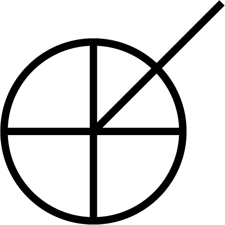
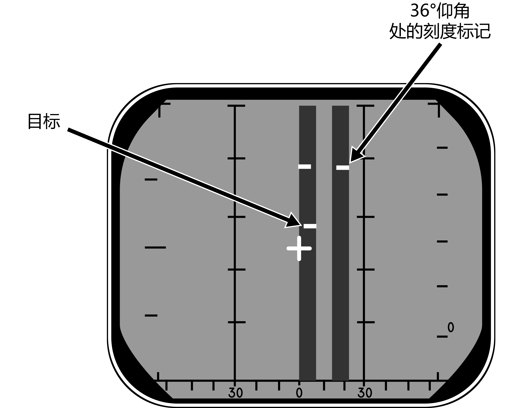
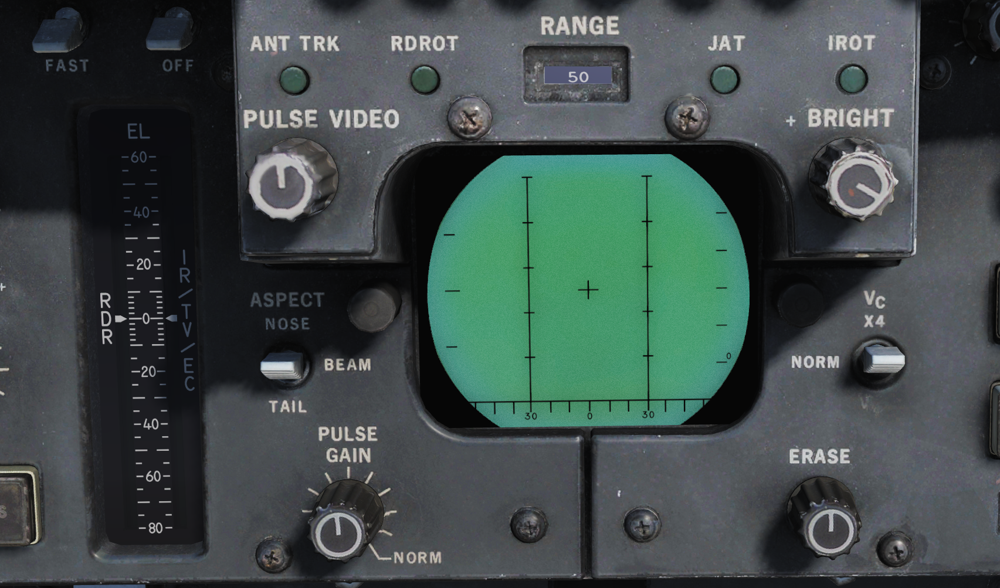

总体设计和系统概述¶
发动机和油门控制器¶
F-14A 装备了两台 普惠 TF30-P-414A 发动机，而 F-14B 装备了两台通用电气 F110-GE-400 发动机，两台发动机均为带加力燃烧室的涡轮风扇发动机。
为了向发动机提供均匀的亚声速气流，F-14 装备了 AICS 或称为进气控制系统。AICS 是通过控制可调进气道——更准确地说，是通过控制安装在进气道中的可调斜板来使气流减速。可调斜板的位置是通过使用各种传感器输入，加以计算后使用设定的制度来决定的，以此通过改变斜板的位置来完成对气流进行减速。（译注：制度表示调定程序）
此外，TF-30 发动机使用两个系统来改善工作可靠性——中间级放气系统（MCB）和马赫摇臂。
MCB 系统用于帮助降低大迎角下气流对压气机风扇的影响，从而降低发动机失速的可能性。MCB 系统将压气机部分的气流释放至发动机外涵道来为后一级压气机提供稳定的气流。正常情况下 MCB 系统将使用迎角、马赫数传感器来决定是否启用，但是在起落架手柄在放下位时，系统仅在五级加力时启用。此外，当在伸出受油管、发射 AIM-7 或 AIM-9、发射空对地航空火箭或发射 M61 火神航炮时，WCS 将指令启用 MCB。
马赫摇臂同样用于减缓发动机失速的风险——根据马赫数来控制发动机的最小和最大 RPM 来实现。此外，马赫摇臂还提高了飞机在亚声速大迎角状态下的最小发动机转速。
而在 F-14B 中的两台 F110 发动机则是通过 AFTC（增推扇叶温度控制装置）来进行控制的。AFTC 是一种早期的发动机控制计算机，类似于较新发动机中所使用的早期版 FADEC（全权数字发动机控制）。AFTC 控制发动机本身以及发动机排气的可变喷口的开闭，并取消了 F110 对 MCB 和马赫摇臂的需求。F-14A 中缺少类似的系统来控制 TF30 发动机，这也是 TF30 被认为不如 F110 发动机可靠的原因之一。
在 AFTC 发生故障的情况下，MEC（主发动机控制）可以对发动机进行控制以提供备份机械控制。正常模式——AFTC——将其称为发动机的主要模式（PRI），而备份 MEC 称为次要（SEC）模式。如果 AFTC 中发生故障，那么次要模式或主要模式将被自动选用，但也可以手动选择次要或主要模式。值得一提的是，在次要模式下，除了加力燃烧被禁用外，喷口还将完全闭合并被禁用，两者都被禁用将导致发动机性能下降。
此外，两台发动机还将分别驱动的供油系统、液压系统和发电机，以此来增加余度。
- 注意
TF30 和 F110 发动机最主要的区别（除了 TF30 发动机推力比 F110 小外）是 TF30 发动机对进入压气机截面的气流更加敏感。一般来讲，当在进行大迎角机动时应避免将油门设置在军推或开启后燃加力以下的位置，以及避免大偏航输入（译注：蹬舵）或不对称发动机油门设定。这就是说，HB F-14A 模组的 TF30 发动机使用了现有的数据和 SME（主题专家）的专业知识进行了大量的调整，从而对发动机进行精确建模而无愧于它的坏名声。TF30 发动机的液压-机械燃油控制的一个“优势”是其高速推力，这导致 TF30 发动机的极速比 F110 能够达到的极速要高。如果在正常飞行参数下，TF30 发动机的表现良好，但比起 F110 来说就显得有些动力不足。
油门控制器¶

F-14 的油门行程中含有数个限位机构以防止发动机意外启动或关闭发动机，或意外启用加力燃烧室。此外，如上图所示，油门还用来控制数个根据油门位置运作的不同的系统。这些系统中，其中最重要的就是发动机燃油关断和点火系统。
油门有三种操作模式：
MAN（手动模式）为机械操作模式，在手动模式下，油门通过机械传动机构直接连接到发动机来对其进行控制。手动模式被设计为备用模式，并且由于机械控制的特性，这种模式下对发动机的控制并不准确。
BOOST（助力）模式，助力模式是油门的正常操作模式，在这个模式下，油门通过电力控制作动器来移动与机械传动机构相同的发动机控制器，但与手动模式不同的是，助力模式对发动机控制更加准确并且控制油门所需要的力更小。
第三种模式是进近推力补偿模式或称为自动油门模式，在自动油门模式下，自动油门控制系统允许使用自动油门控制来在进近中保持最佳迎角。
油门模式的控制开关位于主油门一旁的进气道斜板/油门控制面板中，控制开关可用来选择全部三种油门模式。使用 AUTO 模式时，开关将由螺线管固定在 AUTO 档位，如果不满足自动控制的条件，那么开关将恢复至助力模式。
如需选择自动油门模式，必须将油门置于处于75%到90% RPM 之间、起落架手柄位于放下档位以及机轮不负重。如果再不满足前述条件，那么可以用力移动油门来手动超控或按下左油门握把中的 CAGE/SEAM 按钮，按下后螺线管将释放开关并恢复至助力模式。
此外，飞行员还可以在进气道斜板 / 油门控制面板中设置自动油门系统的增益。增益设置分别为 HOT、NORM 和 COLD ，HOT 档位增加一般油门计算机增益（和有效推力），COLD 档位减小一般油门计算机增益。控制开关设置对应外部气温的“冷”和“热”，但飞行员应根据实际油门控制进行设置。
RATS 或称为航降减推系统，航降减推系统将在触舰后限制发动机推力至适合舰上环境的水平。主起落架任意一侧机轮负重都将启用航降减推系统，并且可以通过推动油门选择加力燃烧来禁用 RATS。
最后，仅在 F110-GE-400 发动机上装备了的——不对称推力限制器（ASYM LIMITER），如果只有一侧发动机启用加力燃烧，那么不对称推力限制器将限制加力燃烧在最小加力推力直到另一侧发动机也启用加力燃烧来防止使用不对称加力燃烧。
发动机和油门控制开关以及指示器¶

进气道斜板 / 油门控制面板包含了大多数其它与发动机相关的控制开关。
THROTTLE MODE （1）开关分别用来将油门模式设置为 AUTO 、 BOOST 或 MAN 模式，开关由弹簧归中至 BOOST 助力模式，如上所述，开关可由螺线管固定在 AUTO 档位。
THROTTLE TEMP 开关也如上所述，用来控制自动油门系统的增益。
INLET RAMPS （ 3 ）开关用来启用（ AUTO ）或禁用，也就是收上（ STOW ）可调进气道斜板。
发动机起动开关（4）用于起动发动机至 20% rpm，转速到达 20% rpm 后可通过将对应的油门握把从 cut-off（关断）移动至 idle（慢车位）来起动发动机。如果飞机连接了外部气源，那么发动机则使用外部气源提供的空气来起动，如果没有连接外部气源则使用另一侧发动机提供的空气。当发动机转速到达 50% rpm 时，起动开关将自动回到关闭/归中档位。如果起动开关在转速到达 50% rpm 时没有自动归中，那么必须手动将其设置为归中（关闭）档位来防止损坏空气涡轮起动机。
BACK UP IGNITION （ 5 ）开关用来在主点火回路失效的情况下启用备用点火系统，通常通过将油门握把移动出 cut-off 档位来启用点火系统。

- 注意
仅限 F-14B。
ASYM LIMITER （ 1 ）开关位于不对称推力限制器 / 发动机模式选择面板中，ASYM LIMITER 开关用来启用或禁用不对称加力推力限制器。开关默认位置为 ON 档位，保护盖关闭时将开关固定在 ON 档位。
同一面板中的其他两个开关为 ENG MODE SELECT （发动机模式选择）开关（2），两个开关分别用来设置左发动机（L ENG）和右发动机（R ENG）为 PRI （主要）模式或者 SEC （次要）模式。

- 注意
仅限 F-14A。
MCB 检测面板，位于雷达拦截官驾驶舱中右侧控制台中，MCB 检测面板用于检测 MCB 系统是否正常工作。 TEST 开关（2）拨动至 TEST 档位后将启动检测电路，如果 MCB 电路正常工作那么对应左发和右发的两盏检测指示灯（1）将会亮起。

外部环境控制面板上的 ENG/PROBE ANTI-ICE （2）开关除了启用各个皮托管加热外，同时还启用发动机除冰以及进气道斜板除冰。开关拨至 ORIDE 将启用系统，开关拨动至 AUTO 档位时，如果探测到结冰，系统将被启用，开关拨至 OFF 档位将禁用系统。
发动机仪表组（EIG）及相关指示器和注意灯¶

ENGINE INSTRUMENT GROUP （发动机仪表组）向飞行员显示 RPM （发动机转速）、TIT （涡轮进口温度，F-14A） EGT （排气温度，F-14B）以及 FF （燃油流量）以便监视发动机运转状态。
- 注意
上图中显示的是 TF30 发动机仪表组，而 F110 发动机仪表组将在不久后实装。

发动机喷口位置表显示相应发动机喷口当前的位置：0 表示喷口完全闭合，指针顺时针转动到最大值表示喷口完全张开。F-14A 中的指示为 0 到 6 个单位，而 F-14B 中则为 0 到 100% 张开（单位是10）。

滑油压力表中显示相应发动机中的滑油压力从而允许飞行员能够检查发动机中的滑油压力是否在正常水平。
与发动机运转相关的注意灯位于飞行员驾驶舱中，注意 - 提示灯面板中以及 HUD 两侧。
位于 HUD 两侧的提示灯为发动机失速告警灯，当检测到发动机失速时，告警灯将以 3Hz 的速率闪烁。HUD 左侧的告警灯用于指示左发压气机失速，右侧的告警灯则指示右发压气机失速。告警灯亮起的同时还将伴随调制出的 320Hz 的单音警告音。
左发压气机失速告警灯下方的指示灯中，其中一个指示灯为 AUTO THROT （自动油门）注意灯，当自动油门系统通过除使用油门模式开关以外的方法断开时，注意灯将会亮起10秒钟。
注意 - 提示灯面板中，发动机相关的注意灯和告警灯分别为：
INLET ICE - 注意灯亮起表示左发进气道结冰信号器探测到结冰。
L INLET 和 R INLET - 注意灯亮起表示对应可调进气道系统的 AICS 系统出现了故障。
OIL PRESS - 注意灯亮起表示一侧发动机中的滑油压力过低。
BLEED DUCT - 注意灯亮起表示一侧发动机中出现高温空气泄漏。
L RAMPS 和 R RAMPS - 注意灯亮起表示对应的发动机进气道斜板没有锁定在指定的位置。
L GEN 和 R GEN - 注意灯亮起表示其对应发动机的发电机不工作。
L OIL HOT 和 R OIL HOT - 注意灯亮起表示其对应的发动机中的滑油过热。
L FUEL PRESS 和 R FUEL PRESS - 注意灯亮起表示其对应发动机中，燃油泵的出口油压低于9 psi。
仅 F-14A TF30-P-414A 含有的指示灯：
L & R OVSP/VALVE - 注意灯亮起表示发动机起动机系统存在故障或对应发动机中 N1 转子超速。
仅 F-14B F110-GE-400 含有的指示灯：
START VALVE - 注意灯亮起表示发动机起动机阀门开启。如果发动机起动后指示灯仍亮起，拨动发动机起动开关至归中位置。
L ENG SEC 和 R ENG SEC - 注意灯亮起表示其对应的发动机正在次要模式下运转。
RATS - 注意灯亮起表示 RATS（航降减推系统）已启用。
- 注意
F-14A 的特殊指示灯尚未实装。
燃油系统¶

1 - 受油管，2 - 地面受油口（右侧），3 - 前机身油箱，4 - 左副油箱，5 - 左盒形梁油箱，6 - 左翼油箱，7 - 通气油箱，8 - 放油装置，9 - 后机身油箱，10 - 右盒形梁油箱，11 - 右机翼油箱，12 - 右副油箱。¶
F-14 中主要用于储存燃油的为两个燃油供给系统，每台发动机各一个燃油供给系统。右发动机燃油供给系统由右机翼油箱、右盒形梁油箱和前机身油箱组成，而左发动机燃油供给系统由左翼油箱、左盒形梁油箱以及后机身副油箱。所以在进行油量表读数时，务必记住这一点。
如下表所示，飞机的可用燃油总量约为 20000 磅。
油箱分组 |
磅 |
|---|---|
前机身油箱 |
4,700 |
后机身油箱 |
4,400 |
右供油油箱组 |
1,600 |
左供油油箱组 |
1,500 |
机翼油箱 |
4,000 |
副油箱 |
3,600 |
燃油量指示器和控制¶

位于飞行员驾驶舱中右膝仪表板上的燃油量指示器用于指示飞机内部油箱和副油箱中的燃油量。
燃油量指示器中，最上方的指示器（ 1 ）显示当前设置的 BINGO （反航）油量，通过转动指示器旁边的旋钮（ 5 ）来设定所需的值。当剩余的燃油总量低于指示器中设定的值时，BINGO 注意灯就会亮起。
TOTAL （2）指示器显示飞机所有油箱中的燃油总量。
一般情况下， L 和 R （ 3 ）分别显示左/右供油油箱组的燃油量。燃油管理面板中的船形开关用于选择显示机翼油箱（WING）或副油箱（EXT）的燃油量，但船形开关由弹簧归中显示供油油箱组（FEED）的燃油量。当指示器显示机翼油箱或副油箱油量时，L（左侧）计数器将指示左翼油箱或左侧副油箱中的燃油量，R（右侧）计数器则指示右翼油箱或右侧副油箱的燃油量。
FUS & FEED 带状指示器（机身油箱和供油油箱组）以千磅为单位显示 AFT & L （后机身油箱和左供油油箱组）以及 FWD & R （前机身油箱和右供油油箱组）的燃油量。
另外，RIO 驾驶舱中也含有一个燃油量指示器，指示器位于右仪表板中。这个指示器只能显示所有油箱的燃油总量（详见 燃油总量表）。

位于飞行员驾驶舱中左侧垂直控制台上包含有适用于燃油系统的控制开关和按钮。
QTY SEL （1）船形开关在上文关于 L & R 燃油量指示带的介绍中有详细说明。
飞行员可以使用 FEED 开关来通过选择 FWD 档位（前机身油箱和剩余右发供油所使用的油箱）或 AFT 档位（后机身油箱和剩余左发供油所使用的油箱）修正由于单发停车或燃油供给管路故障所导致两侧油箱燃油量不平衡，而不是像 NORM 档位一样——左/右发动机燃油供给分别向对应的发动机输送燃油。当保护盖关闭时，这个开关会被保护盖锁定在 NORM 档位。
WING/EXT TRANS 开关用来控制机翼到发动机供油系统以及副油箱到发动机供油系统的燃油传输。一般情况下使用的 AUTO 档位将在起落架收上后立刻启用机翼/副油箱燃油传输。开关拨动至 ORIDE 档位时，无论起落架当前的位置，机翼/副油箱的燃油传输都将被启用，绕过起落架收上检测从而允许当飞机处于地面或在输油系统中发生电气故障时启用机翼/副油箱燃油传输。此外，开关位于 OFF 将禁用机翼/副油箱传输，但是当在 MTS（主测试）面板中选择 INST 档位进行测试、受油管设置为 ALL EXTD 或放油时，开关将被自动超控至 AUTO 档位。
使用 DUMP （5）开关可以通过河狸尾巴放油装置来将燃油放出，同时开关还会启用所有输油系统，使得除了机身油箱外，还能将机翼和副油箱中的燃油放出。如果机轮负重或者减速板未完全收起，那么放油将被电子禁止。
- 注意
尽管从技术上来说，放油过程中是可以开启加力燃烧室的，但是这样有可能会点燃放出的燃油，因此禁止在放油时进行加力燃烧。
空中受油¶
上文所讲的燃油管理面板还可以对空中受油系统进行控制。
REFUEL PROBE （6）开关用于控制受油管伸出以及设置燃油系统来进行接收。两个伸出档位（EXTD）分别为 ALL 档位——启用所有油箱受油，包括机翼油箱和副油箱， FUS 档位——启用仅机身油箱受油。开关位于 ALL 档位时，机翼和副油箱的输油将被禁用从而使所有油箱受油。开关位于 RET （收起）档位时，受油管收回并恢复一般燃油系统运作。
- 注意
开关拨至 EXTD ALL 将复位 WING/EXT TRANS 开关至 AUTO 档位。
失火探测和灭火系统¶
失火探测系统¶
F-14 的失火探测系统含有两个火焰感测回路，每台发动机各一个。
如果整个回路中每一处都探测到温度都超过 600°F（约 316°C），或在任意 6 英寸范围内探测到温度超过 1,000°F（约 538°C）便会触发失火探测回路。触发左探测回路使 ACM 面板中左发失火告警灯亮起，触发右探测回路使右发起火告警灯亮起，详情 空战格斗面板 。
此外，F-14 中还有多个设计用于探测发动机内热空气泄露的传感器，如果探测空气温度高于575 °F （约302 °C），飞行员驾驶舱中 注意 - 提示灯面板 上的 BLEED DUCT 注意灯将亮起。
灭火系统¶

|

|
F-14 的灭火系统包含两个装有灭火剂的灭火瓶，灭火剂可以被注入飞行员选择的发动机中*。虽然系统包含两瓶灭火瓶，但是两瓶灭火瓶会同时注入灭火剂使得灭火系统成为一次性系统，一次只能扑灭一台发动机中的火灾。*译注：不会进入涡轮内部。
由于灭火剂的有效性取决于在火被熄灭前留在发动机内的时长，因此，在飞机空速较低的情况下，灭火剂的灭火效果更佳，这是因为在低速下，需要更长的时间来将灭火剂从发动机中吹出。灭火剂毒性低，旨在有效灭火的前提下尽可能减少对发动机造成的损伤。
飞行员可以抽出失火发动机相应的 FUEL SHUT OFF 手柄（见上图），并按下该手柄后面的灭火器按钮来激活灭火系统。拉起手柄将切断对应发动机的燃油供给，而灭火器按钮则将释放灭火剂注入到发动机中。
还有两个提示灯连接到灭火系统中，每个提示灯用来指示其中一个灭火瓶中的压力较低。 ENG FIRE EXT 表示主灭火瓶中压力较低， AUX FIRE EXT 表示辅助灭火瓶中压力较低。两个提示灯都位于飞行员驾驶舱中注意-提示面板上，详见 注意 - 提示灯面板 。
成功启用灭火系统后系统的两个提示灯将会亮起，并且还将指示是否错误释放瓶中的压力。
电气系统¶
F-14 中所有主要的电力都由两台发动机驱动的 AC（交流）发电机来提供。连接到发动机齿轮箱的每台发电机都能发出足够的电力来驱动飞机中所有的系统。
F-14 装备了两台整流变压器来作为 DC（直流）发电为系统提供 28V DC（直流电），同样每台整流变压器都可以单独驱动飞机中所有需要用到 DC 的设备。
F-14 在前轮后方包含有一个使用 AC 电源的外部电源插座，外部电源插座能够为飞机提供 AC 和 DC（通过整流变压器）。当一台内部发电机正常工作时，外部电源将自动从飞机电气系统中断开。
应急电力¶
F-14 中包含有一台由联合液压系统驱动的应急发电机，应急发电机可以发出有限的电力来提供 AC （交流电）和 DC（直流电）。如果系统失去由两台主发电机提供的电力，应急发电机将在1秒内接管关键飞行系统的供电。
控制器和指示器¶

电气系统的控制开关全部位于主发电机控制面板中。
MASTER GEN （ 1 ）开关控制主发电机到电力总线的连接。 NORM 档位用于将对应一侧的发电机连接到总线。 OFF/RESET 档位用于断开发电机与总线的连接，并且复位任何由于供电超出正常限制而切断的保护电路。TEST 档位用于起动发电机，但不会将发电机连接到电力总线，从而在不影响其他飞机系统的情况下对发电机进行测试。开关被锁定在 NORM 档位，提起开关后才能将其拨回 OFF/RESET 档位。
EMERG （ 2 ）开关用于控制应急发电机。开关位于 NORM 档位时，如果主发电机发生故障，应急发电机将自动连接到应急总线。OFF/RESET 档位将禁用应急发电机，同时还复位相关保护电路（如果发生跳闸）。此开关被保护盖固定在 NORM 档位，需要升起保护盖才能将开关拨至 OFF/RESET 档位。
电气系统相关的注意/提示灯位于飞行员驾驶舱 注意 - 提示灯面板 中。L GEN 和 R GEN 指示灯亮起表示对应的发电机没有正常工作。可能是由于发电机故障或驱动发电机的发动机没有运转。
TRANS/RECT 提示灯亮起表示一个或全部整流变压器没有正常工作。
应急发电机可以通过 主测试面板 中的 MASTER TEST 开关，选择 EMERG GEN 档位对发电机进行测试。GO 指示灯亮起表示测试完成。 发生故障时， NO GO 指示灯将会亮起。
断路器¶
F-14 的断路器位于飞行员的左/右膝仪表板以及 RIO 座椅后部的左侧和右侧。通过弹出断路器来从过电流中保护飞机的系统并隔离消耗太多电流的系统。断路器弹出时，断路器中将会出现一根白线表示已弹出。可以通过按下断路器来将断路器复位，也可以手动抽出断路器。
断路器实装至 DCS 时，我们会在此处详细描述各个断路器的功能。
液压系统¶
F-14 有两个独立的液压系统，分别是飞行液压系统和联合液压系统。
两个系统都由连接到每台发动机的液压泵提供动力，飞行液压系统由右侧发动机提供动力，联合液压系统由左侧发动机提供动力。在正常运行时，两个液压系统的中的油液压力将被液压泵加压至大约 3000 psi。
两个液压系统为所有飞行操纵面提供动力，而联合液压系统同时也向一些二级系统提供动力，例如襟翼、起落架和受油管。由此一来，两个系统就可以在另外一个系统发生故障的情况下独立地驱动操纵面运动。
此外，当升空时，可以通过起落架手柄旁的开关来从液压系统中隔离无关系统的液压。这样一来，即使被隔离的系统损坏，也不会影响到联合液压系统中压力或造成油液泄漏。可以从联合液压系统中隔离开来的系统分别是：起落架、机轮刹车、防滑和前轮转向。起落架手柄处于放下档位时，这个开关将被机械锁定在关闭隔离档位。
如果只有一个液压泵失效，那么可以通过液压输送泵从没有失效的液压泵来对失效侧系统的液压进行加压。液压输送泵是一种双向液压泵，液压输送泵可以用来对另一侧系统中的油液进行加压，如果向另一侧加压的系统中的油液压力（压强）在 3,000 psi 左右，那么通过液压输送泵可以将失效侧系统的油液压力保持在 2,400 和 2,600 psi 之间。如果其中一个液压系统的油液压力低于 500 psi，那么传输泵将被关断以防止泵损坏，以及避免另一个正常工作的液压系统压力降低。液压输送泵可由飞行员手动关断。
如果两个液压泵都发生故障，那么飞行液压系统可以由一个被称为应急飞行液压泵的电动液压泵提供动力。应急飞行液压泵能独立地驱动飞机尾部的操纵面，即使在两个主液压系统压力为零的情况下，应急飞行液压泵也能让飞机返回基地并着陆。如果两个主液压系统中的油液压力降低至 2,100 psi 以下，那么电动液压泵将会自动启用，如果两个主液压系统中油液压力重新达到 2,400 psi，那么电动液压泵将会关断。自动启用电动液压泵时，备用飞行控制系统将以低速模式运行，但飞行员也可以手动切换至高速模式或低速模式。如果操纵面由应急飞行液压泵驱动，那么操纵面的偏转率会降低，且在低速模式下偏转率比高速模式下更低。
如果联合液压系统中的压力为零，那么飞行员可以通过手动液压泵来对受油管和机轮刹车蓄压器进行充压。这种方法主要用于在无动力地面作业时使用，但仍可作为备用液压泵在空中使用。
控制器和指示器¶

HYD PRESS （液压指示器）由两个仪表组成： COMB ——联合液压系统，FLT ——飞行液压系统，液压读数单位为千 psi。标度中包含液压泵造成影响时的公称压力 3000 psi 标记。
位于两个仪表下方的为标识旗，标识旗用来指示扰流板 SPOIL 的液压是否可用和应急飞行液压泵 EMER FLT 是否工作。HI 标识旗表示应急飞行液压泵以高速模式运行，LOW 标识旗表示应急飞行液压泵以低速模式运行。

BRAKE PRESSURE 应急刹车压力表显示了机轮刹车蓄压器中可用的油液压力。 PARK 指示停放刹车压力，AUX 指示机轮刹车压力。绿色区域对应的压力范围大约 2,150 psi 至 3,000 psi，红色区域表示压力低于 2150 psi。
HYD TRANSFER PUMP ——液压输送泵开关——位于飞行员驾驶舱中右侧控制台的液压输送泵开关面板上。液压输送泵开关可以用来手动关断液压输送泵（ SHUTOFF 档位），但开关通常位于 NORMAL 档位来使液压输送泵在任意一侧液压泵出现故障时自动启动。开关被保护盖固定在 NORMAL 档位。
应急飞行液压泵通过 主测试面板 中的带保护盖开关来控制。保护盖关闭时，开关固定在 (AUTO)LOW 档位，选择 (AUTO)LOW 档位将允许应急飞行液压泵如上文所述自动启用，其它两个档位—— HIGH 和 LOW 档位——当保护盖升起时，这两个档位可用来手动起动应急飞行液压泵低速模式或高速模式。
注意 - 提示灯面板 中唯一与液压系统相关的注意灯为 HYD PRESS 注意灯，注意灯亮起表示其中一个主液压系统中的油液压力低于 2100 psi。当两个主液压系统中的油液压力再次高于 2,400 psi 时，注意灯将熄灭。
机翼后掠系统¶

机翼后掠制度根据马赫数和襟翼互锁来控制。¶
机翼后掠系统控制着 F-14 机翼的几何形状，机翼后掠可使机翼在空中从 20 度移动到 68 度。当在甲板上时，75° 的停放后掠可以让 F-14 的翼展进一步缩短至33英尺（约10米）。
机翼由液压-机械螺旋千斤顶作动器进行移动，且作动器之间为机械互联确保机翼之间保持同步。两个主液压系统正常工作时，机翼后掠的最大变化速率大约为 15° 每秒。但负 G 或大量正 G 机动会影响实际的变化速率。
在正常工作时，CADC（中央大气数据计算机）根据当前马赫数通过机翼后掠程序来控制机翼的位置，这种工作模式被称为 AUTO 模式。飞行员还可以手动选择机翼后掠的位置或选择 BOMB 模式，选择 BOMB 模式将设置机翼后掠至55°或根据机翼后掠程序更进一步后掠。简而言之，CADC 机翼后掠程序决定了机翼的最小后掠角度。所有 CADC 后掠控制都通过电信号以及连接至机翼后掠作动器的两个独立通道（以增加控制余度）来完成。
ACM 面板旁的机翼后掠指示器用于指示当前指令的机翼后掠位置、CADC 程序设定的机翼后掠位置以及实际的机翼后掠位置。
应急模式¶
在正常模式下，机翼后掠通过电信号对机翼后掠进行控制，但在应急模式下，作为备用，仍然可以通过机械连接来控制机翼后掠。机械控制通过油门右侧的应急机翼后掠手柄来完成。应急机翼后掠手柄与机翼后掠系统中的液压阀机械连接，从而提供机械备份控制。
通常，应急机翼后掠手柄由位于下方的伺服装置根据电子机翼后掠程序进行移动，来确保手柄处于正确的机翼后掠位置上。如需断开电子系统并启用应急模式，首先需要打开手柄上保护盖，然后抽出手柄以获得额外的杠杆作用力。随后可以将手柄从连接到电力伺服装置的随动限位器中移出，移出限位器后使用手柄来手动控制机翼后掠的位置。
在应急模式下，飞行员必须确保遵循下表中的制度以避免损坏机翼：
速度（指示马赫数） |
最小后掠角度 |
|---|---|
0.4 |
20° |
0.7 |
25° |
0.8 |
50° |
0.9 |
60° |
1.0 |
68° |
如需返回正常工作模式，飞行员应将手柄调整到所需位置并按下，然后关闭保护盖。 接着，飞行员应该按下燃油管理面板中的 MASTER RESET 按钮，机翼后掠系统将设置后掠位置与手柄的位置保持一致。这时，伺服装置将驱动至指令的位置，然后重新将手柄接入随动限位器内以恢复正常运行模式。
机翼停放后掠¶
紧急机翼后掠手柄还用于选择机翼的停放后掠位置。停放后掠仅在位于地面时使用，选择停放后掠其目的是为了减小翼展，便于在甲板上停放飞机。由于机翼会掠过水平安定面上方，因此水平安定面权限系统将被启用并通过限制水平安定面的偏转来避免机翼和水平安定面相撞导致损坏。
如需将机翼设置为停放后掠，飞行员应将应急机翼后掠手柄移动至68°的位置，然后将手柄保持在抽出的位置。将手柄保持在最大后掠位置将使机翼密封气囊放气，并激活水平安定面权限系统， HZ TAIL AUTH 注意灯亮起表示权限系统已激活。当 HZ TAIL AUTH 注意灯熄灭，并且机翼后掠指示器种 OVER 标识旗出现时，停放后掠互锁将会解除，这时可以将手柄移动至 75° 并按下。
如需将机翼移出停放后掠，抽出手柄并向前移动至68°的位置处。这将使 HZ TAIL AUTH 注意灯再次亮起。当机翼移出停放后掠时，注意灯以及机翼后掠指示器中的 OVER 标识旗将消失。
与一般应急模式操作相同，将手柄移动至与随动限位器相同的位置上，然后按下 MASTER RESET 按钮。
控制器和指示器¶
用于控制机翼后掠系统的控制器（电力）位于右侧油门握把以及右侧油门握把右边（机械）。详见 油门握把 和 油门弧座 。
右侧油门握把上的机翼后掠苦力帽开关通常设置到 AUTO 档位，选择 AUTO 档位来启用 CADC 对机翼进行控制，AUTO 档位为苦力帽向上。向下拨动苦力帽将机翼设置为 BOMB 档位，机翼将后掠到55°或往后。
苦力帽 AFT （向后）和 FWD （向前）档位用来从 CADC 制度的位置手动移动襟翼。
油门弧座右侧的应急机翼后掠手柄用于控制机械操控的应急模式，详细见上文中的紧急模式。

ACM 面板右侧的机翼后掠指示器用于指示当前的机翼后掠位置。 左侧的指针指示了 CADC 制度的机翼后掠位置。左右两个垂直的指示带分别指示了机翼当前的指令位置和实际位置。
右侧的五个显示窗分别指示：
OFF - 关闭，系统无法操作。
AUTO - 自动，由 CADC 控制机翼后掠。
MAN - 手动，通过右侧油门握把中的苦力帽手动控制机翼后掠。
EMER - 应急，通过应急机翼后掠手柄控制机翼后掠。
OVER - 停放后掠，机翼处于停机后掠位置。
相关的告警灯与提示灯位于 垂直显示指示器（VDI） 和飞行员驾驶舱 注意 - 提示灯面板 中。
当两个机翼后掠电气通道都无法操作机翼后掠或使用应急机翼后掠模式时，VDI 右侧的 WING SWEEP 告警灯将会亮起。如果未使用应急机翼后掠模式，但告警灯亮起，那么就表示电气系统可能不正常工作，此时应使用应急机翼后掠模式。
当至少一个电气机翼后掠通道无法使用时，飞行员驾驶从注意-提示灯光面板中的 WING SWEEP 提示灯将亮起。
机翼后掠系统测试¶
起飞前，可通过 主测试面板 在不移动机翼的情况下对机翼后掠系统进行测试。
如需进行测试，将机翼后掠模式设置为 AUTO，然后按下 MASTER RESET 按钮。设置 MASTER TEST 旋钮拨至 WG SWP 档位。
机翼后掠指示器中的 CADC 指令后掠位置指示带将移动至 44° 的位置。飞行员驾驶舱中 注意 - 提示灯面板 上的 WING SWEEP 和 FLAP 注意/提示灯以及 垂直显示指示器（VDI） 中的 REDUCE SPEED 告警灯将亮起。
- 注意
WING SWEEP 提示灯将在测试开始3秒后亮起，然后熄灭，然后在测试开始8秒后再次亮起。
当 CADC 指令后掠位置指示带向前移动到 20° 位置时，就表示测试结束，上述指示灯将熄灭。现在 MASTER TEST 开关可以拨至 OFF 档位，并且测试已经完成。测试大约需要25秒来完成。
- 注意
测试过程中，RUDDER AUTH 和/或 MACH TRIM 提示灯可能会亮起，且驾驶杆可能会移动。这些是正常现象，可以忽略。
- 注意 2
主测试面板上的 WG SWP 测试尚未实装。
飞行控制系统¶
F-14 “雄猫” 的飞行控制系统由两个主液压回路驱动，液压由连接到每个发动机的液压泵提供动力。
在进行纵向（俯仰）控制时，机尾两侧的水平安定面的偏转角度保持一致，其作动方式与传统升降舵相同。
横向（横滚）控制由水平安定面和扰流板一同作动。为了使飞机进行横滚，机尾两侧的水平安定面将会向相反的方向偏转并配合使用横滚方向的扰流板来达到副翼的效果。
尽管 F-14 安装有两个垂直安定面和两个方向舵，但这仍然是标准舵面配置。
操纵面的位置 将在 操纵面位置指示器 中指示出来，操纵面位置指示器也可以用于检查驾驶杆位于归中位置时，操纵面配平位置。
- 注意
在 AOA 超过15个单位时，由于沿操纵面流过的气流发生变化，所以飞行员应使用方向舵来进行横向（横滚）控制。
配平¶
飞行员可以通过 驾驶杆 中的配平开关进行俯仰和横滚配平。按下配平开关会改变驾驶杆的归中位置，从而配平飞机。方向舵通过 进气道斜板 / 油门控制面板 中的 RUDDER TRIM 开关进行配平，使用这个开关进行配平同样会改变脚蹬板的归中位置。
马赫数配平和 ITS（综合配平系统）会自动进行配平以补偿俯仰配平带来的变化。马赫数配平系统可以补偿在跨声速和超声速时的配平变化，而 ITS 将补偿由于减速板以及襟翼位置变化带来的配平变化。
AFCS 自动飞行控制系统¶
AFCS（自动飞行控制系统）可通过从 AFCS 传感器生成的自动操纵面指令来为飞机提供额外的稳定性（SAS 或增稳系统 ）。通过 AFCS 控制面板 中的三个开关分别控制 AFCS 的仰俯、横滚和偏航增稳，每个增稳开关都可以单独进行设置。
俯仰和横滚增稳开关由弹簧归中，但是一般情况下通过为螺线管通电来使其保持在 ON 档位，这意味着，如果系统关闭或或无法进行操作，那么开关将会弹回 OFF 档位。偏航增稳开关是纯机械结构的开关。
当 AOA 超过15个单位时，不得使用横滚 SAS，飞行员应该在格斗机动中将 ROLL SAS 设置为关闭。
按下驾驶杆中的自动驾驶应急断开宽柄开关会使横滚和俯仰增稳开关退回 OFF 档位。
自动驾驶¶
除开增稳外，AFCS 还用于为飞行员提供自动驾驶功能。如需使用自动驾驶功能，必须先启用所有三个增稳通道。
自动驾驶系统的控制开关位于 AFCS 控制面板 中。
可用的自动驾驶模式包括：姿态保持、航向保持、地面航迹、高度保持、VECTOR/PCD（精确航线方向）和 ACL（自动助降）模式。
将自动驾驶的 ENGAGE 开关拨至 ON 即可接通姿态保持，并保持飞机当前的姿态。姿态保持的限制为30°俯仰和60°横滚，超出这个范围，飞机将自动移动至限制范围内。飞机当前的姿态可以通过操纵驾驶杆来变更，当释放驾驶杆时，自动驾驶将会保持释放驾驶杆时的姿态。
注意，在启用其它自动驾驶模式前，首先需要打开 ENGAGE 开关。
HDG 开关的 HDG 档位用来启用航向保持，操纵飞机转向至所需的航向，并将飞机坡度保持在5°以内来接通航向保持。
将 HDG 开关设置到 GT 档位时自动驾驶将进入地面航迹模式，等待 垂直显示指示器（VDI） 左侧的 A/P REF 告警灯亮起，之后按下驾驶杆中的前轮转向按钮。按下前轮转向按钮后 A/P REF 告警灯将熄灭，接着地面航迹模式将被启用，接通后将设置自动驾驶补偿飞机的风偏来跟随地面航迹。
ALT ——高度开关用于选择高度保持模式，与地面航迹模式相似，A/P REF 告警灯亮起后，按下前轮转向按钮启来接通高度保持模式。
数据链路引导航向 - 精确航线方向模式用于允许 Link 4 操作员远程操纵飞机。该功能没有在 DCS 中进行模拟。
最后一种自动驾驶模式为 ACL，也就是自动助降模式，自动助降模式用于联合 Link 4 数据链路和机载雷达信标来进行自动助降。如需启用 ACL 模式，首先将 VEC/PCD 开关拨至 ACL 档位，拨至 ACL 档位后将使 A/P REF 告警灯将亮起。截获 ACL 下滑道后，且 VDI 一旁的 ACL READY 和 A/P CPLR 告警灯亮起后，按下驾驶杆中的前轮转向按钮。按下前轮转向按钮后 ACL 模式将被启用，此时将由数据链路来操纵飞机。ACL 启用后 A/P REF 告警灯将熄灭。
ACL 可以与 APC（详见 油门控制器 ）结合使用来进行全自动助降。ACL 可以通过右侧油门握把上的 PLM 按钮断开，而 APC 可以通过左侧油门握把上的 CAGE/SEAM 按钮来断开。
所有自动驾驶模式都可以通过用力移动驾驶杆来超控或可以通过自动驾驶应急断开手柄来解除自动驾驶，按下手柄后所有自动驾驶开关将复位至 OFF 档位。
扰流板¶
扰流板位于机翼的上翼面，上文中（ 飞行控制系统 ）详细介绍了扰流板用于控制横滚，以及作为 防滑系统 系统的一部分用于在地面进行制动，同时扰流板也是 DLC 系统的一部分（详见下一个标题）。
为了避免和机身冲突，扰流板仅能在机翼后掠角度小于 62° 时伸出。
如果扰流板发送故障，无论是内侧还是外侧扰流板，扰流板对称保护逻辑将会禁用与故障扰流板位于同一部分中的所有扰流板。如果扰流板故障， 注意 - 提示灯面板 中的 SPOILERS 注意灯将会亮起。
如需超控对称保护，升起保护盖并将 扰流板故障超控 中相应部分所对应的开关拨动至 ORIDE 档位，接着按下 燃油管理面板 中的 MASTER RESET 按钮来超控对称保护。
扰流板的位置可以在 操纵面位置指示器 中查看。
直接升力控制（DLC）¶
直接升力控制（DLC）用于在无俯仰输入和油门调整的情况下控制飞机在下滑道上的位置。DLC 使用机翼两侧的内侧扰流板并联合小幅调整水平安定面来控制升力。
当襟翼放下且油门握把处在 MIL （军用推力）以下时，按下驾驶杆中的 DLC 开关来接通 DLC。接通 DLC 后，内侧扰流板将会伸出一半并允许使用驾驶杆中的 DLC 和机动襟翼控制拨轮对其进行控制。DLC 还需要 AFCS 横滚和俯仰通道、内侧扰流板和液压系统正常工作。
向前转动拨轮将使扰流板完全伸出，这将导致升力减小并使下滑道降低。向后转动拨轮将使扰流板收起到机翼表面，这将导致升力增加并使下滑道升高。
再次按下 DLC 开关会断开 DLC 系统。
襟翼和缝翼¶
F-14 “雄猫” 的襟翼和缝翼可在两种模式下使用。
襟翼和前缘缝翼的放下一般通过 油门弧座 旁的 FLAP 控制杆来控制。襟翼可以调节至收上和完全放下之间的任何位置，襟翼最大偏转角度为35°，前缘缝翼则为17°。辅助襟翼——最内侧部分的襟翼，辅助襟翼只有两个位置——收上和完全放下。当 FLAP 控制杆移动超过5°的位置时，辅助襟翼将完全放下。
如果存在故障使得襟翼无法被收上，那么飞行员应将 FLAP 控制杆移至 UP 档位后，接着向外侧移动并向上推至 EMER UP 档位来超控故障的互锁机构。
另一种模式为 CADC 在机动襟翼系统中自动使用襟翼和前缘缝翼来改善飞机的飞行性能。在这个模式下，襟翼最大偏转至10°，前缘缝翼最大偏转至7°，禁用最内侧的辅助襟翼。
一般来说，在自动模式下，机动襟翼系统仍然可以通过驾驶杆中的 DLC 和机动襟翼控制拨轮来手动控制机动襟翼。向前转动旋钮收起襟翼和前缘缝翼，向后转动旋钮放下襟翼和前缘缝翼。
机翼后掠时，襟翼将受限于机翼后掠的位置。机翼后掠角大于21°时，辅助（内侧襟翼）襟翼将被禁用。机翼后掠角大于50°时，所有襟翼将被禁用。前缘缝翼不会由于机翼后掠而被禁止。
襟翼和缝翼的位置在 机轮-襟翼位置指示器 中指示。
飞行员驾驶舱中 注意 - 提示灯面板 上的 FLAP 灯亮起表示襟翼系统中发生故障，并且襟翼位置不对称。 垂直显示指示器（VDI） 左侧的 REDUCE SPEED 告警灯表示指示空速超过225节但襟翼仍未收回。
减速板¶
F-14 “雄猫” 中的减速板由三个独立的操纵面组成，减速板位于飞机尾部，两台发动机之间，操纵面由联合液压系统提供动力。
减速板控制开关位于右侧 油门握把 中，根据控制开关保持在展开档位的时间，飞行员可以将减速板设置到所需的位置。收起减速板时将始终会直接完全收起。
为了避免减速板受损，空速超过400节后，减速板将会逐渐收回，并且使用 MIL （军用推力）或更大的推力时，减速板会被自动收回。
由于减速板展开会扰动机尾附近的气流，为了避免放油时燃油溅到飞机上，减速板展开时，放油将会被禁用。
减速板的位置可以在 机轮-襟翼位置指示器 中查看。
起落架系统¶
F-14 “雄猫” 采用可完全收起的前三点式起落架，起落架被设计得足够结实以应对着舰时的严酷考验。起落架的收起和放下由联合液压系统提供动力，以及起落架还拥有应急放下系统。应急放下系统中含有一个氮气瓶，氮气瓶可用于为单次应急放下提供动力。应急系统被触发后，需要由地面技术人员复位应急放下系统后才能进一步正常收回起落架。
有关控制器和指示器的其它信息，详见 起落架控制面板 （控制器）和 机轮-襟翼位置指示器 （指示器）。
前轮转向¶
当机轮负重时，飞行员可以通过按下 驾驶杆 中的前轮转向按钮激活 F-14 中的前轮转向系统。位于 HUD 左侧的 NWS ENGA 注意灯亮起表示前轮转向系统已激活，详见 机轮警告/刹车警告/ ACLS 和 AP 注意/ NWS 启用注意/自动油门注意灯 。
机轮不负重（起飞）、电源故障或放下弹射杆都将导致前轮转向自动断开。同时还可以通过按下驾驶杆中的前轮转向按钮来断开前轮转向。
前轮转向系统激活时，飞行员通过脚蹬板来控制前轮进行转向。前轮最大偏转角度可达到70°，也就是说，只要转动到最大角度，转向内侧的机轮实际上会后移动。
机轮刹车¶
机轮刹车可以通过踩下脚蹬板来启用。另一种方法是通过 起落架控制面板 中的停放刹车手柄来启用。
无论停放刹车是否开启，飞行员都可以通过踩下脚蹬板逐渐增加刹车力度。
一般情况下，两个机轮刹车系统中的液压都由联合液压系统来提供，但如果联合液压系统中的油液压力降低，那么机轮刹车系统将自动切换使用机轮刹车蓄压器。 应急刹车压力表 显示了当前机轮刹车蓄压器内的压力。
辅助刹车蓄压器内的油压最大时最多可提供大约13到14次机轮制动，停放刹车蓄压器最少可提供3次停放刹车。机轮刹车蓄压器可以通过 手动液压泵 来重新充压。
HUD 左侧的 BRAKES 告警灯用来指示停放刹车是否激活、防滑系统故障或指示制动正在应急模式下运行（仅踩下脚蹬板时亮起）。
防滑系统¶
防滑系统调节机轮刹车以防止飞机在地面上打滑。在空中启用防滑系统时，系统不会进行制动，直到两个主起落架机轮触地并开始旋转。此外，滑行速度低于15节时，防滑系统不会工作。
防滑系统还控制着扰流板制动系统，当飞机处在地面上且油门位于 IDLE 档位时，扰流板会作为刹车系统伸出。
- 注意
滑行期间应该关闭防滑系统，这是因为滑行速度低于15节时，即使在低于这个速度下防滑功能并不会工作，但防滑系统仍有可能干扰一般刹车制动。
位于 燃油管理面板 中的 ANTI SKID SPOILER BK 开关用于控制防滑系统。开关位于 OFF 档位将禁用系统，位于 BOTH 档位时将启用防滑和扰流板制动系统，位于 SPOILER BK 档位时仅启用扰流板制动系统。
弹射起飞和阻拦装置¶
前轮弹射起飞系统¶
F-14 的前轮配有一套用于舰上作业时进行弹射起飞的系统。
安装在或在前轮中的三个部件分别为前轮伸缩功能、弹射杆和限位杆连接件。
如需启用用于弹射起飞的系统，需要先使用 起落架控制面板 中的 NOSE STRUT 开关来收缩前轮支柱。将开关保持在 KNEEL 档位直到收缩动作停止来完成前轮支柱收缩。
收缩前轮支柱时液压油将从减震器中排出从而使前轮支柱收缩14英寸。收缩完成后还将释放弹射杆的锁定机构，随后弹射杆可以由甲板人员手动放下或通过偏转前轮10°以上来放下。
- 注意
在 DCS 中，弹射杆会随前轮支柱的收缩自动放下。
放下弹射杆后，飞机将被引导至弹射器中，然后连接至往复车，在 DCS 中，连接往复车的默认按键为 U 。目前 DCS 未模拟限位杆。
- 注意
飞行员应该在最后移动至往复车并钩挂往复车前取消前轮转向来避免偏心。
在完成正确的程序后，弹射起飞的最后一步是向 “shooter” 或弹射官敬礼，在 DCS 中，敬礼的默认按键为 左 Shift + U 。
当完成弹射滑跑距离，弹射杆脱离往复车时，存储的液压能量被释放回减震器，此时将会向飞机施加抬头力矩。向飞机施加抬头力矩的同时，弹射杆将自动升起至收上位置。
注意 - 提示灯面板 中的 LAUNCH BAR 提示灯用来指示弹射杆的状态。当机轮负重且当弹射杆放下时，提示灯就会亮起；如果将油门推至 MIL 档位，那么提示灯将会熄灭来表示是否满足弹射起飞标准。当机轮不负重时，如果前轮支柱没有完全伸展、弹射杆未收起并锁定或前轮转向超过15°，那么 LAUNCH BAR 提示灯将会亮起。满足前述任一条件时前轮收起都将被禁止。
弹射杆中止面板 中包含了 LAUNCH BAR 开关，LAUNCH BAR 开关用于在中止弹射起飞时使弹射杆与往复车分离。这个功能尚未在 DCS 中实现，如需将弹射杆分离往复车需要再按一次钩挂键，默认按键为 U 。
阻拦装置¶
位于 F-14 尾部下方的拦阻钩用于在舰上作业时进行拦阻着舰。
系统使用来自飞行液压系统和联合液压系统的液压动力，并且系统是由电力进行控制的，因此系统也需要电力。
通过 拦阻钩控制面板 中的 HOOK 手柄来对系统进行操作。手柄位于 UP 档位时将收起拦阻钩，位于 DN 档位时，拦阻钩将被放下至37°从而使拦阻钩在着舰期间钩挂甲板阻拦索。当拦阻钩的位置与 HOOK 手柄的位置不一致时，位于 HOOK 手柄一旁的过渡指示灯就会亮起。
当机上发生故障导致拦阻钩无法正常放下时，飞行员可使用机械备份来放下拦阻钩。如需激活机械备份，抽出 HOOK 手柄并逆时针旋转手柄90°。激活机械备份将解开机械锁定并释放使拦阻钩保持收上的液压，从而放下拦阻钩。
如果电力和液压动力都已恢复，那么可以顺时针旋转手柄90°并推回手柄，然后将手柄置于 UP 档位来收起拦阻钩。
- 注意
拦阻钩的位置同样会影响进近迎角分度器和进近灯，如果起落架放下时未放下拦阻钩，那么进近迎角分度器和进近灯将会闪烁。飞行员可以使用 主灯光控制板 中的 HOOK BYPASS 开关来禁用指示灯闪烁功能。
环境控制系统（ECS）¶
ECS（环境控制系统）为驾驶舱系统提供温度控制和压力调节，同时还为电子设备和武器提供冷却。
环控系统使用的气源来自发动机，可使用单发或双发引气，或使用机身右下部，右翼套挂架内侧的应急冲压空气进气门提供气源。
驾驶舱中使用 ECS 气源的系统分别为：驾驶舱增压、座舱盖密封装置、抗荷服充气、机组抗荷服通风、坐垫通风以及风挡加温和除雾。
其它使用 ECS 气源的驾驶舱外的系统分别为：副油箱增压、机翼密封气囊、电子设备冷却和 AN/AWG-9 雷达以及 AIM-54 导弹冷却（通过空气/液体换热器来冷却）。
气源和驾驶舱引气控制¶
ECS 的气源通过 空调控制面板 中的控制器来设置。
选择 L ENG 档位将使用左发动机作为气源；选择 R ENG 档位将使用右发动机作为气源；选择 BOTH 档位将同时使用两个发动机作为气源；一般情况下使用 BOTH 档位。
选择 RAM 和 OFF 档位都将启用应急冲压空气进气门，但是选择 OFF 档位将关闭加温系统和伺服系统的增压。
正常运行时，驾驶舱的温度由 TEMP 开关及同一面板中的拨轮来控制。如果将 TEMP 开关拨至 AUTO 档位，环控系统将通过调节温度控制阀门来自动保持所选的驾驶舱温度。如果 TEMP 开关设置为 MAN 档位——手动——在这个档位时，飞行员需要根据高度和空速变化调整拨轮来保持驾驶舱和抗荷服中的气温。
CABIN PRESS 开关用于控制驾驶舱安全阀，而安全阀控制着驾驶舱是否增压。如果开关位于 NORM 档位，那么驾驶舱气压将保持在8000英尺至23000英尺之间，当高度超过23000英尺后，调节器会将压差保持在对应高度5-psi 内。若开关位于 DUMP 档位，驾驶舱安全阀打开，驾驶舱泄压。
RAM AIR 开关用于当使用应急冲压空气进气门时，手动调节冲压空气进气门和座舱以及电子设备舱的供气量。在 RAM 模式下，空气将直接与发动机的高温引气混合。 INCR ——增加进气量——选择这个档位将打开冲压空气进气门来降低温度， DECR ——减小进气量——选择这个档位将关闭进气门来增加温度。RAM AIR 开关由弹簧归中。
- 注意
选择 RAM 或者 OFF 档位将禁止航炮开火。
当前座舱气压高度可在驾驶杆前方的 座舱压力高度表 中查看。
CABIN PRESS 注意灯位于 RIO 驾驶舱中的 注意-提示面板 内，注意灯亮起则表示座舱气压低于 5-psi 绝对气压或座舱其他高度高于27000英尺。在同一个面板中还有 COOLING AIR 提示灯，提示灯亮起表示电子设备冷却系统过热，以及指示 ECS 中存在故障，故障可能会导致电子设备损坏。
对于飞行员来说，抗荷服充气可以通过 抗荷服充气检测按钮 来测试，RIO 则可以通过 飞行服抗荷充气检测按钮 来测试。通过抗荷服或坐垫（如果没有穿着抗荷服）的气流分别由位于飞行员驾驶舱中 供氧-通风控制面板 面板上和位于 RIO 驾驶舱中 供氧-通风控制面板 面板上的 VENT AIRFLOW 拨轮来控制。
风挡加温和除雾¶
风挡加温和除雾通过 外部环境控制面板 和 座舱盖除雾 / 座舱通风气流调节拉杆 来控制。
WSHLD ——风挡——开关位于外部环境控制面板中， WIND SHIELD 开关用来控制使用高温引气来对风挡玻璃进行除冰或除雨。AIR 档位将启用吹送高温空气，OFF 档位将关闭吹送。
飞行员驾驶舱中的 座舱盖除雾 / 座舱通风气流调节拉杆 和 RIO 驾驶舱中的 座舱盖除雾 / 座舱通风气流调节拉杆 用来控制通过座舱盖空气散流器的空气流量，从座舱盖空气散流器中吹出的空气将用于座舱盖除雾。将手柄置于 CANOPY DEFOG 档位时，全部的驾驶舱空气将会通过座舱盖空气散流器；手柄置于 CABIN AIR 档位时，只有30%的空气通过座舱盖空气散流器，余下的空气将进入驾驶舱空气散流器。
当风挡温度高于 300° F （149° C）时，飞行员驾驶舱中 注意 - 提示灯面板 中的 WSHLD HOT 提示灯将会亮起。WSHLD HOT 提示灯亮起时，阀门将被自动关闭，并停止向风挡送风，直到风挡冷却。
AN/AWG-9 和 AIM-54 冷却¶
AN/AWG-9 雷达和 AIM-54 导弹都通过液体来进行冷却，冷却导弹和雷达的液体则通过独立的液/气换热器经由 ECS 空气来进行热交换冷却。
液冷控制面板 开关用于控制这些冷却系统，并且在没有携带 AIM-54 “不死鸟”导弹的情况下，应该选择 AWG-9 档位来只启用 AN/AWG-9 冷却泵。若携带了 AIM-54 导弹，则应该选择 AWG-9/AIM-54 来启用 AWG-9 和 AIM-54 的冷却泵。开关 OFF 档位时将关闭 AWG-9 和 AIM-54 的冷却泵，正在使用系统时不可选择 OFF 档位，否则系统将会过热。
RIO 驾驶舱中的 注意-提示面板 上包含了这些系统的提示灯。 AWG-9 COND 提示灯用来指示 AN/AWG-9 雷达冷却系统过热，冷却系统超温后继续使用 AN/AWG-9 雷达可能会导致雷达损坏。 MSL COND 提示灯指示 AIM-54 冷却系统超温或 WCS 正在挂载了 AIM-54 且 LIQ COOLING 开关未处于 AWG-9/AIM-54 档位的情况下运行。
外部 ECS 气源¶
对于在地面或甲板上运行需要进行冷却的系统，可以通过接通外部 ECS 气源来冷却这些所需的系统。
但是，一般所使用的外部气源无法同时为所有系统提供冷却，以此必须设置需要进行冷却的系统。通过 RIO 右侧控制台中的 敌我识别（IFF）天线控制 / 测试面板 上的 GND CLG 开关来控制需要冷却的系统。开关拨动至 OBC/CABIN 档位将为座舱和所有空气冷却的电子设备提供外部 ECS 气源。由于热交换的冷却空气不足，开关设置到 OBC/CABIN 档位将会禁用 AN/AWG-9 发射器。开关设置到 AWG-9/AIM-54 档位将为 AN/AWG-9 雷达和 AIM-54 换热器以及相关电子设备提供外部 ECS 气源。开关拨至 OFF 档位将关闭外部 ECS 气源，OFF 档位是当发动机运转时所使用的一般模式。
- 注意
在发动机运转期间， GND CLG 开关不应设置为 OFF 以外的任何档位。
- 注意2
对于 DCS 中的 Heatblur F-14 来说，外部 ECS 气源同样通过接通发动机起动机气源的命令来连接。
供氧系统¶
F-14 携带一瓶或两瓶10公升液态氧气瓶，液氧在需要时将为机组提供氧气。
氧气供应分别由飞行员驾驶舱中的 供氧-通风控制面板 以及 RIO 驾驶舱中的 供氧-通风控制面板 来控制。两个面板中均包含一个 OXYGEN 开关，将开关拨至 ON 或 OFF 档位来设置氧气供应。
液氧余量将在飞行员驾驶舱中，右侧控制台上的 液氧储量表 显示出来。液氧储量表显示剩余的液氧储备量，显示的最大值为20公升（如果安装了两瓶液氧瓶）。液氧储量表由电力驱动的，如果仪表没有通电的话，那么 OFF 旗帜将会显示出来，并且剩余储备量将显示为零公升。
除此之外，RIO 驾驶舱中的 注意-提示面板 包含了 OXY LOW 注意灯，当剩余液氧储备量低于2公升时，注意灯将亮起。
在 主测试面板 进行 INST 测试过程中，液氧储量表将显示储备量为2公升，同时 OXY LOW 注意灯将会亮起。
飞行仪表¶
除了 VDIG（HUD 和 VDI）外，F-14 还装备了：
安装数量为2的仪表分别安装在前座飞行员驾驶舱中的仪表面板和后座 RIO 驾驶舱中的仪表面板上。
所有需要电力的仪表都被连接到应急总线，这表示当主发电机失效时，应急发电机可以为仪表提供所需的电力。
关于仪表的更多信息，可以通过上面的链接查看它们所对应的驾驶舱面板的描述。
座舱盖¶
F-14 的后铰链座舱盖由液压-气动驱动。前座飞行员和后座 RIO 驾驶舱中都含有座舱盖控制器。
座舱盖控制可前往 座舱盖控制手柄 或者 座舱盖控制手柄 查看。
飞行员驾驶舱中的 注意 - 提示灯面板 和后座 RIO 驾驶舱中的 注意-提示面板 都含有 CANOPY 注意灯，注意灯亮起表示座舱盖未处于关闭、锁定的安全位置。
弹射系统¶
F-14 “雄猫”配备了2台 Martin-Baker GRU-7A 火箭助推弹射座椅，一台飞行员使用，另一台 RIO 使用。弹射系统为零-零弹射，即——能够在零空速、零高度条件下，成功将机组成员弹射出驾驶舱。
由于 F-14 作为双座飞机，因此除了弹射手柄和保险系统外，弹射系统还有额外的控制器，换句话说就是弹射指令控制杆。弹射指令控制杆位于 RIO 驾驶舱中，控制杆可以选择在 RIO 弹射时是否也将飞行员弹射出驾驶舱。
弹射指令控制杆位于传感器控制面板旁，见 弹射指令控制杆。当设置到 PILOT 档位时，飞行员弹射时两名机组成员都将弹射出去，而 RIO 弹射仅会将自己弹射出去。当设置到 MCO 档位时，任何一名机组弹射都会将另一名机组成员弹射出去。
系统不允许仅飞行员一人弹射出驾驶舱，因为让 RIO 孤零零留在驾驶舱内似乎不太好。
飞行员可以在 起落架控制面板 中查看弹射指令控制杆设置的档位， EJECT CMD 翻转指示器在弹射指令控制杆位于飞行员档位时将显示 PILOT ，位于 MCO 档位时将显示为 MCO 。
当启动弹射程序时，如果座舱盖没有抛离，那么可以通过位于飞行员驾驶舱中的 座舱盖抛离手柄 或者后座 RIO 驾驶舱中的 座舱盖抛离手柄 手动抛离座舱盖。如果座舱盖在启动弹射后没有抛离，那么手动抛离座舱盖可能会重启弹射程序。如果要在尾旋期间弹射的话，还建议在启动弹射程序前手动抛离座舱盖，这是因为在尾旋时座舱盖需要更长时间来远离飞机。
照明系统¶
F-14 “雄猫”照明系统包含机内照明和机外照明。
机内照明为红色仪表面板灯光和红色控制台灯光、红色和白色泛光灯以及两个驾驶舱中的可移动通用/地图照明灯。
机外照明包括了航行灯、防撞灯、编队灯、滑行灯、进近灯和受油管灯。
机内照明¶
红色仪表面板和红色控制台灯光主要在夜间使用，所有仪表和控制器使用背光进行照明，从而最大程度降低在照明时对使用夜视仪的影响。
泛光灯为驾驶舱中的面板提供额外的照明，但是注意避免影响到夜视仪的使用。
通用/地图照明灯是可移动的，因此它可以照亮特定的位置并被用作地图灯或阅读灯。
机内照明的控制面板位于前座飞行员的 主灯光控制板 中以及后座 RIO 的 机内照明控制面板 中，前座和后座分别控制各自区驾驶舱中的照明。
- 注意
通用/地图照明灯的功能并未在 DCS 中进行建模，但可以使用手电筒功能，默认按键左 Alt+L，可以随鼠标移动来提供类似的照明功能。
机外照明¶
F-14 中的的航行灯位于两侧机翼翼尖（左侧为红色，右侧为绿色）、左侧垂直安定面后上部（白色）以及扇翼上下两侧（左侧挂架为红色，右侧挂架为绿色）处。扇翼上下两侧的灯光作为翼尖灯的补充。当机翼后掠小于25°时，翼尖的航行灯将会亮起，当机翼后掠角度大于25°时，扇翼灯将会代替翼尖航行灯亮起。
在起落架放下，机翼后掠小于25°且航行灯处于稳定亮起时，翼尖灯和扇翼灯会同时亮起。当防撞灯处于开启档位时，航行灯只能在稳定亮起模式下工作。
防撞灯位于下巴吊舱（TCS 吊舱）、左垂直安定面前上部以及右垂直安定面后上部处。防撞灯均为红色频闪灯。位于 TCS 吊舱中的防撞灯仅在前轮轮舱盖关闭后工作。
编队灯为低亮度绿色灯光，在编队飞行时使用编队灯，编队灯的亮度可以逐渐调暗。编队灯位于机头（就在雷达罩后面）、机翼翼尖、机翼后方机身处和垂直安定面顶部边缘处。
滑行灯是一个固定的前灯，滑行灯位于前轮支柱上。滑行灯将会随起落架收上自动关闭（如果设置为打开）。
进近灯同样位于前轮支柱上，进近灯将复显进近迎角分度器来让 LSO 在着舰期间通过观察灯光来判断飞机的 AOA。
受油管灯光用于照亮受油管，灯光随受油管伸出自动开启。
除了左侧油门握把上的机外照明开关外（ 油门握把 ），其他所有机外照明控制拨轮/开关都位于 主灯光控制板 处，油门握把中的机外照明开关可以关闭或者启动除进近灯以外的所有外部照明灯光。
抛弃系统¶
抛弃系统中包含四个工作模式，分别是：应急抛弃 、ACM、选择抛弃和辅助抛弃。
应急抛弃
应急抛弃通过位于 起落架控制面板 的 EMERG STORES JETT 按钮来选择。按下应急抛弃按钮将使位于前座飞行员 注意 - 提示灯面板 中的 EMERG JETT 注意灯亮起。
应急抛弃在指示机轮不负重（无需主军械打开）的情况下就可以启动，应急抛弃会抛弃除 AIM-9 “响尾蛇”导弹外飞机上全部的挂载。
ACM 抛弃
ACM 抛弃通过 空战格斗面板 中， ACM 保护盖下的 ACM JETT 按钮进行选择。
ACM 抛弃——就像应急抛弃一样，不需要主军械打开，但是需要起落架手柄位于收上档位。与应急抛弃不同，ACM 抛弃仅会抛弃 RIO 在 武器控制面板 中所选挂点的挂载（1号和8号挂点设置为 SEL 或 B 档位来抛弃）。
选择抛弃
选择抛弃由后座 RIO 在 武器控制面板 设置和执行。选择抛弃模式要求起落架手柄处于收上档位且主军械开关打开。
选择抛弃模式的抛弃程序为：将需要抛弃的挂载的挂点开关拨至 SEL 档位，然后拨动 SEL JETT 开关并保持在 JETT 档位。
辅助抛弃
辅助抛弃模式作为备用模式在其他抛弃模式失效时使用。和选择抛弃模式一样，辅助抛弃需要起落架手柄处于收上档位且主军械开关打开。
辅助抛弃模式只能抛弃空对地挂载，并且是通过作动正常投放挂钩来抛弃它们的。这意味着飞机必须水平直线飞行，这是因为挂载不是被强行抛弃，而是靠重力投放并离开挂架。
- 注意
所有抛弃模式都无法抛弃 ITER 或挂载在 ITER 中的武器挂载，因此，无论挂载是否装有引信，ITER 上的挂载必须像正常投放武器一样来抛弃。
中央大气数据计算机（CADC）¶
中央大气数据计算机（CADC）就像蜘蛛网中心的蜘蛛一样接收绝大多数飞机飞行传感器收集的信息，并将这些信息传递给所有需要这些信息的系统。除此之外，CADC 通过机翼后掠制度来控制机翼后掠，同时 CADC 还控制襟翼和前缘缝翼，并且还受到相同制度的限制。
AN/AWG-9 武器控制系统（WCS）¶
AN/AWG-9 武器控制系统（WCS）是一个包含了 F-14 的主要传感器和计算机的综合系统，WCS 系统在空对空任务和空对地任务中提供了目标探测、跟踪和攻击的能力。
详细数据显示器（DDD）及控制面板¶

DDD 是 AN/AWG-9 系统中雷达部分的主要显示器和主要控制面板。除了位于传感器控制面板上的扫描范围和相对地面稳定控制器以外，DDD 中包括了所有雷达的控制器。
TGTS 开关，MLC 开关，AGC 开关 和 PARAMP 开关
位于 DDD 面板左上部分包含有4个开关（ 1 - 4 ），它们分别用于控制参数放大，主瓣杂波（MLC）抑制和目标大小参数。
TGTS （目标）开关可以选择预计目标的大小，WCS 会根据设置的目标大小来计算导弹发射区，并设置雷达中目标跟踪的参数。同时 TGTS 开关还设定发送导弹 ATC（主动制导转交指令）的距离， SMALL 为 6海里 发送、 NORM 10海里 发送和 LARGE 13海里 发送。如果开关选择的预计目标大小错误，就有可能会对目标跟踪和攻击产生负面影响。
MLC 开关用于控制在脉冲多普勒模式下系统如何抑制雷达系统中的主瓣杂波（MLC）。OUT 档位将关闭抑制系统，IN 档位则开启。在 AUTO 档位中，如果雷达天线仰角高于地平线3°以上，那么将会自动禁用 MLC 滤波器。
AGC 开关用于控制在脉冲多普勒模式下的自动增益控制，使用这个开关来控制用于 AGC（自动增益控制）的时间常数。一般情况下（NORM 档位）AGC 使用更长的时间常数来计算用于放大的平均值。如果雷达在有干扰的环境中或者有严重杂波的情况下，将 AGC 设置为更快的时间常数来缓解这些因素，但设置为快速同时也会使得雷达对真目标的灵敏度降低。
PARAMP ，参数放大器开关可以手动控制参数放大器，参数放大器用于在所有雷达模式下放大回波较弱的目标。通常来说，WCS 控制器会根据距离来决定何时使用 PARAMP，但是如果跟踪了一个回波异常强的目标，那么可使用开关来禁用 PARAMP 来减轻背景噪声的影响。如果将开关手动设置为关闭，那么探测距离会缩短大约35%左右。
- 注意
目前 AGC、PARAMP 和 TGTS 开关在 DCS 中无功能。
AWG - 9 雷达距离选择和跟踪指示
在 DDD 面板中的上部中央部分，包含了用于在搜索模式下设置雷达距离的控制器以及指示器。在这些控制器和指示器的下方还拥有在单目标跟踪（STT）模式下的雷达跟踪指示器。
六个圆形按钮（ 8 ）分别标记了 5, 10, 20, 50, 100 和 200 ，这些按钮用于在脉冲模式和在 IFF 问询时选择所需的雷达显示距离，这些按钮的设置同时会影响飞行员目标距离显示的标度。这六个按钮互斥，因为一次只能选择一个显示距离。在脉冲搜索模式下，通过上述按钮进行选择会影响雷达的 PRF 以及 DDD 中的显示标度，如果设置为20海里及以上的显示距离，那么将会启用脉冲压缩。
距离显示滚筒 （ 7 ），距离显示滚筒中显示了雷达在脉冲模式下当前 DDD 中的雷达显示标度，使用脉冲多普勒模式时滚筒为空白。在 STT 模式下进行 IFF 问询时，这个指示器还将显示±10。
在距离显示滚筒下方的是四个雷达跟踪指示灯，这些指示灯用来指示雷达在 STT 模式下如何跟踪目标。
ANT TRK （天线跟踪指示灯），指示灯亮起表示雷达正在跟踪目标来获得目标的方位和仰角的角度（方向）。
RDROT （雷达截获目标指示灯），指示灯亮起表示目标在距离内或接近率门限内，并且目标已锁定。
JAT （干扰源角跟踪指示灯），这个指示灯亮起表示天线正在跟踪干扰源的方位和仰角的角度。
IROT （红外捕获目标指示灯），指示灯亮起表示系统正在通过 TCS 跟踪目标来获得目标方位和仰角的角度，IROT 名称是早期 F-14A 中的 IRST 系统继承而来。
IR AUDIO 控制
IR AUDIO 控制旋钮（ 10 - 12 ）位于 DDD 面板的右上部，这些控制旋钮被用于与原始的红外传感器一起使用，在模拟的 F-14 型号中是无功能的。
雷达和导弹频率选择拨轮
DDD 面板右上角的拨轮用于控制 AN/AWG-9 雷达发射的频率（ 13 ），导弹控制波道则用于与 AIM-7 和 AIM-54 一起使用（ 14 ）。调整这些拨轮来避免受到其它装备了 AN/AWG-9 飞机的或其它外部干扰源的干扰。由于导弹需要进行调谐，在 AIM-7 准备好后，WCS 将会读取 AIM-7 的导弹波道，在准备好 AIM-7 后变更波道不会起到任何作用，除非重新开始导弹的准备程序。
- 注意
目前在 DCS 中尚未模拟。
雷达模式选择按钮
DDD 面板的右下部包含有显示模式、雷达模式和 DDD 本身滚筒指示器的控制开关与按钮。显示模式按钮 （15）用于选择当前 DDD 所选的显示模式。 RDR （雷达模式），此模式为一般的所选模式。 IR 模式由于没有安装 IR 系统，所以是无功能的。 IFF 按钮按下后将在 IFF 本身的两种运行模式下的其中一种来启用 IFF 问询器，详情参见总体设计和系统概述的 IFF 部分。
雷达模式按钮（ 16 ）用来选择 AN/AWG-9 雷达的运行模式。两个 STT 按钮——脉冲多普勒单目标跟踪（ PD STT ）和脉冲单目标跟踪（ P STT ）——如果可用，这两个按钮可用来选择 STT 的模式。同时这两个按钮还用于自动尝试锁定至 TID 中选中的目标或用于在两个 STT 模式之间进行切换。脉冲多普勒搜索按钮（ PD SRCH ）用于选择雷达 PD SEARCH 模式。边搜索边测距按钮（ RWS ）用于选择雷达 RWS 模式。两个边搜索边跟踪按钮（ TWS AUTO 和 TWS MAN ）用于选择雷达使用与之对应的 TWS 模式运行。脉冲搜索按钮（ PULSE SRCH ）用于选择雷达脉冲搜索模式。
滚筒指示器 （ 17 ），滚筒指示器指示了当前所选的雷达模式。除了显示 TWS MAN，TWS AUTO，RWS 指代各自的模式外，滚筒指示器还可以显示 MRL（手动快速锁定）、A-G （空对地）、VSL（垂直扫描锁定）、OPTTRK（TCS 跟踪）、PLM（飞行员锁定模式）、PULSE（脉冲搜索模式和脉冲 STT 模式）、PD（脉冲多普勒搜索模式和脉冲多普勒 STT 模式）和PAL（飞行员自动锁定模式）。
Aspect 和 Vc 开关
在 DDD 的两边是 ASPECT 开关和 VC 开关。 VC 开关（ 18 ）用于控制在脉冲多普勒模式下 DDD 上显示的目标接近率标度。开关拨到 X-4 档位时，接近率标尺区间被设置为800节离开到4000节接近，拨到 NORM 档位时，接近率标度将设置为200节离开至1000节接近，VID 档位则将接近率标度设置为50节离开至250节接近。
ASPECT 开关（ 21 ）将根据雷达模式控制两种不同的功能。在脉冲多普勒搜索模式中，ASPECT 开关用来控制雷达的接近率处理窗口，NOSE 档位将设置为600节离开至1800节接近，BEAM 档位将设置为1200节接近至1200节离开，TAIL 档位将设置为1800节离开至600节接近。在短脉冲 STT 模式下，开关不同的档位将系统跟踪模式设置为对应的回波边缘和回波质心来减轻对抗措施对例如箔条和特定干扰模式的影响。
仰角指示器
仰角指示器标度—— EL （ 22 ）——这个指示器用于指示传感器的仰角。左侧（ RDR ）的指针指示当前实际的雷达天线的仰角。左侧的指针将会随天线在雷达搜索模式下的移动而移动。
如果将 HCU 设置为 RDR 模式，右侧（IR/TV/EC）指针将指示当前设置的天线栅状扫描的仰角中心。由于可使 RIO 在最终返回到搜索模式时设置需要使用的天线的仰角中心，这个指针在 STT 模式下显得十分有用。
如果设置 HCU 为 IR/TV 模式，那么右侧指针会显示当前 TCS 的仰角。
反干扰模式控制器
面板的左下角含有三个反干扰模式按钮。这些按钮的功能用于反制各种影响系统的干扰。（尚未实装）
雷达和 DDD 控制旋钮
在 DDD 面板上有八个不同的旋钮，它们各自用来控制 DDD 的和雷达的不同功能。坐落于 DDD 左上角的是 PULSE VIDEO 控制旋钮（ 5 ），这个旋钮用来控制 DDD 在脉冲模式下的视频强度。旋钮只对 DDD 产生影响，不会影响雷达本身。
位于 DDD 右上方的是 BRIGHT 控制旋钮（ 9 ），它通过调节偏振滤光镜来机械控制 DDD 的亮度，主要用于低亮度条件下。
位于 DDD 的左下方的是 PULSE GAIN 控制旋钮（ 20 ），这个旋钮用来控制在脉冲模式下的雷达增益。调整旋钮会直接影响雷达的增益。一般情况，将旋钮保持在顺时针旋转最大档位的限位机构，转动到限位机构来使 WCS 来自动控制脉冲增益。
位于 DDD 的右下方的是 ERASE 控制旋钮（ 19 ），这个旋钮用来控制 DDD 中擦除射束的强度。擦除射束会连续擦除 DDD 上的目标指示，因此这个旋钮的设置将会影响到探测到的目标的余像在 DDD 上的残留时间。
位于 DDD 面板的左侧的分别是 PD THRLD（ 26 ）、JAM/JET（ 24 ）和 ACM THRLD（ 25 ）控制旋钮。脉冲多普勒阈值旋钮（PD THRLD）用于控制一个回波视为一个接触的阈值，接触将会显示在 DDD 中，并在 RWS 模式和 TWS 模式下，在 TID 中显示出接触。CLEAR 旋钮控制着 CLEAR 区域（回波净区）阈值（DDD 的上半部分），CLUTTER 旋钮控制着 CLUTTER 区域（杂波区）的阈值（DDD 的下半部分）。在一般情况下，将旋钮顺时针转动到位于 NORM 档位的限位机构中，使 WCS 自动控制阈值。
JAM/JET 旋钮用来设置干扰强度的阈值，高于设定值的辐射源将被视为干扰机并在 TID 中使用干扰源射线将其指示出来。 ACM THRLD 旋钮可以用来设置 ACM 距离内将回波视为目标的阈值。在一般情况下，将旋钮逆时针转动至限位机构中，使 WCS 自动控制阈值。
- 注意
JAM/JET 和 ACM THRLD 旋钮的功能尚未实装至 DCS 中。
详细数据显示器
脉冲 |
|

|
|
脉冲多普勒 |
|

|

|
根据雷达模式的不同， DDD 屏幕本身可以显示仅雷达回波数据或雷达回波及其标识符。
在脉冲搜索模式下，屏幕中仅显示雷达回波以及可视化雷达扫掠与擦除扫掠。在此模式下，屏幕中会显示距离与方位。在脉冲多普勒模式下，屏幕底部还会增加一个 AGC TRACE，AGC TRACE 显示了探测到的目标的预测干扰强度。在此模式下，屏幕中会显示接近率与方位。
在两种 STT 模式下，除了目标的回波外，屏幕还将显示跟踪门（距离或接近率门）、位于右侧的接近率指示和攻击标识符（如果在空对空模式下并且已选择了导弹）。
在脉冲 STT 模式下，目标标识显示在正确的方位和距离上，而在脉冲多普勒 STT 模式下，目标标识将移动至屏幕左侧，而不是在正确的方位上生成目标标识。在脉冲多普勒 STT 模式下，还增加显示了 AGC TRACE 来表示干扰强度。有关攻击标识符，详情参阅 VDIG 部分。
- 注意
AGC TRACE 尚未实装。
在脉冲搜索模式下，当 IFF 问询器被启动后，IFF 信息将会叠加显示在正常雷达回波上。在脉冲多普勒搜索模式下，当显示 IFF 信息时，DDD 显示标度将切换至先前设置距离标度来显示距离和方位，在 PD STT 模式下，如果在 TID 选中了目标，当显示 IFF 应答结果时，那么 DDD 显示标度将切换至目标为中心 ±10 标度。
战术信息显示器（TID）与相关控制器¶

TID 是 WCS 的主要数据显示器。TID 向 RIO 显示战术信息，显示的战术信息用来识别和选择用于 F-14 “雄猫”上的远程武器的目标。将 TID 想象成一张俯视地图，所有显示出的跟踪以及符号都会以相对应的坐标显示在这张地图中，但是 TID 不会显示出地面/水面地物（地图）。同时 TID 还作为次要角色用于显示输入数据至 WCS、导航、INS 对准和机上检查（OBC）。
TID 显示控制旋钮
在 TID 的上方边缘处包含有两个显示控制旋钮（ 2 & 4 ）。左边的旋钮用于控制 TCS 的显示对比度，右边的旋钮用来控制 TID 的整体亮度。一般根据使用习惯和当前环境亮度来调整。
INS 和导航控制器
位于 TID 左上角的是 INS 状态指示器（ 1 ），状态指示器用来指示 INS 的状态和对准状态。
TID 的两侧包含有两个旋钮。左侧的旋钮（ 12 ）用来控制和选择使用 INS 或 AHRS（姿态航向基准系统）模式。同时这个旋钮还用于进行 INS 对准。
右侧的旋钮（ 6 ）用来控制在飞行员选择目标转向时，转向的目标源。旋钮用来在存储在 WCS 中的不同的航路点之间进行选择。MAN 档位仅用于在飞机挂载了 TARPS 时使用。
在 TID 右上方位于边缘处、右侧旋钮一旁的是读数滚筒（ 5 ）。读数滚筒用于指示当前提供给飞行员的转向信息的类型。
读数滚筒可显示的转向信息类型有：目标（DEST）、数据链路指令航向（D/L）、计算出的拦截转向（LD CLSN）、恒定角度拦截转向（CLSN），计算出的导引转向（LD PURST），追踪转向（PURST），塔康（TACAN）和手动设置指令航向（MAN）。
TID 数据读数滚筒
在 TID 的上方是数据读数指示器滚筒（ 3 ）。数据读数指示器用于在 TID 文本读数中指示数据的来源。可显示的读数分别为：导航系统中不同的航路点（WAY PT、ST、FIX PT、IP 和 HB）、本机（OWN A/C）、首要目标（TGT 1）和 SYMBOL。
当在 TID 中选中一个符号，但数据读数指示器中显示 SYMBOL 时，则表示选中的符号在滚筒中没有其对应的指示器文字。在上述情况下，指示器上也会显示为空白，TID 上也不会显示任何符号。数据源没有对应的指示器文字以及在 TID 中没有对应符号时，滚筒显示为空白。
TRACK HOLD 按钮与 CLSN 按钮
在上述 TID 两侧选择旋钮下方的是两个带有指示灯光的按钮，TID 每侧各一个按钮。绿色灯光亮起表示已选择按钮。
在 TID 左侧的是 TRACK HOLD 按钮（ 11 ），TRACK HOLD 按钮用于启用跟踪保持功能。通常，在 TWS 模式下，TID 中的目标会在最后一次观测到后开始保留在屏幕中14秒。按下跟踪保持功能会将所有目标保留的时间延长至2分钟。如果再次按下 TRACK HOLD 按钮，那么保留的时间将会恢复至标准的14秒一个周期，在14秒过后如果没再次观测到目标，那么目标将会被丢弃。
在 TID 右侧的是 CLSN 按钮（ 7 ），CLSN 按钮用于启用恒量角度拦截转向至当前跟踪的目标或重心（如果在 TWS 模式下时）。除了飞行员选择了 ACM 模式外，按下按钮恒量角度拦截转向将会超控当前提供给飞行员的转向信息。
TID 控制面板
在 TID 的下方是 TID 控制面板（ 8 ）。TID 控制面板上有8个按钮，分别用于选择在 TID 中显示的标识符，绿色灯光亮起表示已启用按钮。TID 控制面板上还包含有两个选择旋钮，分别控制这显示标度和 TID 模式。这些按钮分别是：
控制 / 指示器 |
功能 |
|---|---|
禁用 RID |
尚未实装。 |
ALT NUM |
高度数字按钮，启用显示跟踪符号左侧的跟踪高度。
目标高度数值单位为万英尺，比如说显示数字为1，表示目标高度在5000到15000英尺之间。
|
SYM ELEM |
符号补充标识，启用显示所有用于跟踪和航路点的补充标识符。
如果关闭这个按钮，那么所有跟踪和航路点都将在 TID 中以一个点显示出来。
|
DATA LINK |
数据链路按钮，启用显示数据链路跟踪。 |
JAM STROBE |
干扰源射线按钮，启用在 TID 中显示干扰源射线。
启用后，将显示超出 DDD 中设定的 JAM/JET 阈值的对雷达进行干扰的目标。尚未实装。
|
NON-ATTK |
不可攻击按钮，用来启用和禁用显示不能攻击的目标。
如，友军飞机。
|
VEL VECTOR |
速度矢量按钮，启用显示目标的垂直速率。 |
LAUNCH ZONE |
发射区按钮，根据所选的导弹的类型启用显示武器发射区。
发射区代替了相关目标中的速度矢量。这项功能会由 WCS 在目标进入最大发射距离前60时自动启用。
|
TID 面板中左侧选择旋钮用来控制 TID 显示模式（ 10 ）。 GND STAB （相对地面稳定）模式下，TID 显示是相对地面稳定的，这意味着当飞机在显示器中移动时，显示是固定的。在相对地面稳定模式下，显示器正上方为真北。 A/C STAB （相对飞机稳定）模式下，TID 显示是相对本机稳定的，这意味着显示会跟随本机一起移动，本机将保持显示在显示器中。在相对飞机稳定模式下，显示器正上方为本机航向。ATTK （攻击）的功能与 A/C STAB 相同，但不同的是叠加显示了攻击转向标识符。TV 档位用于选择在 TID 中显示 TCS 视频。选择 TV 档位后，将禁用 TID 和 HSD 上的一般战术信息。
右侧的选择旋钮用来设置 TID 的显示标度，设置所选的距离为显示直径。可用的显示距离分别为25海里、50海里、100海里、200海里和400海里，更大的显示距离可用于显示雷达探测距离外的数据链路信息。
TID 数据读数¶

指示符 |
功能 |
|---|---|
缓冲寄存器 |
显示当前 RIO 正在输入至 WCS 中的数据。该功能在 CAP 部分有进一步的说明。 |
数据读数 |
读数为显示 WCS 中的数据用于读数，例如，显示的读数可以是选中的跟踪的或本机的数据。这个功能在 CAP 部分有进一步的描述。 |
计算机运行指示器 |
读数显示 WCS 程序正在循环运行着。这个读数应该是连续地循环地数字，如果不是，则表示 WCS 计算机锁死或者死机。 |
雷达天线仰角 |
这个读数，如果在 STT 模式中，那么将显示当前 AN/AWG-9 雷达天线的仰角，或是如果在搜索模式下，则将显示栅状扫描仰角的中心。 |
栅状扫描极限 |
读数显示在设定的 TID 显示距离中，当前所选栅状扫描的高度极限。 |
导航系统状态 |
读数显示当前导航系统的状态，IN 表示 INS，AH 表示 AHRS，如果手动输入的磁差和计算出的磁差的差超过一定值，那么 MV 将会和当前的状态交替显示。 |
目标接近率 |
读数以接近率最近的10节的倍数显示 STT 目标的或 TWS 模式下选中的目标的接近率。数字旁的＋号代表跟踪正在接近本机，﹣号代表跟踪正在离开本机。 |
选定的武器 |
读数显示当前选择的空对空武器，G 表示航炮，SW 表示”响尾蛇”导弹，SP 表示”麻雀”导弹，PH 表示”不死鸟”导弹。SP 和 PH 同时还将指示所选的导弹类型，准备好发射的数量。在空对地模式下，读数为空白。 |
TID 标识符¶
标识 |
形状 |
功能 |
|---|---|---|
中心点 |

|
用于标记符号的坐标，所有符号最基本的组成部分，用于对应一个坐标。 |
本机 |
 | 代表本机的符号。天线扫描极限和干扰源射线都从这个符号延伸。在 GND STAB 模式下，符号会在 TID 中移动并显示速度矢量。在 A/C STAB 模式和 ATTK 模式下这个符号是固定不动的。如果本机符号移动到了 TID 显示距离外，那么显示器的中心将延伸出一条线至屏幕边缘，来指示本机符号的方向。显示延伸线可能是 TID 偏置功能或由于本机符号在相对地面稳定模式下在屏幕中移动导致的。 |
TID 光标 |

|
用作选中光标的圆环。在 TID 模式下，由 HUC 控制。
按下扳机第一段启用符号显示，按下扳机第一段同时还将启用 HCU 来移动光标。
光标的位置是通过偏转控制杆来设置的。这表示控制杆偏转的位置始终对应光标在 TID 中的位置，这使得 RIO 可以通过肌肉记忆来提高选中符号的速度。
如果一个符号位于光标中心0.125英寸的范围内，按下 HCU 扳机第二段将选中一个最近的符号。选中的符号将会高亮来指示已选中。如果不是选中符号而是空白，那么光标将会固定在选中的位置并高亮来指示选中了光标所处的位置。
如需在选中了空白位置（或释放选中的位置）后重新启用光标选中功能，按下扳机第一段并释放。
|
TWS 转向质心 |

|
TWS 跟踪的转向质心由 WCS 选择来用于武器攻击。 |
机载传感器目标 |
||
不明 |
RWS、TWS 和 STT 模式下的不明传感器跟踪。 |
|
敌机 |

|
TWS 和 STT 模式下，由 RIO 指定为敌机的跟踪。 |
友机 |

|
TWS 或 STT 模式下，由 RIO 标记为友机的跟踪。 |
角跟踪的雷达目标 |

|
仅能够角跟踪的目标（干扰中的目标）。 |
带有通过高度差测距的，角跟踪的雷达目标 |

|
仅角跟踪的雷达目标，通过高度差测距来计算离本机的距离。 |
TCS 角跟踪目标 |

|
通过 TCS 角跟踪的目标。 |
带有高度差测距的 TCS 角跟踪的目标 |

|
通过 TCS 进行角跟踪的目标，通过角度差测距计算离本机的距离。 |
数据链路目标 |
||
不明 |

|
数据源识别为不明的数据链路跟踪。 |
敌机 |

|
数据源识别为敌机的数据链路跟踪。 |
友机 |

|
数据源识别为友机的数据链路跟踪。 |
手动输入的参考点 |
||
基地 |

|
用来表示基地，航母或机场的航路点。 |
航路点 |

|
WCS 导航航路点，由数字指示航路点1、2和3。 |
防御点 |

|
用来显示需要保护的区域的航路点。 |
固定点 |

|
一般的固定点航路点。 |
敌对区域 |

|
表示敌对区域的航路点。 |
地面/水面目标 |

|
用于代表地面/水面目标的航路点。 |
IP |

|
用于空对地攻击的航路点，详情参考 计算机起始点模式 。 |
数据链路航路点 |
||
基地 |

|
表示基地的数据链路航路点。 |
航路点 |
数据链路通用航路点。 |
|
数据链路固定点 |

|
表示固定的数据链路航路点。 |
地面/水面目标 |

|
表示地面/水面目标的数据链路航路点。 |
位置符号修饰符 |
||
强制攻击 |

|
通过 RIO 选择强制攻击一个 TWS 跟踪时的附加标识符（穿过中心点的一根横线）。仅能通过这种方式指定一个目标为强制攻击，强制攻击的目标始终会被分配发射序号。 |
数据链路待摧毁目标 |

|
由数据链路数据源指定为待摧毁的数据链路跟踪上的附加标识符（穿过中心点的一根横线）。不会影响 WCS 中的目标优先级。 |
禁止攻击 |

|
一个 TWS 跟踪或数据链路跟踪上的附加标识符（穿过中心点的垂线），附加符号表示跟踪被指定为禁止攻击（通过 RIO）或取消攻击（通过数据链路）。如果是由 RIO 设置的话，那么将从 WCS 目标的优先级中移除该目标。 |
多目标 |

|
表示一个 TWS 跟踪或数据链路跟踪中有多个目标的附加标识符。可以通过数据链路接收或者通过 RIO 手动设置。 |
需要目视识别 |

|
一个数据链路跟踪上由数据链路指令进行目视识别目标的附加标识符（顶点位于中心的的小 V）。 |
目标脱锁 |

|
TWS 或 STT 跟踪上的附加标识符（中心位于中心点的小 X），符号表示在8秒内目标没有被更新。跟踪将在14秒后或2分钟后（如果启用跟踪保持功能）删除。 |
选中的符号 |
符号高亮 |
当通过 HCU 或 CAP 选中符号时，符号高亮表示已选中。 |
导弹正在攻击的目标 |
跟踪符号高亮 |
TWS 和 STT 模式下，在计算出的导弹飞行时间+15秒内，本机攻击的跟踪符号将高亮显示表示正在用导弹攻击目标。 |
目标位于最佳导弹发射区内 |
跟踪符号闪烁 |
TWS 模式或 STT 模式下的符号中，当到最佳导弹发射区时间小于8秒时，跟踪的发射区和发射序号将会闪烁。 |
高度数字 |

|
当选择在跟踪符号左侧显示高度数字时，高度数字用来指示跟踪的高度（高度显示为跟踪最近的万英尺高度）。以数字4为例，4表示跟踪高度在35000英尺到45000英尺之间。高度数字在雷达或数据链路跟踪符号中可用。 |
发射序号 |

|
当在 TWS 模式下，序号用于表示 AIM-54 “不死鸟”的目标优先级。下一枚发射的导弹目标为1号优先级跟踪，导弹发射后跟踪的需要将被移除来让其它5个跟踪的序号前进一来为下一次发射做好准备。
如果设置了目标为强制攻击，那么将强制 WCS 始终将强制的目标算入优先级内。
按下 NEXT LAUNCH 开关将自动设置选中的目标为1号优先级目标。
|
命中时间（TTI） |

|
AIM-54 发射后，跟踪的发射序号将由 TTI 或称为命中时间替代，TTI 显示了 WCS 计算出的导弹拦截跟踪目标的剩余时间。当发出 AIM-54 导引头开机指令时，TTI 数字将会闪烁表示导引头已开机。（译注：这里的导引头开机表示导弹从半主动雷达制导切换至主动雷达制导）。 |
速度矢量 |

|
当启用显示速度矢量时，速度矢量将从跟踪的中心点延伸出来。
速度矢量的方向表示跟踪的航向，速度矢量线的长度表示跟踪的速度，可指示的最高速度为1800节，TID 中线的长度为1.5英寸。
TID 显示模式在相对地面稳定模式下时，速度矢量的方向表示跟踪的真航向，速度矢量中线的长度表示跟踪的地速。
TID 显示模式在相对飞机稳定模式和攻击模式下时，速度矢量的方向表示跟踪的相对航向（相对本机），速度矢量线的长度表示跟踪相对本机的速度。
|
发射区矢量 |

|
TUMR（到最小发射距离的时间），TUOR（到最佳发射距离的时间）和 TUIR（到发射距离内/最大发射距离的时间）¶ 发射区矢量标识符由 RIO 手动启用或当到最大发射距离的时间小于60秒时启用，标识符启用后将替换正常跟踪速度矢量。
在发射区矢量中，跟踪符号的速度矢量线的长度表示到 Rmin 的时间，到 Rmin 最长时间限制为180秒（速度矢量线显示的长度为1.5英寸）。当到 Rmin 时间少于180秒时，速度矢量线的长度缩短，同时向跟踪的中心点移动（代表 Rmin）。如果速度矢量线的长度为0，则表示到达 AIM-54 的 Rmin。
同时还有第二个点在这条速度矢量线中，速度矢量线的末端到第二个点的距离表示到 Rmax 的时间（又称为到发射距离内时间）。也就是说，当速度矢量线缩短至第二个点时（速度矢量末端到达第二个点），则表示玩家处在 Rmax 了（到目标的最大发射距离）。当玩家超过 Rmax（即，到 Rmax 的时间，又称为到发射距离内时间为负数）后，第二个点将会消失。
发射区速度矢量中的粗线条（框）表示最佳导弹发射距离。当速度矢量末端到达这跟粗线时，表示到最佳发射距离的时间还剩8秒。
|
干扰源射线 |

|
从本机符号延伸至 TID 屏幕边缘的线，线条用来指示超过设定的 JAM/JET 阈值的干扰机。 |
雷达天线栅状扫描方位角限制 |

|
表示雷达栅状扫描中，扫描方位角的限制，在屏幕中由两条从本机符号延伸出的虚线表示。在所有雷达模式下，每根虚线中的单根实线和实线之间间断部分都表示为20海里。
在 STT 模式下，两条线将汇聚为单个跟踪射线来指示天线正在跟踪单个目标。
|
数据链路干扰源射线 |

|
通过数据链路接收到的干扰源射线，数据链路干扰源射线由数据链路点指向干扰机方向的线条指示。 |
数据链路光标 |

|
在数据链路跟踪周围的高亮光标（光环），高亮光标用来指示数据链路的操作员对特定的跟踪十分关注。 |
数据链路优先攻击目标 |
数据链路跟踪中附加的标识符，这个标识符用于指示必须被摧毁的目标。标识符不会影响 WCS 中的优先级序号。 |
|
攻击模式显示的符号 |
||
人工地平线 |

|
TID 中的人工地平线符号表示飞机的横滚和俯仰。线有偏转角度则表示横滚，在显示器中垂直偏转则表示俯仰。 |
转向引导符号 |

|
转向引导符号表示最佳导弹发射方向的转向误差。飞行员应尽可能将这个符号保持在 ASE 圆环的中心，并在发射导弹时也将这个符号保持在 ASE 圆环内。 |
允许转向误差圆环 |

|
ASE 圆环用于指示发射导弹的允许转向误差。圆环的大小随攻击路线、模式和所选的导弹而变化。 |
脱离指示 |
|
当目标的距离小于最小导弹或航炮发射距离时，TID 中心会出现一个大叉。 |
{kind=link}
{kind=link}
{kind=link}
{kind=link}
{kind=link}
- 注意
上述的一些符号与尚未实装至 DCS 的功能有关。
手控装置（HCU）¶

手控装置（HCU）控制杆和面板上相应的控制器是控制 RIO WCS 显示器的主要输入元件。除了控制杆和面板上的控制器外，HCU 面板中还包括了 WCS 的和 TCS 的电源控制以及指示灯。
HCU 电源控制和指示灯
位于 HCU 面板上部边缘的是 IR/TV 超温指示灯（ 2 ）、电源复位指示灯（ 4 ）和 WCS 电源指示灯（ 6 ）。当 IR/TV 开关处于 STBY 档位或者 ON 档位时，IR/TV 电源指示灯亮起表示 TCS 还未准备就绪，当 TCS 准备就绪后，如果开关仍处于 STBY 档位，那么指示灯将保持亮起，如果将开关拨动到 ON 档位，那么则指示灯将会熄灭。电源复位指示灯亮起表示一个或多个二次电源因为故障使电源保护回路跳闸而无法工作。WCS 电源指示灯亮起表示 WCS 系统当前处于待机或者开关处于 ON 档位但雷达还未准备好进行发射。在启动过程中，在雷达启动计时器计时结束前，指示灯将保持熄灭。如需复位雷达，将开关拨动至 STANDBY 档位再拨动至 ON。
位于 HCU 左上角的 IR/TV 开关（ 1 ）控制着 TCS 的电源。当开关拨到（STBY）档位时，启动系统但是不开启传感器。开关拨动至 ON 档位时启用传感器运行。需要注意的是，只有当 WCS 控制开关处于 STBY 档位或者 XMT 档位时，才能启用 IR/TV 开关。 WCS XMT 开关（ 7 ）控制着 WCS 计算机系统和系统相应的显示器（DDD 和 TID）的电源，以及禁止或允许雷达发射。当开关拨至 STBY 档位时将会开始向所有包括显示器在内的 WCS 系统供电，同时开始雷达预热程序。显示器预热需要30秒钟，雷达需要3分钟预热后才可以运行。在机轮不负重、雷达计时结束（预热）的情况下，WCS 控制开关拨至 ON 档位将启用雷达发射。
在 HCU 面板中上部的两个按钮分别是 灯光测试 （ 3 ）和 电源复位 （ 5 ）按钮。按下灯光测试（LIGHT TEST）按钮后会启用所有 WCS 系统的灯光与指示器进行测试。电源复位（PWR RESER）按钮按下后将复位二次电源的保护电路来重新启用二次电源，同时电源复位按钮还可以复位导弹供电。需要注意的是，只有在保护回路中故障保护跳闸仍然存在、电源复位指示灯亮起时才按下此按钮。
HCU 模式按钮
HCU 控制杆左侧的是四个带有指示灯的、互斥的 HCU 模式按钮（ 12 ），模式按钮中的绿色灯光亮起表示已启用选择的模式。按下 IR/TV 按钮后会进入 TCS 模式，进入 TCS 模式从而使用 HCU 控制杆和控制器来控制 TCS。按下 RDR 按钮将进入雷达模式，进入雷达模式后可以使用 HCU 控制杆来控制 DDD 中的雷达截获光标，使用雷达截获光标来从雷达搜索模式转换至 STT 模式。按下 DDD CURSOR 按钮将进入 DDD 光标模式，在 DDD 光标模式下，使用 HCU 控制杆和控制器来控制 DDD 光标，当使用雷达进行地形测绘时，使用 DDD 光标来指示地面坐标。DDD 光标模式用于雷达导航更新或在 DDD 雷达显示器中选择一个用作为航路点的位置。按下 TID CURSOR 按钮将进入 TID 光标模式，在 TID 光标模式下，使用 HCU 控制杆和控制器来控制 TID 光标选中（选择）TID 中的标识符用于标识符控制和数据读数。
HCU 控制杆
在 HCU 控制杆上的控制器包括：扳机（ 11 ）、仰角游标控制（ 10 ）、OFFSET 按钮（ 9 ）和 MRL 按钮（ 8 ）。HCU 控制杆的扳机有两个档位，按下扳机第一段和按下扳机第二段。 按下扳机第一段 ，按下扳机第一段将启用在所选模式下的光标显示，但当模式按钮选择 TCS，也就是 IR/TV 模式时除外，在 IR/TV 模式下，按下扳机第一段将启用控制杆控制 TCS 仰角和方位控制。在雷达模式下，除了显示光标外，按下扳机第一段还启用了超级搜索截获模式（详情参阅雷达过渡模式）。 按下扳机第二段 ，如果目标在 TCS 的截获门内，那么按下扳机第二段将告知 TCS 锁定 TCS 模式下的目标。在雷达模式下，按下按下扳机第二段将告知雷达尝试锁定在设定的方位下，处在雷达距离门/接近率门内的目标。在 DDD 和 TID 模式下，按下扳机第二段将标记当前光标的位置，或是如果在 TID 模式下，将尝试选中在显示器中距离光标中心0.125英寸内的符号（如果符号存在）。
仰角游标 控制是一个位于 HCU 控制杆左侧的一个拨轮，拨轮用于在 TCS 或者雷达模式下，±4° 微调传感器仰角来截获目标，微调是基于一般传感器仰角控制进行偏转的。控制杆顶部的 OFFSET 按钮用来偏置任何 TID 中的显示，移动本机符号至光标选中点的话（如果存在），那么其余的符号将会相对本机符号一并移动。通过选择另一个 TID 显示模式再返回原来的显示模式来复位偏置功能，所有符号将会返回原位。位于 HUC 控制杆右侧的 MRL 按钮可以用来启用用于目标截获的手动快速锁定模式（MRL），详情参阅 手动快速锁定（MRL） 。
根据 HCU 模式的不同 控制杆 的功能也有所不同。不变的是只有在按下扳机第一段才启用控制杆，并且所有模式下控制杆控制传感器或光标的绝对位置，这表示传感器或光标始终会移动至控制杆偏转的位置。在 TCS 模式下，控制杆的 X 轴（上/下）控制着 TCS 视线的仰角，Y 轴（左/右）控制着 TCS 视线的方位。在雷达模式下，控制杆 X 轴控制着 DDD 雷达截获门的距离或接近率，Y 轴控制着雷达截获的方位门。在两种光标模式下，控制杆 X 轴控制着光标的上/下移动，Y 轴控制着光标的左/右移动。
计算机位址面板（CAP）¶

计算机位址面板（CAP）是 RIO 用于控制和输入数据至/从 WCS 计算机读数的主要接口。
数字键盘 （ 3 ）
CAP 的上半部分包含了一个数字键盘，以及用于清除输入（CLEAR）、确认输入（ENTER）以及两个用于选择坐标的前缀的 S/W 和 N/E 按钮。一些数字键还有附加的功能，带有附加功能都按键用来选择用于数据显示和/或输入的前缀。包含附加功能的按键及其表示的含义分别为：
数字键 |
功能 |
|---|---|
1 |
LAT - 纬度——选择纬度用于显示和输入。 |
2 |
NBR - 数字——用于 IFT（飞行训练）和 BIT（机内自检）。 |
3 |
SPD - 速度——选择速度用于显示和输入。 |
4 |
ALT - 海拔高度——选择海拔高度用于显示和输入。 |
5 |
RNG - 距离——选择距离用于显示和输入。 |
6 |
LONG - 经度——选择经度用于显示和输入。 |
8 |
HDG - 航向——选择航向用于显示和输入。 |
0 |
BRG - 方位——选择方位用于显示和输入。 |
其中的一些附加功能的按键还会将对应的其他数据显示在 TID 中，但输入的数据只会影响所选的前缀。举例来说，按下 LAT 按键同时显示 LONG 读数，但输入数据只会影响 LAT，另一个例子是 SPD 和 HDG。
CAP MESSAGE 滚筒指示器和按钮
CAP 的中下部分包含了 MESSAGE 按钮和滚筒指示器及其 CATEGORY（类别）选择旋钮。滚筒指示器和更现代系统中的 MFD 中的按钮有些相似，但与 MFD 不同的是，滚筒指示器用一个滚筒来代替屏幕来显示当前按钮的功能。
当前按钮的功能是通过类别选择旋钮转动到不同类别来选择的，转动类别选择旋钮也将会转动滚筒指示器来指示所选类别的按钮的功能。当使用一个功能或选中符号时，功能或选中符号对应的 MESSAGE 阿牛将会亮起表示已启用。
不同类别中，显示出的 MESSAGE 和 MESSAGE 对应的功能如下：
BIT 类别包含了不同飞机系统的 BIT 启用相关的 MESSAGE 按钮。这些 MESSAGE 功能可能通常在 OBC 期间和起动期间运行或从 MESSAGE 功能运行单独的测试。 当机上测试和 BIT 实装后，将会在单独的章节详细介绍机内自检和机上检查，在当前的模拟中尚未实装。 |

|
SPL 类别包含了其它类别中没有的 MESSAGE 功能按钮。当前仅 IP TO TGT 功能可用并且用于计算机起始点模式，详情参见 计算机起始点模式 这个类别中还包含了用于手动起动 OBC 程序的按钮（ OBC BIT ）、一个用于显示最新 OBC 结果的按钮（ MAINT DISPL ）和一个用于清除最新 OBC 结果的按钮（OBC DISPL）。这些和其它功能尚未实装。 |

|
NAV 类别中包含了用于导航更新和更新 INS 运行和对准所使用的数据的 MESSAGE 按钮。 OWN A/C （本机）按钮用来选择对本机进行数据读数和数据输入，在 TID 中选中本机符号按下按钮功能相同。本机按钮用来输入对于对准来说至关重要的数据，例如本机坐标和海拔高度（如果在航母上还有航向和速度），还可用于读数关于本机的可用的不同数据。 STORED HDG ALIGN 按钮用于存储和指示预存航向对准是否可用。同时按钮也可以取消选择这个功能来进入正常对准。 WIND SPD HDG 按钮用于选择输入和显示风向风速信息，按钮还可以用于手动输入在备用导航中使用的风向风速。 MAG VAR（HDG) 按钮用于选择输入和显示导航系统所使用的磁差。 TACAN FIX 、 RDR FIX （雷达）、 VIS FIX （目视）和 FIX ENABLE 这四个 FIX 按钮用于更新飞机的位置来修正 INS 漂移。基本功能是选择更新的方式，然后按下 FIX ENABLE 将差值输入至系统中。导航更新的完成程序可在本章的导航部分查看。 两个 TARPS 按钮在没有挂载 TARPS 的飞机上无功能。 |

|
TAC DATA 类别中包含了 MESSAGE 功能按钮，可用于选中/选择 WCS 导航系统中可用的不同的航路点。可以通过 HCU 在 TID 中选中来达到和通过功能按钮一样的效果。选中航路点将启用通过 CAP 数字键盘来更新被选中的航路点。 PT TO PT 按钮无功能。 |
DATA LINK 类别包含了用于 RIO 数据链路回应数据链路操作员指令的 MESSAGE 功能按钮。WILCO （可以执行）按钮和 CANTCO （无法执行） MESSAGE 按钮用来告知操作员本机是否可以执行指令。POINT MESSAGE 按钮允许 RIO 标记选中的跟踪发送给操作员表示这个跟踪需要特别关注。 ENGAGE 表示本机有意攻击选中的跟踪。 NAV GRID 按钮用于启用 TID 中的 NAV GRID 功能，参见 导航指令与控制网格（NAV GRID） TID AVIA 按钮用于启用 TID 中的 AVIA 显示。尚未实装。 F/F NAV UPDATE 按钮允许 Link-4C 战机间导航更新。参见导航章节。 其它按钮皆无功能。 |

|
TARGET DATA 类别下包含的 MASSAGE 功能按钮用来修改选中的跟踪符号。 FRIEND 、 UNK （不明）、 HOST （敌机）和 MULT TGT （多目标）功能按钮用来标记选中的符号为对应的类别（多目标可以在其他三个跟踪符号类型上进行设置）。 DO NOT ATTK 按钮用来将目标设置为禁止攻击的目标，将目标从 WCS 开火指令中移除。 DATA TRANS （数据传输）功能启用一个选中的干扰源射线关联另一个选中的跟踪符号。这个按钮用于使得 WCS 更好地使用两个数据源来跟踪目标。必须在选中符号前先选中射线。尚未实装。 TEST TGT （测试目标）按钮按下后在 WCS 中设置一个模拟目标用于测试。当前尚未实现此功能。 SYM DELETE （符号删除）按钮允许 RIO 从 TID 中手动丢弃/删除一个跟踪或航路点（如果不再需要）。不能删除本机符号和数据链路跟踪符号。 IFT AUX LAUNCH 与 GND MAP 皆无功能。 |
程序重启按钮
MESSAGE 滚筒指示器和按钮下方的是面板中最后两个按钮。 PRGM RESTRT （程序重启）按钮用来在当 WCS 计算机意外停机时复位当前运行中的程序。当 TID 中的计算机运行指示器数字停止循环变化时，就代表计算机意外停机了。最后一个按钮是 TUNE DSBL 按钮，在模拟的 F-14 版本中不起作用。
数据读数/输入程序¶
TID 中的数据读数和输入始终遵循以下顺序：选择符号/功能 ->选择用于显示的前缀 -> 输入数据。
通过 TID 选中 或在 CAP DRUM 中不同的类别下，使用 CAP MESSAGE 按钮来选择所需的符号或功能。
大多数用于数据读数的前缀不仅仅显示一个读数，例如，调出经度或纬度中的任意一个，都会显示另外一个的读数，调出距离的同时还显示了方位，反之亦然，但是仅对所选的前缀输入数据。
如需不重新选择 MESSAGE 按钮来选择另一个用于数据读数的前缀，可以按下 CAP 上的 CLEAR 键，按下后将复位读数并允许选择新的前缀，这样一来就无需重新选择 MESSAGE 功能。如果已选择了前缀，那么再次按下按键可能会被视为输入数据，通常建议在重新选择新的前缀前使用 CLEAR 键来复位。这样一来就形成了以下建议顺序：选择符号/功能 -> CLEAR -> 选择用于显示的前缀 -> 输入数据。
如需输入新的数据至所选的前缀中，RIO 需要在选择了前缀后输入所需的数据，检查输入的数据是否正确然后按下 ENTER 键输入。TID 中的读数将会更新为新的数据。如需清除数据而不是输入它，按 CLEAR 键清除。
传感器控制面板¶

传感器控制面板包含用于 AN/AWG-9 雷达天线栅状扫描的控制器。传感器控制面板上还包含了各种 TCS 控制器，RIO 可以通过面板中的控制器来将雷达隶属于 TCS ，或将 TCS 隶属于雷达，以及包含了机载录像机（AVTR）控制器。
天线栅状扫描选择
传感器控制面板中，上半部分包含了雷达天线栅状扫描的控制器。 STAB （稳定）开关用来控制雷达天线栅状扫描是否相对于地平线（IN）稳定。如果 STAB 开关位于 OUT 档位，那么就表示，栅状扫描是相对 F-14 飞机的武器基准线稳定的。WCS 计算机在必要时会超控这个设置。 AZ CTR （方位角控制）和 EL CTR （仰角控制）旋钮用来设置天线栅状扫描中仰角和方位角的中心点。 方位角控制 旋钮用来在飞机中心线65°内移动扫描方位角的中心，如果扫描方位角宽设置为±65°的话，那么这个功能将会被禁用，这是因为设置为±65°已经扫描了最大的方位角角度。请勿移动栅状扫描至65°极限外，因为这样可能会使天线撞到天线方位角停止器导致损坏天线。 仰角控制 旋钮用来控制相对0°仰角，栅状扫描仰角底部的扫描线的俯仰位置。仰角可从 -76° 移动至 +54° 。上述的仰角控制和方位角控制旋钮都含有标记出的中心点，分别是飞机中心线和0°仰角。
AZ SCAN （扫描方位角）和 EL BARS （仰角扫描线数）选择旋钮用来控制天线栅状扫描的大小。AZ SCAN 选择旋钮有4个档位，分别是：±10°、±20°、±40°和±65°。EL BARS 选择旋钮也有4个档位，分别是：1、2、4或8线扫描。扫描线仰角覆盖角度分别为：1线2.3°、2线3.6°、4线6.3° 和 8线11.5°，之所以仰角覆盖角度不是扫描线数乘以1线的覆盖角度是因为，扫描线之间覆盖角度略有重叠。
传感器控制面板中最后一个雷达控制器是 VSL 开关。短暂拨动开关至 VSL HIGH 或 VSL LOW 将启用垂直扫描截获模式。详情参阅 垂直扫描锁定模式（VSL） 。
TCS 控制
在传感器面板右侧的 SLAVE 开关用来控制从属的传感器，或者互相独立。开关在中间档位时，两个传感器相互独立移动。当开关位于 RDR 档位时，当 TCS 锁定了一个目标时，雷达将会隶属至 TCS 视线。开关在 TCS 档位时，如果雷达处在 STT 或 JAT 模式，那么 TCS 将隶属至雷达视线。两种从属模式都可以使传感器引导传感器锁定至另一个传感器正在跟踪的目标。
TCS TRIM 旋钮用来校正 TCS 的方位（AZ）和仰角（EL）。TCS TRIM 旋钮用来校正 TCS 视线对准雷达视线。通常通过以下方式来完成校正：使用 STT 锁定一个目标，设置从属为 TCS，接着微调校正旋钮直到 TCS 视线对准锁定的目标。
最后两个用于控制 TCS 的开关是 ACQ（捕获）开关和 FOV（视场）开关。 ACQ 开关可以控制 TCS 如何锁定目标。当处于 AUTO SRCH 档位时 TCS 传感器会在有限扫描模式中移动尝试找到目标。MAN（手动）档位只能通过 HCU 在 IR/TV 模式下手动锁定目标，AUTO（自动）档位下 TCS 将自动尝试锁定进入视场内的目标。 FOV 开关可以用来控制 TCS 使用 WIDE（宽）或 NAR（窄）视场。
传感器控制面板的下半部分包含了机载录像机（AVTR）的控制器，这些控制器用来控制和指示电源模式和磁带的剩余录像时间。尚未在 DCS 中对其进行建模。
AN/AWG-9雷达¶
F-14 所装备的 AN/AWG-9 雷达是一部工作在 X 波段（8 - 12 GHZ）下的全天候，多模式脉冲多普勒雷达。AWG-9 雷达专为远程攻击而设计，可以在边搜索边跟踪（TWS）模式下同时引导6枚 AIM-54 “不死鸟”导弹攻击不同的目标。在最初的设想中，F-14 用作为远程舰队守卫者拦截俄罗斯轰炸机和其他威胁到舰队的敌机。在 F-14 服役生涯的后期，F-14 的任务重心由拦截敌方轰炸机转为对抗敌方战斗机。事实证明，F-14 同样很擅长这项任务。
AN/AWG-9 雷达有两种基本的工作模式：脉冲模式和脉冲多普勒模式，两种模式各有其优缺点。下表列出了两种模式下的不同功能，可用的武器投放方式、预期探测距离和目标数据。
模式 |
功能 |
武器投放 |
探测距离 |
|
|---|---|---|---|---|
脉冲 |
脉冲搜索 |
中程搜索和探测，以及有限的对地搜索能力。 |
瞄准轴模式发射导弹。 |
60海里 |
脉冲 STT |
中短程单目标跟踪和导弹制导。 |
可使用航炮和使用 CW 为 AIM-7 制导以及使用主动模式发射的 AIM-54。 |
50海里 |
|
脉冲多普勒 |
脉冲多普勒搜索 |
远程搜索和探测。 |
瞄准轴模式发射导弹。 |
110海里 |
边搜索边测距 |
远程搜索、探测和测距。 |
90海里 |
||
边搜索边跟踪 |
远程搜索、探测、多目标跟踪，导弹制导。 |
AIM-54，多目标攻击能力。 |
90海里 |
|
脉冲多普勒 STT |
远程单目标跟踪以及导弹制导。 |
航炮和所有导弹。使用 PD 和 CW 为 AIM-7 提供制导，使用 PD 和主动模式为 AIM-54 提供制导。 |
90海里 |
|
- 注意
探测距离参考为雷达截面积（RCS）5平方米的目标。
脉冲模式¶
在脉冲模式下，AN/AWG-9 不使用脉冲多普勒滤波器，这意味着脉冲模式可以用于探测各个态势的目标，也可以用于基本的地形测绘。脉冲模式的优点是，目标不需要与本机有一定的相对速度才会被视为目标，因此目标进行3/9线机动并不会使雷达失去对目标的跟踪。但脉冲模式的缺点是雷达难以区分地面杂波与真实目标回波，这意味着敌机可以利用地形隐蔽在杂波之中。由于没有多普勒滤波器，区分背景噪声和真实目标的难度大大增加，这就导致了脉冲模式的探测距离要比脉冲多普勒模式缩短不少。
AN/AWG-9 雷达拥有两个脉冲模式，分别是：脉冲搜索模式和脉冲单目标跟踪（P STT）模式。
脉冲搜索¶
脉冲搜索模式主要用于搜索和寻找探测距离内的空中目标。
脉冲模式可以用作为基本的地形测绘模式，地形测绘对于导航和导航更新来说十分有用，同时，地形测绘也可以在紧急情况下用于探测更大的地面/水面目标，例如舰船。请记住，AWG-9 雷达并非为了地形测绘而生，真正的空对面雷达的性能远胜于 AWG-9。
在脉冲模式下，雷达无法区分目标并生成跟踪符号，这表示 WCS 不会生成跟踪文件并显示任何符号在 TID 中。同样，在脉冲搜索模式下是无法为导弹提供制导的。
在脉冲模式下，DDD 将会在所选的标度显示雷达成像来指示目标的方位和距离，在搜索模式下可以通过选择 HCU 控制杆功能为 RDR 模式以及 HCU 控制杆来转换至 P STT 模式。脉冲模式下，可以使用传感器控制面板中的 STAB 开关来选择相对地面或相对飞机稳定模式。
脉冲单目标跟踪（P STT）¶
脉冲单目标跟踪模式用于跟踪单个目标，与脉冲搜索模式相同，此时雷达不易受到3/9线机动的影响，但是对地面杂波敏感。STT 模式下，雷达使用距离门来跟踪目标，这意味着雷达不易受地面杂波的影响，但是目标太接近地面的话，地面回波进入距离门中很可能会导致锁定震荡。
由于只能在脉冲多普勒模式下发送导弹制导指令，脉冲 STT 模式仅限于使用 CW 模式发射 AIM-7，以及以主动模式发射 AIM-54 导弹，从而限制了导弹的射程。在 ACM 距离内，脉冲模式可以使用 ASPECT 开关来设置以目标的何种态势进行跟踪，ASPECT 开关只是为了应对不同的对抗措施而进行设置。例如，如果将 ASPECT 开关设置为 NOSE 的话，雷达将回波质心设置在目标前部（机头），远离发射到目标后发的箔条，从而不易受到箔条的干扰。
如果 DDD 面板上的 ANT TRK 和 RDROT 指示灯亮起表示雷达成功锁定目标，这意味着雷达天线正在跟踪这个目标且目标处于跟踪门内。如果目标干扰的强度足够，导致无法进行距离跟踪，那么雷达将转换为干扰源角跟踪，干扰源角跟踪时，DDD 中 JAT 指示灯将会亮起，RDROT 指示灯将会熄灭。当在足够近的距离雷达可以再次进行距离跟踪后，雷达将会转换为距离跟踪。
在 P STT 模式下，DDD 的显示类似于脉冲搜索模式，只不过天线是锁定目标而不是进行扫描。此外，如果选择了有效的导弹，DDD 还将在目标的周围显示距离门、右侧标度中的接近率符号和可用于 P STT 的攻击符号。
脉冲多普勒模式¶
在脉冲多普勒模式下，AN/AWG-9 雷达使用多普勒滤波器过滤掉不需要的回波来增强对目标的探测，从而提高探测的距离。脉冲多普勒模式的有点在上述中已经提到：可以探测到距离更远的目标、几乎不受地面回波影响和向 AIM-7 和 AIM-54 发送制导指令。AIM-54 可以在 TWS 和 STT 模式下发射，而 AIM-7 只能在 STT 模式下发射。PD 模式最大的缺点是容易受到目标进行3/9线机动的影响，当目标的接近率接近为0的时候，目标将会被过滤。
AN/AWG-9 雷达的脉冲多普勒模式有：脉冲多普勒搜索，边搜索边测距，边搜索边跟踪以及脉冲多普勒 STT 模式。三种搜索模式有相同的 DDD 符号显示，三种模式的区别在于，脉冲多普勒搜索模式的探测距离略胜于另外两种模式，这是因为其他两种搜索模式需要处理 FM 测距来启用跟踪目标的距离指示。
脉冲多普勒搜索模式下，DDD 以方位和接近率（接近速度）显示回波，这表示仅在 DDD 进行读数的话，RIO 只能识别目标的接近速度和方位。需要注意的是 DDD 屏幕中显示的目标接近率是相对于地面的（减去本机的空速），而不是相对本机的接近率。这就意味着正前方的目标笔直向雷达移动，DDD 将显示目标真空速，目标真空速随目标态势和雷达天线的方位变化。这样做的原因是由于雷达本身只读取相对空速，之后再通过减去本机空速修改显示在 DDD 中。
用来指示雷达回波强度的 AGC 轨迹将显示在 DDD 显示屏底部边缘处，从而使 RIO 通过回波的强度来识别正在对雷达进行干扰的目标。如果一个目标的干扰强度超过设定的干扰阈值的话（通过 DDD 中的 JAM/JET 旋钮设定），那么在 TID 中会显示干扰源射线来指示正在对雷达进行干扰的目标。
DDD 面板中的 Vc 开关可以用来设置 DDD 中显示的标度（显示的接近率区域）。开关拨到 X-4 档位时，接近率标度被设置为800节离开到4000节接近。拨动开关至 NORM 档位则会将接近率标尺区间设置为200节离开到1000节接近。开关拨动到 VID 档位则会将标度设置为50节离开到250节接近。多普勒滤波器的工作区间也可以通过位于同一面板中的 ASPECT 开关进行设置，开关在 NOSE 档位时，接近率处理窗口为600节离开到1800节接近，BEAM 档位为1200节离开到1200节接近，TAIL 档位为1800节离开到600节接近。ASPECT 开关可使 RIO 在已知目标接近率的情况下对多普勒滤波器进行最佳处理，ASPECT 开关会影响到整个雷达的滤波处理，而 Vc 开关不会，Vc 开关只影响 DDD 的显示。
由于雷达操作多普勒滤波器的机制，雷达会有两个盲区。包含了大部分地速为零的地面物体的回波——主瓣杂波（MLC）区是其中一个盲区，MLC 滤波为以本机地速为中心，滤波区间宽266节（±133节）。这就是为什么目标可以通过3/9线机动摆脱雷达的搜索，当目标在进行上述机动时，目标的相对地速为0，故会被作为地面杂波滤除。但是，这种情况只会出现在雷达下视中，因为当雷达天线上视天空时不会出现地面回波，因此可以关闭滤波器。如果 DDD 面板中的 MLC 滤波器开关位于 AUTO 档位，且雷达天线仰角高于地平线3°以上时，那么雷达将会自动关闭 MLC 滤波器。滤波器也可以由 RIO 手动关闭，但是如果天线下视，在 RWS 和 TWS 模式下，可能会导致显示器无法使用，这是因为所有地面回波将会发送至计算机用于跟踪。无论在哪种情况，一旦关闭 MLC 滤波器且目标位于雷达上方，那么目标将无法使用3/9线机动来摆脱 AN/AWG-9 雷达的探测。
第二个滤波器，也就是第二个盲区——零多普勒滤波器。零多普勒滤波盲区以本机地速的负接近率周围为中心，这表示滤波区域内的目标正以和本机相同的速度离开。零多普勒盲区是因为硬件限制而导致的，如果没有多普勒频移的话，多普勒雷达就无法探测到目标。零多普勒导致的结果是，盲区的区间宽200节，这意味着雷达无法探测到相对本机地速±100节的目标（目标飞离本机）。这就表示在追逐飞离本机的目标时，可能需要使用脉冲模式。
由于本机相对目标的空速随方位变化，上述的两个滤波器滤波区间随态势变化。比如说位于45° 的目标的相对空速将会小于位于0°的目标，这是因为本机的速度矢量会略微偏离目标。由于地面回波的观测速度随方位的变化而变化，这就是为什么 DDD 中主瓣杂波轨迹会呈现为曲线的原因。

目标地速为900节，本机空速为1200节。详细信息参照下表，视线角速度是目标与本机的相对角速度之和。¶
视线角度 |
视线角速度 |
目标航向 |
|
|---|---|---|---|
1 |
60° |
1490 |
180° |
2 |
45° |
1500 |
120° |
3 |
30° |
1428 |
100° |
4 |
0° |
1200 |
90° |
5 |
30° |
672 |
80° |
6 |
45° |
210 |
60° |
7 |
60° |
-300 |
0° |
- 注意
位置4的目标正在侧对本机或正在进行3/9线机动，使其消失在 MLC 滤波或者 MLC 地面回波内。在禁用 MLC 滤波器且雷达上视的情况下，目标将会可见。
此外，在所有脉冲多普勒搜索模式下，雷达仅使用相对地面稳定，因此 STAB 开关在脉冲多普勒搜索模式下是无效的。
脉冲多普勒搜索¶
脉冲多普勒搜索模式主要作为预警模式使用。脉冲多普勒搜索模式是所有搜索模式下，探测距离最远的搜索模式，但是在脉冲多普勒搜索模式下无法向 RIO 提供距离，只能显示接近率。所以 TID 中不会显示任何跟踪信息。
边搜索边测距（RWS）¶
在边搜索边测距模式下，增加了频率调制测距模式（FM 测距），这可使雷达能够测量除接目标近率外还可测量跟踪目标的距离。但是，这种额外的数据测量意味着雷达有效探测距离会要缩短一些。DDD 中的成像显示与脉冲多普勒搜索模式下一致，但不同的是，在 RWS 模式下，TID 也将会显示跟踪符号，这是因为目标在被雷达扫描到时将会立刻被作为一个跟踪，并显示其位置和高度。DDD 中的目标最多显示两秒，或显示目标直到天线再次以相同的扫描线和在同样的方位扫描到目标+2秒为止，如果目标没有被再次探测到，目标将会被移除。DDD 中最多可显示48个跟踪。
边搜索边跟踪（TWS）¶
边搜索边跟踪模式同 RWS 模式一样使用 FM 测距，所以相对脉冲多普勒搜索模式的探测距离缩减是一样的，并且 DDD 显示也和脉冲多普勒搜索一致。和 RWS 模式的主要区别在于，在 TWS 模式下，计算机可以建立跟踪文件并同时跟踪最多24个目标，并在 TID 中显示最多18个跟踪。
由于计算这些跟踪的计算机程序需要将跟踪刷新时间设置为2秒，所以在 TWS 模式下雷达的可用的扫描方位角与扫描线数为 2-线扫描 ±40° 或 4-线扫描 ±20°。进入 TWS 时，计算机将会自动选择 4-线扫描 ±20°，计算机不会考虑 RIO 设置的扫描范围，除非将扫描范围设置为 2-线扫描 ±40°。
TWS 模式也是唯一一个可以为 AIM-54 提供制导来攻击多个目标的模式（最多六个目标），并且一旦雷达探测到可攻击的目标，计算机将会根据最佳导弹发射顺序来为目标分配导弹优先级序号。
TWS 包含有两个子模式，它们分别是 TWS AUTO（自动）和 TWS MANUAL（手动），两个子模式由 RIO 在 DDD 面板上通过对应的按钮进行选择。两个子模式的区别在于，在 TWS AUTO 模式下，一旦目标跟踪存在，扫描范围和栅状扫描的方位和仰角将由计算机接管。WCS 计算机将会自动尝试最佳化扫描范围和方位以便最大限度的跟踪优先的目标。如果在发射 AIM-54 前未选择 TWS AUTO 模式，那么 WCS 将会在第一枚 AIM-54 发射后超控先前所选的 TWS MANUAL 并进入 TWS AUTO 模式。
TWS 模式下，飞行员通过导航提示转向至跟踪目标的计算出的质心，并且这个质心同样会以 小X 状的十字显示在 TID 中。
脉冲多普勒单目标跟踪（PD STT）¶
脉冲多普勒 STT 模式与脉冲 STT 模式相似。就像其它脉冲多普勒模式对比脉冲模式一样，脉冲多普勒 STT 相比脉冲 STT 来说，既有优点也有缺点。这意味着，虽然脉冲多普勒 STT 模式可以更好的跟踪接近地面的目标，但是这个模式容易受到3/9线机动的影响。
DDD 中的脉冲多普勒 STT 显示和脉冲 STT 显示相似，除了在脉冲多普勒 STT 模式下，目标回波将和天线方位被移动到了屏幕左侧，并且生成出的合成目标标记是显示在正确的方位上的。这样一来，就和其他仅显示接近率的脉冲多普勒模式不同，合成目标的距离还可以被显示出来。在脉冲多普勒 STT 模式下， DDD 中的其它标识符和脉冲 STT 模式下的一致。
不像脉冲 STT 模式，AN/AWG-9 雷达可以在脉冲多普勒 STT 模式下向导弹发送制导指令，从而使 AIM-7 和 AIM-54 在脉冲多普勒模式下发射。脉冲多普勒 STT 模式是导弹发射距离最远的模式，但缺点是，AIM-54 在这个模式下发射，一次只能攻击一个目标。
过渡模式¶
过渡模式是用于从搜索模式、ACM 模式、通过 TCS 或两个 STT 模式之间过渡的模式。
RDR 模式下的 HCU 控制杆¶
当在不同搜索模式下使用 AN/AWG-9 雷达时，在 HCU 功能按钮选择 RDR 模式时可以使用 HCU 手动选定 DDD 中的目标来 STT 锁定。
当 HCU 功能按键选择 RDR 模式下，按下 HCU 扳机第一段将会在 DDD 中显示截获门，并启用雷达超级搜索模式。在超级搜索模式下，天线在截获门周围以选定的扫描线数和±10°扫描方位角进行栅状扫描。
截获门可以通过 HCU 偏转至探测到的目标上，控制杆向左/向右控制截获门方位偏转，控制杆向上/向下根据选择的是脉冲或还是脉冲多普勒模式，用来控制距离或接近率偏转。接着，使用 HCU 控制杆中的 ELEV 拨轮来微调天线仰角，直到将截获门置于目标回波上方。届时 RIO 可以按下 HCU 扳机第二段来指令雷达在指定的方位门、距离门/接近率门和仰角尝试锁定。
如果雷达成功锁定一个目标，那么雷达将会转换至相应的 STT 模式，DDD 中对应的指示灯也将会亮起。如果从脉冲搜索转换至 STT，那么将使用脉冲 STT 模式；如果从任何脉冲多普勒搜索模式转换至 STT，那么将使用脉冲多普勒 STT。
TWS STT 截获¶
在 TWS 模式下，RIO 可以通过在 TID 中选中一个跟踪，接着在 DDD 面板中按下脉冲 STT 按钮或脉冲多普勒 STT 按钮来尝试进行 STT 锁定。按下脉冲 STT 按钮或脉冲多普勒 STT 按钮后 WCS 计算机将指令天线以超级搜索模式在选中目标的方位门、距离门/接近率门和仰角上尝试锁定目标（前提是雷达探测到目标）。
与手动控制 HCU 来锁定目标不同，这个过程是完全自动的，但是其锁定目标的成功率也低于手动控制 HCU 来锁定目标。
ACM 模式¶
AN/AWG-9 雷达拥有三种不同的 ACM 截获模式。飞行员锁定模式（PLM）、垂直扫描锁定模式（VSL）和手动快速锁定（MRL）。
ACM 模式是以优先级顺序列出的，优先级较高的模式会超控其它优先级较低的模式。这意味着 PLM 模式始终超控 VSL 以及优先级更低的模式，VSL 模式超控 PAL 和优先级更低的模式，但是不会超控 PLM，依此类推。
除了 PLC 模式外，所有 ACM 模式可以通过 RIO 按下并释放 HCU 扳机第一段来退出，PLM 模式将一直启用直到飞行员释放 PLM 按钮。
飞行员锁定模式（PLM）¶

PLM 是 ACM 模式中优先级最高的模式，PLM 模式始终会超控其它雷达模式，当飞行员按下右发油门上的 PLM 按钮时将启用 PLM 模式。按下 PLM 按钮将会指令天线对准武器基准线（ADL），并使雷达尝试锁定5海里内的第一个看到的目标。
因此，使用 PLM 的方法就是飞行员将 HUD 中的 ADL 标记置于目标上方，然后按下 PLM 按钮直到目标锁定。PLM 将会保持启用直到探测到目标并转换至脉冲 STT，或直到飞行员释放 PLM 按钮使雷达转换回脉冲搜索。
垂直扫描锁定模式（VSL）¶

VSL 模式可以由飞行员或者 RIO 启用，VSL 模式用于锁定飞机当前航向上仰角-15°到+55°的目标。RIO 可以使用传感器控制面板上 VSL 开关选择 VSL 模式。RIO 可以通过将传感器控制面板中的 VSL 开关拨至 VSL HI（高目标）档位或 VSL LO（低目标）档位并释放来选择这两个子模式。在 A/G 以外的模式下，飞行员可以使用目标指定开关 UP 或 DN 分别启用 VSL HI 或 VSL LO。
启用 VSL 将命令天线以宽5°的圆形扫描覆盖范围进行垂直扫描。如果启用 VSL HI （高目标），那么扫描的垂直覆盖范围为+15°到+55°；如果启用 VSL LO（低目标），那么扫描的垂直覆盖范围为-15°到+25°。VSL 通过随天线视线移动的菱形在 HUD 中指示出来，菱形用来指示天线视线当前的位置。
当探测到5海里内的目标时，雷达将转换至脉冲 STT 模式，否则将继续执行 VSL 直到选择其他模式。
飞行员自动锁定模式（PAL）¶
在 A/G 模式以外时，飞行员可通过使用目标指定开关选择 DES 档位来启用 PAL 模式。
PAL 模式将指令天线进行8线 ±20°栅状扫描，并锁定15海里内探测到的第一个目标。PAL 模式由 HUD 中，随天线视线移动的菱形指示，菱形用来指示天线实现当前的位置。
手动快速锁定（MRL）¶
{kind=link}
手动快速锁定模式（MRL）允许 RIO 在天线环架极限内快速锁定一个5海里内的目标。按下 HCU 控制杆右侧的 MRL 按钮将会命令雷达启用1线、锁定距离为5海里内的目标的超级搜索。
HCU 控制杆用来控制超级搜索栅状扫描的方位和仰角（X 轴控制方位，Y 轴控制仰角）。DDD 中将会显示超级搜索的栅状扫描，DDD 显示的标度为5海里，并且在栅状扫描的边缘处还显示了两个刻度标记，刻度标记用来指示当前天线的仰角。
当 DDD 中显示出目标时，RIO 可按下扳机第二段来截获目标并转换至脉冲 STT。如果在进入 MRL 后 RIO 仅按下扳机第一段并释放，那么雷达将会返回脉冲搜索模式。
雷达隶属于 TCS 截获目标¶
TCS 可用于对目标进行角跟踪并同时使用雷达对目标距离和接近率进行跟踪。当通过传感器控制面板开关设置雷达隶属于 TCS 视线时（SLAVE 开关设置为 RDR 档位），雷达仍启用但是当 TCS 正在跟踪一个目标时，雷达将指向 TCS 视线，而不是进行扫描。
此时可以按下 HCU 控制杆扳机第一段，然后将捕获门置于目标上方，接着按下扳机第二段。根据先前所选的搜索模式，按下扳机第二段后将会使雷达以脉冲多普勒模式或脉冲模式隶属至目标。可以使用 DDD 面板中的 P STT 按钮和 PD STT 按钮来切换 STT 模式。
雷达进入子模式的结果是和 STT 模式一致的，在这个子模式下，TCS 代替雷达本身用来对目标进行角跟踪。雷达仍然可用于对目标进行距离和接近率跟踪，在 DDD 中，IROT 将代替 ANT ROT 亮起，IROT 和红外跟踪有关，但是在模拟的 F-14 版本中红外跟踪已被 TCS 替代。
雷达隶属于 TCS 子模式可以为导弹提供制导，雷达在脉冲模式下使用主动模式发射和连续波模式来为导弹制导，在脉冲多普勒模式下则为 PD 模式为导弹提供制导。如果从子模式将 SLAVE 设置为 INDEP 档位，那么系统将会根据当前的 STT 模式恢复至真脉冲 STT 或真脉冲多普勒 STT。
两种 STT 模式之间的转换¶
在有需要的情况下，可以按下相应按钮在脉冲 STT 和脉冲多普勒 STT 之间切换。如果切换失败，雷达会恢复到 STT 相应的搜索模式。（如果选择切换到脉冲 STT 模式，失败后会恢复为脉冲搜索模式，反之亦然。）
切换回搜索模式¶
如果 RIO 向切换回搜索模式，那么 RIO 需要按下扳机第一段并释放，这将会使雷达返回脉冲搜索模式（如果在脉冲 STT 模式下）和脉冲多普勒模式（如果在脉冲多普勒 STT 下）。
如果雷达在 STT 模式下失去目标锁定并且无法重新截获的话，就像 RIO 通过按下扳机第一段一样，雷达将返回 STT 相应的搜索模式。
当处在 VSL 或 MRL 模式时也可以通过这个方法来返回搜索模式，由于 PLM 优先级最高，所以取消选择 PLM 模式的唯一方法是锁定目标后切换到脉冲 STT 模式然后返回搜索模式或者飞行员再次按下 PLM 按钮来告知雷达返回脉冲搜索模式。
AN/APX-76 IFF 问询器¶
AN/APX-76 IFF（敌我识别系统）问询器集成进了 AN/AWG-9 运作之中。而问询器天线本身位于 AN/AWG-9 天线环架的平台上。
IFF 系统的工作原理是发射一个问询脉冲，然后监听应答机传回的脉冲。除了非加密民用模式外，AN/APX-76 还可以在加密的军用模式（mode 4）下进行问询。由此一来，这样就可以确定目标在 mode4 问询下进行应答的是友机。
AN/APX-76 可以在搜索模式或 STT 模式中使用。如需启用问询，按下 详细数据显示器 中的 IFF 按钮，按下后将会启用问询器，按住 IFF 按钮最长只会启用问询器10秒。
启用 IFF 后，接收到的 IFF 应答结果将会叠加显示在 DDD 中 AN/WAG-9 雷达的一般接触上。友方目标将会显示两根横线，一个在一般雷达接触上方，一个在下方。由于 AN/APX-76 是 AWG-9 一部分中的一个次要模式雷达（应答机雷达），因此 IFF 可时不时探测到 AWG-9 没有探测到的目标。在这种情况下， IFF 应答结果中不会有雷达接触符号。
在搜索模式下，IFF 返回会叠加显示在每个应答的目标上，而 STT 的话将会叠加显示在 STT 目标上。除此之外，如果在 TID 中选中了 STT 目标，DDD 将会从正常显示距离切换至 ±10 NM，以便当存在密集编队目标时，显示多个目标的应答结果。
电视摄像套件（TCS）¶

照片由美国海军摄影师 Justin S. Osborne 拍摄（030418-N-0382O-591）¶
电视摄像套件，或称为 TCS，是为了替代早期 F-14A 战斗机所搭载的 IRST 而制造的。在军方发现 IRST 能力不足后，决定使用 TCS 替换原有的 IRST，以赋予 F-14 战机远程目视识别能力。
TCS 位于雷达天线罩的后下方，正好在前轮轮舱的前方。TCS 包含相对飞机稳定的高分辨率闭路电视摄像机（相对当时来说）。传感器有两种视场（FOV），第一种是窄视场（NFOV）——视场 0.44°或10X 放大率，以及宽视场（WFOV）视场为 1.42°或4X 放大率。除了向上角度限制为+11°外，环架运动的限制为 +/- 15°，并且 TCS 拥有单独的对比度锁定或隶属至 AN/AWG-9 雷达的能力。
TCS 可由 RIO 通过传感器控制面板、DDD、TID 和 HCU 来控制。传感器的视频可以显示在 TID 以及前座的 VDI 中。此外，视频还可以通过机载录像机来进行录制，以便事后观看。（DCS 中尚未实现）
TCS 控制和标识¶
TCS 的控制器位于 RIO 驾驶舱中的传感器控制面板上，DDD 和 HCU/TID 上。飞行员显示控制面板中包含了一个开关可允许选择在 VDI 中显示 TCS 视频。
传感器控制面板¶

传感器控制面板上用于控制 TCS 的控制器有： TCS 调整旋钮、SLAVE 开关、FOV 开关 、目标捕获开关 ACQ 。
TCS TRIM 旋钮用于控制 TCS 传感器的视线（LOS），校正相对于 AN/AWG-9 雷达的视线。如果有需要，可以使用这个旋钮来调整 TCS，使得两个传感器的视线相重合。TCS 调整旋钮的运动范围为 ±2°，检查和校正 TCS 最简单的方法是使用 STT 锁定一个友方目标，并通过调整旋钮直到 TCS LOS 正确地瞄准了锁定的目标为止。
SLAVE 开关主要用来控制传感器的从属关系。如果设置到 RDR 档位，雷达将会隶属至 TCS 直到光学跟踪丢失为止。如果设置为 INDEP ，则各传感器会独立工作。如果将开关设置为 TCS 档位，TCS 将隶属至雷达 LOS 直到 STT 脱锁为止。
FOV ，视场开关用于控制 TCS 使用哪种 FOV。WIDE 档位将视场设置为 1.42°，4X 放大率，而 NAR 档位将视场设置为 0.44°, 10X 放大率。
最后—— ACQ 开关，捕获开关用于控制 TCS 使用的捕获模式。选择 AUTO SRCH 档位将启用带有搜索模式的自动捕获模式，此模式中即使目标在当前 FOV 外，也能够捕获最近的目标。选择 MAN 档位则使用 HCU 纯手动直接指向所需的目标。选择 AUTO 档位将使用无搜索模式的自动捕获模式，选择后将使得 TCS 可以自动捕获 FOV 内的目标。
DDD¶
DDD 中包含两个与 TCS 相关的指示器。
只要在 HCU 上选择 IR/TV 模式， DDD EL 仪表就会显示 TCS LOS 的仰角。
IROT 指示灯亮起表示 TCS 正在跟踪目标。缩写 IROT 是从被 TCS 所取代的 IRST 继承下来的。
HCU/TID¶

HCU 中包含了 TCS 的电源开关和指示器，以及一个用于选择使用 HCU 控制 TCS 的按钮，而 TID 中包含了一个用于在 TID 中显示 TCS 视频的控制旋钮以及用于控制 TID 中视频亮度与视频对比度的旋钮。
IR/TV 开关位于 HCU 面板的左上角，这个按钮用来控制 TCS 的电源。处于 OFF 档位将关闭 TCS 的电源。 STBY 档位将为 TCS 中的冷却风扇和加热器供电。 IR/TV 档位为 TCS 中所有系统供电，等待1-2分钟使 TCS 起旋（译注：内部陀螺仪）并传输视频。但在另一方面，TID 中的 TCS 符号将会直接可用。同时也无需先选择 STBY 档位，直接将开关拨动至 IR/TV 档位即可。
电源开关旁的指示灯亮起表示 TCS 超温。如果这个灯光亮起，应该关闭 TCS 的电源以防止系统损坏。
HCU 控制杆一旁的 IR/TV 按钮用来启用 HCU 控制杆来操纵 TCS 传感器，按下扳机第一段来手动操纵传感器 LOS，按下扳机第二段来指令捕获目标。
在 TID 控制面板上，转动 TID MODE 至 TV 档位将启用 TCS 视频显示在 TID 中。请注意，这同时会禁用 HSD 中的 TID 复显。
最后，位于导航控制与数据读数面板上的 CONTRAST 和 BRIGHTNESS 旋钮可用于控制显示在 TID 中的 TCS 视频。
标识符¶

TID 在非 TV 模式时，TCS 跟踪由 TCS LOS 方位上，1.5英寸长的射线和空心圆指示。
TCS 输出视频中的标识符包括了 FOV 指示器和两个十字准星，十字准星分别指示了相对本机的 TCS LOS—— GACH ，以及相对于 AN/AWG-9 雷达 LOS 的 TCS LOS—— RACH 。此外，跟踪窗口由4个小正方形指示，每个小正方形对应跟踪窗口的一角。
在宽 FOV 中，视场线条将会显示出来，视场线条用来指示当切换为窄视场时，可见区域的大小。视场线条由两条平行的线所组成，这两根平行线构成了虚构“框”的边，这个虚构的“框”则用来指示窄 FOV 的大小。
环架角度十字准星或称为 GACH ，这个十字准星为实线，用来指示相对于武器基准线（ADL）TCS LOS 的偏转。中心的 GACH 十字准星指示 TCS LOS 指向 ADL，GACH 向边缘偏转表示正在朝环架限制偏转，视频的边缘便是最大偏转角度。
RACH 或称为雷达角度十字准星（虚线十字准星），RACH 指示在 TCS FOV 中雷达天线的 LOS。当传感器隶属至另一方时，RACH 和 GACH 将会重合，并将形成一个线条为实线的十字准星。
如果 TCS 已捕获了一个目标，那么跟踪窗口表示 TCS 对比度跟踪器当前锁定的区域。当没有跟踪目标时，跟踪窗口将归中至屏幕中心，在手动模式下将缩放为屏幕宽度的2%，在自动模式下则为5%。
TCS 操作¶
TCS 的所有捕获模式都有一个共同点，那就是可以在 IR/TV 模式下使用 HCU 来控制 TCS。选择 HCU 中的 IR/TV 按钮将启用这个模式，同时将设置 DDD EL 指示器（右侧指示器）为显示当前 TCS 传感器 LOS 仰角。按下扳机第一段将启用 HCU 来直接控制 TCS LOS，按下扳机第二段将指令使用所选择捕获模式来进行目标捕获。
手动 TCS 捕获模式—— MAN ，表示必须使用 HCU 按下扳机第一段来将跟踪窗口置于目标上方，然后按下扳机第二段。如果成功捕获到了目标，跟踪窗口将扩展来框住目标，并开始跟踪。
自动捕获模式下—— AUTO ，按下扳机第一段和手动相同，但是当按下扳机第二段进行捕获时，TCS 将会自动尝试锁定在当前 FOV 中离中心最近的目标。自动搜索捕获模式—— AUTO SRCH ，通过启用在指令 FOV 周围的搜索模式（通过移动传感器 LOS）来捕获发现的第一个目标，以此来进一步增强自动捕获模式。
当使用 TCS 隶属至雷达时，两个自动模式将会自动尝试锁定 STT 目标（一旦存在），TCS 将被转动至锁定的目标上，从而实现对 STT 锁定目标的全自动跟踪。此外，一旦从 STT 锁定中捕获了一个跟踪，TCS 将会对 TCS 自身的 LOS 和雷达的 LOS 进行比较来检查是否锁定了正确的目标，如果在3秒窗口内，两者的 LOS 相差超过一定度数，TCS 将会尝试新的捕获。手动模式下同样也会隶属至雷达，不过并不会锁定目标，而是仅跟随雷达的 LOS。
当没有隶属至雷达时，如需解锁跟踪的目标，按下扳机第一段并释放。
有关 RDR 隶属至 TCS 的信息，请参阅本章中 AN/AWG-9 部分下的相关介绍。
LANTIRN¶

照片由美国海军摄影师 Felix Garza Jr 拍摄。（030325-N-4142G-009）¶
描述¶
LANTIRN（夜间低空导航与红外瞄准吊舱）最初是作为瞄准和导航吊舱的结合体为 F-15E 和 F-16 战机研发的。当美国海军开始对使用 F-14 雄猫进行对地攻击任务开始感兴趣时，马丁-马利埃塔（Martin-Marietta，现已并入洛克希德）公司开始了它们自己的计划来证明 LANTIRN 可以快速适配 F-14。
由于吊舱用于适配 F-14，所以移除了次要的导航吊舱，仅保留了瞄准吊舱。再由于 F-14 并没有安装完全集成进机内所需的 1553 总线，所以吊舱被连接到了其自身的控制面板中。控制面板被补丁连接至 TCS -> TID 视频输出源中从而使得控制面板可以选择在 TID 和 VDI 中显示 TCS 或 LANTIRN 视频。
虽然吊舱可以从 WCS 读取航路点和所选的武器，但吊舱自身具有 GPS 接收机并且吊舱是独立的，只能通过其控制面板进行操纵。除此之外，吊舱拥有独立的武器投放引导，从而无需耗费时间的将吊舱对准飞机。
FLIR 传感器有三级不同的变焦等级或视场（FoV）。宽视场极限为5.9°并且最大移动速率为8.5°/s。窄视场极限为1.7°并且最大移动速率为1.8°/s。最后一种模式——扩展视场，扩展视场为窄视场的数码变焦，这表示在此模式下分辨率会变得更差。扩展视场的视场极限为0.8°以及最大移动速率0.7°每秒。
控制和显示¶
装备了吊舱时，LANTIRN 的所有控制都在自身的控制面板中，这个控制面板安装在 RIO 左侧控制台上，包括控制在 TV 模式中，显示在 TID 和 VDI 的输出源。
LANTIRN 视频元素¶
LANTIRN 的 FLIR 视频输出源叠加了数据读数提供给机组使用。当在控制面板选择了 FLIR 源时，这个视频输出源就可以在 TID（在 TV 模式中）和 VDI（也是在 TV 模式中）中进行观看。
除此之外，显示器还向机组显示了本机位置、目标位置以及瞄准提示。当使用 LANTIRN 用于 A/G 攻击时这些读数也用于瞄准和投放提示。
本机数据显示在视频左上角（ 1 ），显示位置、高度、地速以及俯仰角（dive）。
视频左侧（ 2 ），显示当前吊舱正在使用白热还是黑热（WHOT 和 BHOT），以及是否使用了 AGC（自动增益控制）或 MGC（手动增益控制）。
视频左下角的数据（ 3 ）显示的是吊舱信息，SR——斜距（视线距离）、AZ 和 EL 为吊舱视线相对 ADL 的方位和仰角（AZ 则由字母 L 或 R 表示视线在飞机航向左侧或右侧）。位于AZ 和 EL 下方的是当前的 UTC 时间，再向下为 IBIT 代码。
- 注意
IBIT 代码当前未实装，UTC 时间将显示本地时间。
视频下部中间（ 4 ）左侧显示了当前吊舱的模式（A/A 或 A/G）、跟踪模式（AREA，POINT 和 Q 指定）。视频右侧显示当前所选的武器和在其上方的激光编码，当激光解除保险后将在视频中间显示字母 L，并且当激光照射时字母 L 将会开始闪烁。
视频右下角（5）显示除 QSNO、QADL 和 QHUD 以外的当前所选 Q（隶属点）的数据，TTG 为到所选 Q 顶部的剩余时间，下面一行是到 Q 的方位和距离，ELEV 指示 Q 的高度（单位为英尺），下方的则为 Q 的位置。
6 是显示跟踪位置的十字准星，在上图中还出现了一个指示框，这表示在点跟踪模式中当前处于跟踪的目标。最宽的两种变焦模式中会出现一个框，表示下一个较窄模式的视场。此外，还有一个小白色正方形（FLIR 指向提示）将四处移动，这个小白色正方形表示吊舱相对于飞机来说从上到下的当前的视线。在上图中，它正好在上下翻转的 ^ （顶部中央）的一侧，这表示吊舱正在看向飞机的正前方。如果正方形居中，表示吊舱正在朝正下方看，如果在中心以下，则表示吊舱在朝后看。
最后， 7 为飞向所选 Q 的转向引导，顶部的为指令航向，右侧垂直的为航弹投放提示。
在倒 ^ 的上方指令航向显示了当前飞机的航向，指令航向是作为当前飞机航向下方的横线（L 左或 R 右）的相对方位显示的。指令航向还通水平线上的短垂线来指示。
右侧——航弹投放提示，仅在选择了 Q 为 QDES 和显示投放提示向下移动的垂线时显示。这个投放提示在已选择有效武器（航弹）时显示，并且当投放提示抵达两个刻度标记时，则表示是时候投放了。在垂线下方的是秒为单位的 TREL（投放时间）指示，在投放后，这个指示将变更为 TIMP（命中时间）。
这些元素周围的弧线为遮挡弧线，这个弧线指示在何种角度下吊舱将会被本机遮挡住（看向机身）。弧线是相对于 FLIR 指向提示的，当指向提示移动到遮挡弧线外时，传感器将会被机身遮挡。
控制面板¶
控制面板包含了吊舱所有的控制，包括控制杆。
LANTIRN 吊舱的电源开关旋钮位于面板的左上角（ 1 ）， OFF 档位将不会为系统供电， IMU 档位（在上图中被遮挡）时仅向 LANTIRN IMU 供电， POD 档位则会为整个系统供电。
- 注意
IMU 选项在 DCS 中无功能。
MODE 按钮（ 2 ）可以控制 POD 传感器在 STBY （待机）和 OPER （运行）之间切换。
当激光使用 LASER 开关（4）解除保险时，LASER ARMED （3）指示灯将会亮起。（ARM 和 SAFE 档位可用）。
右下角的 VIDEO 按钮（ 5 ）用来控制 TID 和 VDI 的视频输出源，选择 FLIR 时会显示 LANTIRN FLIR 的视频，选择 TCS 时会显示 TCS 的视频。
四盏分组指示灯（ 6 ）用来指示 LANTIRN 系统中的各种错误状态。 IBIT 按钮（ 7 ）用来启动 IBIT（已初始化机内自检）。
- 注意
IBIT 和故障指示灯尚未实装进入 DCS。
控制杆¶
LANTIRN 的控制杆用来操控 LANTIRN 的传感器，请注意，尽管控制杆本身无法移动，但是控制杆上的按钮和苦力帽都是用于控制吊舱的。

左侧的四向苦力帽——S3（ 1 ）用于选择 QWP- 和 QWP+（向左/向右）以及点跟踪模式（向上）或者区域跟踪模式（向下）。
位于中间的苦力帽（ 2 ）用于控制传感器视线，按下这个苦力帽可以在白热（WHOT）传感器模式和黑热（BHOT）传感器模式之间切换。
右侧的四向苦力帽——S4（3）可选择 QADL/QHUD（向上）、QDES（向右）、QSNO（向下）。除这些外，短暂按下苦力帽将会在不同简化等级之间循环。左侧的滑块还会变更右侧四向苦力帽的功能，详情见下。
驾驶杆顶部的红色按钮（ 4 ）用于控制在 IR 传感器的三种不同的视场（变焦等级）之间循环。
位于侧面的的两向帽（ 5 ）用来选择 A/G 或 A/A 吊舱运行模式。
位于控制杆杆头左侧的两向滑块（ 6 ），滑块由弹簧归中。这个滑块用于变更右侧的四向苦力帽的功能。
向前滑动滑块允许选择手动增益，而释放并再次向前滑动将重新选择自动增益。 选择了手动增益的话，可以通过向前滑动滑块并保持2秒来变更手动增益。在手动增益模式中，右侧的苦力帽向上/向下拨动用于增加或减少增益，而向左/向右用于增加或减少色阶。
向后移动滑动滑块可对使用的激光编码进行选择，而向后滑动滑块并按住可以对聚焦进行控制。当设置为变更激光编码时，右侧的四向苦力帽向上/向下用于加减激光编码的数字，向左/向右用于变更选择的数位。在聚焦控制中，苦力帽向上/向下则用于加减聚焦。
位于控制杆前方的是一个二段式扳机（ 7 ），按下扳机第一段可以启用手动激光照射，而按下第二段扳机可以开启激光照射和指定当前传感器位置为 QDES。
最后，位于控制杆正面的是锁扣式激光照射按钮（ 8 ）。按下这个按钮后激光将会照射60秒钟，可以通过按下后并释放扳机第一段来超控。再次按下锁扣式激光照射按钮将复位锁扣式激光照射计时器至60秒钟，开始新的60秒钟倒计时。
操作¶
启动¶
如要从未启动的 LANTIRN 启动它，将电源旋钮转动至 POD 档位。在拨动至 POD 档位时将会启动 LANTIRN 通电序列，启动可能需要花费8分钟时间，MODE 开关显示 STBY 后则表示准备就绪。
STBY 亮起时，按下 MODE 按钮开关系统将会切换至 OPER（运行），在30秒钟初始化之后启用 LANTIRN 传感器。
最后，如需显示 LANTIRN FLIR 的视频，将 VIDEO 开关切换为 FLIR。
传感器模式和操作¶
LANTIRN 有两种“主”模式，分别是 A/A 和 A/G。两种模式工作方式类似，但是不同的模式针对不同的目标类型进行了优化。此外，A/G 模式中还允许使用航弹投放引导。
吊舱有两种主要的方法来控制传感器视线，通过对比度锁定（图像跟踪）或通过隶属至一个 Q 指定点。
区域（Area）和点（Point）跟踪模式为在 LANTIRN FLIR 本身的视频中，LANTIRN 以对比度差异来锁定的两种对比度锁定模式。对比度锁定本身只允许角跟踪，对比度跟踪中将使用本机位置和吊舱视线来计算目标位置来给出不精确的测距。但是，对比度锁定确实允许系统跟踪移动目标。
最后一种跟踪模式是将传感器隶属至预存的位置/方向，这种模式将其称之为 Q。方向 Q 无法引导至某个位置，而位置 Q 则可以。
QSNO 和 QADL/QHUD 为方向 Q。QSNO 为将传感器隶属至沿本机航向正前方15海里处的地面。QADL 和 QHUD 则隶属传感器至 ADL（A/A 模式中）或 HUD 中的飞机机翼符号（A/G 模式中）。
位置 Q 有两个源，第一个源是使用控制杆左侧的苦力帽上的 QWp- 和 QWp+ 在 WCS 航路点之间循环，从而允许 RIO 隶属至不同的航路点进行导航或定位目标。
另一个源则是通过吊舱指定。通过按下控制杆上扳机第二段，将照射当前传感器跟踪或位置，并使用指定点的数据存储为新位置。这个位置称为 QDES，QDES 用来指定用于攻击的目标并且允许 RIO 选择在飞行中用于导航参考的新的位置。但是，QDES 无法自动传输至 WCS，但是 RIO 可以使用吊舱视频输出源中的目标位置信息来手动输入它。
视频右下角的数据块仅位置 Q 时启用，即使吊舱隶属为区域跟踪或点跟踪模式这个数据块也会保留。但是一旦选择了另一个 Q 的话，这个数据块将会更新至另一个 Q 的数据而不是移除，如果选择了方向 Q，那么数据块将会移除。
A/G 目标攻击和指定¶
当 LANTIRN 隶属至 QDES 时或指定了新 QDES 时，LANTIRN 攻击地面目标的转向提示将会自动启用。即使选择了新的 Q，QDES 本身还是会保留的，并且只要 QDES 存在，即使隶属至了另一个点，转向提示也将会指向 QDES。记住这点非常重要，因为很容易混淆转向记成指令是指向当前传感器位置而不是 QDES。
但是，激光指定本身可以指向一个不同于 QDES 的位置，因为激光的指向总是为当前跟踪。如有需要，可以用来通过 QDES 来快速变更回标记的目标，在照射移动中的目标时，QDES 应指向预计目标会抵达的位置（手动估计），接着可使用点跟踪模式或手动移动跟随来更准确的指定实际的目标。
要变更激光编码，向后拨动控制杆左侧的滑块并释放，这将会变更右侧的苦力帽（S4）功能为激光编码模式。当前所选的数字将会闪烁，然后 S4 苦力帽将可用于设置编码。向左/向右将变更需要进行设置的数位，向上/向下将变更数字的值。重新向后拨动左侧的滑块将会退出激光编码模式。
如果在激光编码模式中按下右侧的苦力帽（S4），那么将会启用自动照射模式，由编码数字左侧的 M（表示手动）变更为 A（自动照射）表示。再次按下来返回手动模式。激活自动照射后，自动照射模式将在 TIMP 剩余10秒时开始照射激光，直到 TIMP 为0秒+4秒为止。
航弹投放提示仅在选择了有效的武器（航弹）后可见，所选的航弹是通过 WCS 从 RIO 驾驶舱中武器控制面板上的 WPN TYPE 拨轮读取的。可以通过计算机引导模式或者计算机目标模式来实现航弹投放，但是建议使用手动模式。在手动模式下，飞行员跟随输出到 VDI 中的 LANTIRN 视频中的提示并根据航弹投放提示来投放航弹。
AN/ALR-67 雷达告警接收机（RWR）¶
描述¶
AN/ALR-67 雷达告警接收机（RWR）旨在在通常区域内通知和警告机组乘员雷达辐射。它同样还设计用于通过指示雷达跟踪和雷达制导武器的攻击来帮助机组进行防御。
AN/ALR-67 被集成进了 F-14 中以取代老旧的 AN/ALR-45 和 AN/ALR-50，ALR-67 最初用于 F-14B，在后期装备上了一部分 F-14A 机队中。在 PMDIG 升级到来前，AN/ALR-67 只能使用其独立的显示系统。但是，RWR 连接了 AN/ALQ-126 从而允许 RWR 发送威胁辐射信息至干扰机并将干扰的目标显示在 ALR-67 的显示器中。AN/ALR-67 还能够触发 AN/ALE-39 中预编程的对抗程序。
在后续包括 PTID 升级的 F-14B 中，AN/ALR-67 同样也被集成进 MDIG 显示系统中从而允许在 ECMD 中更详细地显示威胁。
F-14B 中的 AN/ALR-67 带有四根小型螺旋状高波段天线，四个宽带高波段分角接收机以及低波段阵列。连接到这些天线的是一个窄带超外差接收机，接收机分析接收到的信号并且通过使用两个显示器将辐射和威胁向飞行员和 RIO 指示出来，每个驾驶舱中都包含有一个显示器并且向两名机组的 ICS 播放音频信号。
控制¶

AN/ALR-67 RWR 由 RIO 右侧控制台上的控制面板控制。
PWR（电源）开关控制 RWR 的电源，并应设置为 ON 以为系统供电。
VOL（音量）控制旋钮可用于调整 RIO 的 RWR 音频信号音量。在飞行员的音量 / TACAN 指令面板中也有一个对应的旋钮可以调整飞行员的 RWR 音频信号音量。
TEST （测试）开关有两个可选择的模式，未拨动时开关由弹簧归中。短暂拨动开关至 BIT 档位将启动 AN/ALR-67 机内自检，当 BIT 第一页显示时，只要将开关保持在 SPL（特殊）档位，RWR 就将会显示特殊 BIT 状态页。
MODE（模式）开关也有两个可选择的模式，当开关拨动至对应的档位时将会进入，不拨动开关时由弹簧归中。如果未激活任意一种模式，那么将启用正常运行模式，拨动开关至 OFST 将会启用偏置模式，拨动至 LMT 的话将启用限制模式。偏置模式由显示器内状态环中的字母 O 指示，在这个模式下，重叠的威胁符号将会被分隔开来，以牺牲方位精度为代价来换取更加清楚的威胁显示。限制模式由显示器内状态环中的字母 L 指示，在这个模式下，将会限制显示器仅显示最多六个最高优先级威胁的威胁符号。
DISPLAY TYPE 旋钮可设置在 RWR 上优先显示的威胁。
NORM - 正常模式由状态环中的字母 N 指示，在这个模式下，威胁符号将会根据预载的威胁库内的符号显示出来。
AI - 机载截击雷达由状态环中的字母 I 指示，机载截击雷达优先于其他所有威胁。
AAA - 高射炮由状态环中的字母 A 指示，高射炮优先于其他所有威胁。
UNK - 不明由状态环中的字母 U 指示，不明威胁优先于其他所有威胁。
FRIEND - 友方由状态环中的字母 F 指示，允许威胁显示优先级同正常模式下一样，同时还将显示友方辐射源。
显示¶

两名机组乘员驾驶舱中的 RWR 显示器位置都是相同的，并且显示器使用三个区域（圆环）来划分显示出的威胁符号的威胁等级。
最外层——严重威胁区显示的辐射源威胁符号表示对本机构成严重危险，这些威胁可能是锁定本机的跟踪雷达或是探测到主动攻击本机的雷达。探测到的一个跟踪（译注：正在跟踪你的辐射源）主动攻击本机的话，这个跟踪的威胁符号将会闪烁以提高辨识度。
中间层——致命威胁区显示的辐射源威胁符号表示辐射源被 ALR-67 认定为在飞机的致命威胁区内，但没有跟踪或攻击本机。
内层——非致命威胁区显示的辐射源威胁符号表示辐射源没有攻击本机的能力或者辐射源可以攻击但不认为本机在攻击的范围内。
威胁区的内侧（译注：圆心处）为系统状态环，这个状态环指示系统的运行模式或显示故障。左上角象限显示设定的显示类型（N、I、A、U 或 F），右上角象限在系统处于限制模式时将显示 L，下半部分可以显示表示系统处于偏置模式的 O，显示 B 表示 BIT 出现故障或显示 T 表示系统过载（过热）。
在显示器右下角的是亮度控制旋钮，用来控制旋钮所连接显示器的亮度。
- 注意
自从采用 AN/ALR-67 以来，三个威胁区的顺序至少变更了一次，虽然我们模拟的 AN/ALR-67 为早期型号，但我们选择了最新的顺序。
告警灯¶

|
{kind=link}
两名机组乘员各自的前仪表面板中都含有专门用于特定威胁的告警灯。飞行员的告警灯位于 HUD 右侧，RIO 的告警灯位于 TID 的右侧。RIO 告警灯面板还包含了 AN/ALQ-126 的指示灯以及 IFF 应答机的指示灯，这些指示灯在对应的部分有详细说明。
不同的指示灯亮起来指示某些类型的威胁位于 RWR 的严重威胁区内，并且当探测到主动攻击时，威胁类型对应的指示灯将会开始闪烁。指示灯的类别为 SAM（面对空导弹）、AAA（高射炮）、AI（机载截击雷达）以及仅在 RIO 驾驶舱中拥有的 CW（连续波）。
威胁提示警告音¶
AN/ALR-67 使用四种不同的提示音来指示威胁和这些威胁的状态变化。
单个短音用来指示出现新的辐射源或威胁移动至其它的威胁区。
循环、缓慢的颤音，用于指示威胁出现在严重威胁区。
循环、急促的颤音，用于指示威胁主动攻击本机。
特殊的四音调提示音，音调会逐渐降低，用来指示威胁库中编程好的特殊事件。在 Heatblur DCS F-14 中，这个提示音表示一个新威胁能够静默攻击本机，即，它可以攻击本机而不让其威胁符号显示在严重威胁区域中，因此不会出现其警告音。之所以能够静默攻击是因为发射导弹的飞机可以在 TWS 模式中发射导弹或 SAM 系统发射的导弹可由雷达以外的其它方式来进行导弹制导，因此不会出现主动攻击的提示音。
BIT¶

AN/ALR-67 BIT 将会在不同的屏幕测试之间来测试屏幕、符号和威胁提示音，以及显示系统版次和威胁库信息。
测试第一页显示了系统以及威胁库的版次，并且接下来的屏幕测试将显示符号的生成。
威胁提示音还会在机内自检中进行测试，测试第一页将会测试状态变更音调，测试第二页则为特殊提示音，第三页为严重威胁区提示音，第四页为急促颤音（威胁主动攻击音调）。
在测试过程中，飞行员和 RIO 的威胁告警灯也将会亮起。
威胁符号¶
下表详细说明了装备了 AN/ALR-67 的 Heatblur DCS F-14 使用的威胁符号。
威胁符号 |
平台/传感器 |
特殊提示音 |
|---|---|---|
舰船（通过用放大的 U 包住来增强符号辨识度） |
||
AB |
阿利·伯克级驱逐舰 |
|
AK |
库兹涅佐夫海军上将级载机巡洋舰 |
|
GR |
格里莎级护卫舰 V型（信天翁） |
|
HP |
奥利弗·哈泽德·佩里级护卫舰 |
|
J2 |
054A 型护卫舰，北约代号 Jiangkai II class |
|
KK |
克里瓦克级护卫舰 Ⅲ型 (雷兹基) |
|
KV |
基洛夫级 (彼得大帝号) |
|
L1 |
052B 型驱逐舰，北约代号为 Luyang I class |
|
L2 |
052C 型驱逐舰，北约代号为 Luyang II class |
|
N |
只携带导航雷达的船只
（民用船只、潜艇等）
|
|
NE |
不惧级护卫舰 |
|
NZ |
尼米兹级航空母舰（卡尔文森号，斯坦尼斯） |
|
SV |
光荣级导弹巡洋舰（莫斯科号） |
|
TC |
提康德罗加级导弹巡洋舰 |
|
TT |
蚊子级导弹快艇 Ⅲ型（闪电） |
|
TW |
塔拉瓦级两栖攻击舰 |
|
YU |
071 型坞登，北约代号为 Yuzhao class |
|
飞机 |
||
14 |
F-14A/B |
是 |
15 |
F-15C/E |
是 |
16 |
F-16C |
是 |
17 |
JF-17 |
是 |
18 |
F/A-18C |
是 |
19 |
Mig-19 |
|
21 |
Mig-21bis |
|
23 |
Mig-23MLD |
|
24 |
Su-24M/MR |
|
25 |
Mig-25PD |
|
29 |
Su-27,，Su-33，Mig-29A/G/S 和 J-11A |
是 |
30 |
Su-30 |
是 |
31 |
Mig-31 |
|
34 |
Su-34 |
是 |
37 |
AJS-37 |
|
39 |
Su-25TM（Su-39） |
是 |
50 |
A-50 |
|
52 |
B-52 |
|
AN |
AN-26B 和 AN-30M |
|
AP |
AH-64D |
|
B1 |
B-1B |
|
BE |
Tu-95 和 Tu-142M |
|
BF |
Tu-22M3 |
|
BJ |
Tu-160 |
|
E2 |
E-2D |
|
E3 |
E-3C |
|
F4 |
F-4E |
|
F5 |
F-5E |
|
HX |
Ka-27 |
|
IL |
IL-76MD 和 IL-78M |
|
KC |
KC-135 |
|
KJ |
KJ-2000 |
|
M2 |
幻影 2000-C 和 幻影 2000-5 |
是 |
S3 |
S-3B |
|
SH |
SH-60B |
|
TO |
狂风 |
|
TR |
C-130 和 C-17A |
|
防空 |
||
2 |
S-75 TR SNR（扇歌） |
|
3 |
S-125 TR SNR-125（SA-3/偷袭） |
|
6 |
库班河 SA-6 |
|
7 |
HQ-7 跟踪雷达 |
|
8 |
OSA（SA-8） |
|
10 |
S-300PS 30N6 搜索雷达（SA-10） |
|
11 |
山毛榉（SA-11） |
|
12 |
S-300V |
|
15 |
道尔 9A331（SA-15） |
|
19 |
通古斯卡 2C6M（SA-19） |
是 |
A |
猎豹，M-163 火神 和 ZSU-23-4 石勒喀河 |
|
BB |
S-300PS 64H6E 搜索雷达 (SA-10/大鸟) |
|
BF |
“轻剑” “盲射” 跟踪雷达 |
|
CS |
S-300PS 5N66M 搜索雷达(SA-10/贝壳) |
|
DE |
斯科尔巴（狗耳） |
|
FF |
S-125 P-19 搜索雷达（SA-3/平面） |
|
GR |
罗兰 搜索雷达 |
|
HA |
霍克 搜索雷达 |
|
HK |
霍克 跟踪雷达 |
|
HQ |
HQ-7 搜索雷达 |
|
PT |
爱国者 |
|
RO |
罗兰 |
|
RP |
“轻剑”搜索雷达 |
|
S |
1L13 和 55G6 EWR |
|
SD |
山毛榉 TR（SA-11/雪堆） |
|
SN |
PRW-11 （边网） |
|
导弹 |
||
M |
AIM-54, AIM-120, MICA-EM, R-37, R-77 和 SD-10 |
|
ATC (空管) |
||
T |
机场空中交通管制雷达 |
|
- 注意
在任务中同一阵营的飞机会自动设置为友方以及使用 DISPLAY TYPE 选择器设置为 FRIEND 时显示。N 仅在选择 UNK 时显示，T 仅在选择 FRIEND 时显示。
AN/ALE-39 对抗弹射套件¶
DCS 中模拟的 F-14 搭载的是 AN/ALE-39 对抗弹射套件。AN/ALE-39 控制着位于发动机喷口之间“河狸尾巴”下方的发射器的套件。
每个发射器包含两个部分，一个部分中含有10发抛放弹（译注：干扰弹），另外一个部分则为20发。发射器被称为左发射器和右发射器，即使实际上是前后发射器，两个发射器并列安装在拦阻钩的左侧。这实际上是沿用了 F-14 早期型号中 AN/ALE-29 的叫法。
系统中总共可装填60发抛放弹，每个部分必须装填同一种类型的抛放弹，也就是说只要每种类型的抛放弹只要是10的倍数，那么任何组合都是可能的。系统本身不知道填装了哪种抛放弹，因此错误的编程可能使得系统弹射错误的抛放弹类型。
系统本身可由 RIO 驾驶舱中的控制面板或当襟翼控制杆处于收上档位时通过飞行员驾驶杆中的 DLC 拨轮手动控制。系统也可以按照编程好的程序进行弹射，弹射程序可由 RIO 从控制面板或 DDD 上方握把中的苦力帽来启动。另外，如果在 AN/ALE-39 控制面板正确地设置了箔条弹射程序，那么 AN/ALE-67 也可以启动箔条弹射程序。
控制和运作¶
- 注意
在 DCS 中，F-14 对抗措施填装是在任务编辑器中进行设置的，参阅 Heatblur DCS F-14 任务编辑器相关功能 或通过无线电菜单中地勤页面下进行控制。如果使用无线电菜单填装的话将会绕过任务编辑器中的默认设置。在膝板中查看实际的对抗措施填装。
编程面板¶

编程面板用来设置干扰弹的填装位置与类型，并且设置不同的干扰弹弹射程序。程面板位于 RIO 驾驶舱中的右侧控制台上。
编程面板左侧有用于设置不同弹射程序的控制器（拨轮），每种类型干扰弹都有一部分用于设置。
- 注意
有源干扰弹尚未实装进 DCS 中。
编程面板右侧的为每个部分装填的干扰弹类型，以及用于填装了新干扰弹后使用的复位开关（reset switch）。
L10，L20，R10 和 R20 拨轮可以设置为 C（箔条）、J（有源干扰弹）或者 F（红外干扰弹），以此来设置发射器中每一部分填装的干扰弹类型。
- 注意
错误地设置填装的干扰弹类型可能导致弹射错误的干扰弹。
在填装了新的干扰弹至发射器后，需要使用 RESET 开关来复位系统内部计数器。RESET 开关需要保持至少5秒来复位系统。
控制面板¶

控制面板用于控制系统电源、设置自动弹射以及手动弹射干扰弹，并且控制面板同样位于 RIO 右侧控制台上。
面板上部的机械计数器用于指示各种类型干扰弹的剩余数量。计数器需要使用每个计数器下方的旋钮手动设置，但是在每次发射干扰弹弹射脉冲过后计数将会自动减少。因为计数器是手动来设置的，因此可能会碰到计数器指示的数量为0的情况（但实际还有干扰弹），但是这不会影响其它干扰弹的使用。在这种情况下弹射脉冲仍然会发送但是计数器不会继续减少。
在每种类型干扰弹的计数器下方都包含有开关，这些开关用于手动弹射指令。这个开关为瞬态和弹簧归中的，每个开关都有三个档位。 PRGM 启动对应的弹射程序， SGL 用于单发弹射对应类型的干扰弹以及 STBY 默认归中档位（无手动弹射指令）。
PWR/MODE 开关用于为 AN/ALE-39 提供电力，以及启动自动弹射（通过 AN/ALR-67 RWR）。 AUTO (CHAFF) / MAN 档位用于接通系统电源，并且允许 AN/ALR-67 来启动设定的箔条弹射程序，但要注意的是，红外干扰弹弹射仍然为手动。当 RWR 探测到一个威胁主动攻击本机时将会启动箔条弹射，探测的威胁仍然存在的话，在启动下一个程序前存在30秒冷却时间。手动弹射仍然可正常使用。 MAN 档位用于接通系统电源，并且允许手动启动所有功能。 OFF 档位用于关闭系统。
FLARE MODE 开关用于控制红外干扰弹如何弹射并且同时设置了飞行员驾驶杆种 DLC 按钮的用途 。襟翼控制杆需要处于收上档位来启用 DLC 按钮干扰弹弹射。FLARE MODE 开关有三个档位。 MULT ——齐射模式，每个弹射脉冲将从编程面板中设置为 F 的部分弹射一发红外干扰弹。 注意 这表示如果四个部分的填装都为红外干扰弹将导致每发送一次红外干扰弹弹射脉冲将有四发红外干扰弹被弹射。 NORM 将设置正常红外干扰弹弹射脉冲行为。 PILOT 启用每按下一次 DLC 按钮弹射一发红外干扰弹。正常弹射红外干扰弹仍然可用。如果开关设置在 PILOT 以外 的档位，那么DLC 按钮将会指令弹射一发箔条。
最后是 SALVO FLARES 开关，用于启动以0.125秒间隔快速弹射所有红外干扰弹。正常档位为弹簧归中至 OFF 档位。一旦启动就无法停止。
- 注意
当机轮负重时，所有对抗干扰弹弹射都被禁止，从而防止在地面上弹射干扰弹。
RIO 握把控制开关¶

两个四向苦力帽安装在 DDD 上方的 RIO 握把上，这两个苦力帽可以让 RIO 快速使用对抗弹射。两个苦力冒的功能是相同的的， UP （向上）用于弹射一发箔条， DOWN （向下）用于启用箔条弹射程序， INBOARD （向内）用于启用有源干扰弹的弹射程序， OUTBOARD （向外）用于启用红外干扰弹的弹射程序。
LAU-138¶
为了应对军方挂载更多箔条的需求，工程师团队研发了 LAU-138 箔条布撒器。布撒器本身由瑞典的 CelciusTech 公司开发，布撒器作为一个箔条布撒器集成在导轨中，这个导轨旨在代替 LAU-7 “响尾蛇”导弹导轨。每个导轨可以填装多达160枚箔条包，每个箔条包的尺寸要比正常箔条小一些，但可以在挂载更多箔条的同时在导轨上安装一枚 AIM-9 “响尾蛇”。
在 F-14 中，LAU-138 安装在 1A 和 8A 挂点上。虽然从技术上来说也可以安装在 B 挂点上，但是如果安装在 B 挂点的话那么就无法重新装填了（译注：无法填充冷却液），因此不安装在 B 挂点上。
当安装了 LAU-138 挂架后，发射器中的 R10 和 R20 部分都会连接到 R20 部分，并且 R10 部分连接到 LAU-138 挂架。这意味着编程面板上的 R20 的干扰弹类型设置同时控制着 R10 和 R20（译注：ALE-39 的部分），并且 R10 干扰弹类型设置应该始终保持为 C（箔条）。
如上所述，每个挂架布撒器可以挂载160枚箔条包以及每个弹射脉冲都会从挂架布撒器中弹射四枚箔条包，每枚箔条包的大小约为正常箔条的1/4。这将会导致每个弹射脉冲将弹射相当于两发箔条，并且挂架布撒器总共可以弹射40次。
当挂架布撒器使用编程面板上的 R10 时，安装了两个 LAU-138 意味着 RIO 需要在面板上将箔条计数器设置为40。仅挂载箔条的话可以弹射多达100次，但这对于计数器来说多了点，并且计数器显示的有效次数比真实有效次数少一枚箔条（也就是最大设置为99）。但是少显示的那一次弹射也是可以进行弹射的。
总而言之，这代表玩家在使用 LAU-138 时，可以使用额外的40次箔条弹射，与 AN/ALE-39 组合使用时弹射的次数可增加到100次，以及正常填装的40次箔条弹射和60发红外干扰弹，当安装了 LAU-138 后，应始终将 R10 设置为 C（箔条）。
AN/ALQ-100 和 126 DECM （防御性电子对抗）¶
AN/ALQ-100 和 126 干扰机用于探测雷达威胁、分析威胁、选择可用的最佳对抗技术并加以应用。可用的干扰技术包括主瓣匿隐、逆圆锥扫描干扰、距离门拖离干扰和扫掠方波干扰模式。
在现实生活中，两个系统的差别很大，AN/ALQ-126 是目前最有效的系统。但在 DCS 中，由于引擎限制，两个系统都建模为简单的噪声干扰机，但都由 DECM 逻辑进行控制何时开启或关闭，以此两者的功能相同。
DECM 控制开关/按钮和指示器¶

DECM 的控制开关/按钮位于 RIO 驾驶舱内的右侧控制台上，面板如图所示。此外，在 TID 的右侧，还有两个与 RWR 威胁指示器处于同个位置的指示灯。
威胁提示灯上的两个指示灯分别是 RCV (接收)和 XMIT（发射）。RCV 指示灯在系统探测并分析一个威胁时亮起，而当系统开启，正在干扰威胁时 XMIT 指示灯将会亮起。
控制面板本身包含一个 STANDBY 指示灯、一个模式选择旋钮和一个 AUDIO 音量控制旋钮。
STANDBY 指示灯表示系统预热尚未完成，当系统预热完成时便会熄灭。在其他时候，指示灯亮起意味着系统重存在故障。
AUDIO（音量）旋钮用于控制系统中的 RIO 头戴的声音音量。飞行员无法听到该音频。音频本身由接收到的威胁 PRF 直接生成，随后 PRF 会被转换为音频。
模式选择旋钮用于控制系统的电源和运行模式。
OFF 用于关闭系统的电源， STBY 让系统进入预热状态，整体预热时间为5分钟。
TEST - HOLD 3 SEC 用于准备系统的 BIT，进入该模式3秒后，转动旋钮至 TEST-ACT 档位。
TEST - ACT 用于启动系统的 BIT。整个 BIT 程序需要大约30秒，并且 RCV 指示灯会亮起，而 XMIT 指示灯会闪烁两次。如果 STANDBY 指示灯亮起，则表示“NO-GO”条件存在于系统中。
REC 用来将系统设置为仅接收模式，在这个模式下系统可以进行威胁分析和播放威胁音频。
RPT 用于启用系统的完整功能，除了 REC 外，系统还将尝试根据选定的方法来干扰威胁。
- 注意
DCS 中干扰总为噪声干扰，当探测到威胁时就会开启。
导航¶
INS 对准模式¶
在 INS 可以用于导航之前，惯性平台必须进行对准，使其相对当地重力垂线水平并且平台坐标系北向轴对准真北方向。这是通过两个阶段自动完成的：粗对准和精对准。
粗对准在初始化序列完成后开始，并对 IMU 平台漂移角进行初始粗略估计。当 IMU 平台达到最小当地水平误差后本阶段对准完成，对准将进入精对准阶段。
IMU 加热器负责加热那些需要预热的 IMU 元件。此外，IMU 环架（横滚，俯仰，方位）通过它们各自的感应同步器与 IMU 基座（机身参考）固定。随后 IMU 陀螺仪开始运转并达到运行速度，并使用加速度计输出执行水平粗对准。
当 NPS 和 IMU 通电时，大容量存储磁带中的 SMAL 程序将被读入 WCS 计算机的非写保护内存。对准程序将估计漂移角度，速度误差以及陀螺施矩修正信号。
这些值将被发送至 CSDC 以使 IMU 完成对准并初始化 CSDC NAV 程序。在对准期间会使用以下组件：IMU，NPS，CSDC，WCS 计算机，CAP（计算机位址面板），导航控制与数据读数面板。 舰上对准中，数据链路接收-处理器也会被用到。
INS 有四种主要的对准模式：SAT 地面对准和舰上对准，以及 NON SAT 地面对准和舰上对准。SAT 作业允许在对准期间执行 OBC 测试。在 SAT 或 NON SAT 模式中可以使用任意对准模式。（SAT 模式尚未在 DCS 中模拟）
基本的 TID 显示格式如下图所示。除 CVA ALIGN 之外，所有模式的自动序列都相同，在 CVA ALIGN 中母舰的移动数据由数据链路输入。
CAT ALIGN 模式无需设置停放刹车（除 CAT ALIGN 模式外未设置停放刹车将暂停对准）。CAT ALIGN 还有两个对准子模式：预存航向和手动模式。选用 CAV ALIGN ，但 SINS 数据不可用时选用手动模式。预存航向模式用于快速对准，其通过使用先前的对准（参考对准）来快速完成对准。
任意对准模式的初始化都需要在本机或 HB（基地）数据源中输入以下值：
纬度
经度
实际高度。
除此之外，如果在舰上使用手动对准模式，则还必须输入以下值：
航母的航速
航母的真航向。
- 注意
任何对准初始化时都需要设置停放刹车。在粗对准期间释放停放刹车时，STBY 提示灯和 READY 提示灯闪烁，对准程序将重新初始化。如果在精对准期间松开停放刹车，则暂停对准信号将发送到 CSDC，STBY 提示灯或 READY 提示灯闪烁，且 TID 上的对准倒计时停止。
Non-SAT 对准¶
地面对准¶
在陆上作业时，地面对准程序用于对准 IMU。本机或基地的经纬度和海拔高度通过 CAP 输入至 WCS计算机。这可以在选择 GND ALIGN 之前或之后完成。NAV MODE 旋钮选择 GND ALIGN 后将启动对准。 但请注意，切换到 ALIGN 时已在 TID 上选中的任何内容都会被作为本机的坐标输入。例如玩家可以使用基地或预设本机坐标，如果没有的话，玩家有大概 90 到 120 秒的时间来输入玩家的本机坐标，并且玩家不能等待对准完成，否则它可能会触发观测误差（O），并且对准将重新初始化。
- 注意
如果尚未完成精对准，输入本机的纬度将会重新开始对准。对准程序读入完成后，对准状态条将出现在 TID 上（如上图所示）。
在初始化期间，TID 将显示一个对准经过时间——0.7。初始化开始 42 到 45秒后，位于注意-提示灯光面板上的 NAV COMP 提示灯将熄灭，表示 IMU 已进入就绪状态；READY 提示灯也将熄灭。对准程序将从计算对准参数开始。
此时，一个对准状态指示符——插入符（v）将开始从左向右移动。对准状态由三个刻度上方的插入符位置指示。 第一个刻度指示称为粗对准完成标记，第二个刻度指示是武器发射最低精度标记，第三个刻度指示是精对准完成标记。计时器显示分钟为单位的对准经过时间，精度 0.1 分钟。
计时器将从 0.7 开始显示，并在 42 秒钟的延迟后开始计时。在 9.9 分钟后，计时器将经过零并从零开始继续计时。如果对准暂停（释放停放刹车），计时器将停止计时，直到恢复对准。
在第一个和第二个刻度之间的是状态指示器，指示了当前四个系统中某一个系统的故障：C = 校正数据失效；T = 温度警告（ IMU 温度过低 ）；S = SINS 数据无效；O = 观测误差（对准数据无效，比如 LAT，LONG，SPEED 等等）。显示的字母代表其对应的系统出现了故障。
如显示 C ，就代表 IMU 和 CSDC 之间的校正数据传输失败，对准无法继续进行。
T 通常在对准刚开始时出现，在 IMU 达到工作温度后消失。若 T 没有消失，这意味着系统出现故障并且不会进行非预存航向对准。
舰上对准开始时，无论在哪种模式下，TID 上都可能会出现一个 S 标识，不久后就会消失。如果 S 没有消失，系统出现故障，将得到错误的对准结果。若输入的 SINS 数据无效，S 也会显示，在这种情况下对准结果不可靠。
- 注意
CSDC 和 IMU 输出以及数据输入将被连续监控，如果测得 X 或 Y 敏感轴的加速度值过大，或输入错误的经纬度数据，那么 O（观测误差）将显示在 TID 中，并且对准将暂停（不再继续）。
在接通地面或机载电源时，通过 TID NAV MODE 旋钮选择 IMU/AM 来预热 IMU。这将为 IMU 和 导航系统电源 供电，选择 IMU/AM 后将在地面或舰上对准开始前开启 IMU 加热器。 IMU 预热时间不应超过 5 分钟。
在粗对准过程中，对准插入符的移动是根据漂移角的误差大小来定的。如果在该阶段中释放停放刹车，那么对准将会被复位。
粗对准完成后，插入符 V 会移动到第一个刻度上方 。当对准程序进入精对准阶段之后，插入符号会变成菱形符号，这意味着在完成 OBC 之后飞行员可以松开停机刹车（这将暂停对准）并开始滑行。重新设置停放刹车后，菱形符号会随着对准精度提升继续向右移动。
插入符抵达第二个刻度则代表对准精度达到武器使用最低精度，此时 STBY 提示灯将熄灭并且 READY 提示灯亮起。此时可以进入 INS 模式用于导航。如果没有选择 INS 模式的话，菱形符号将继续向右移动。插入符抵达第三个刻度时，表示精对准已经完成，且菱形符号中会出现一个点。
即使精对准完成了，RIO 也可以让系统留在对准模式，这将提供更加精确的对准。精对准完成后，进一步增加对准精度的多少取决于初始的对准质量。某些情况下这种提升非常小，但是，如果能进一步保持足够长时间的对准，还是会有一定程度的改善。
- 注意
如果对准暂停了并且滑行的距离超过了 4000 英尺，那么对准的质量将会是未知，甚至可能变得不可靠。这种情况下建议重新初始化对准。
如果插入符（v）或菱形符号停止移动，代表对准已停止。如果它在第一个和第三个刻度（分别表示粗对准和精对准）之间停止，则表示对准已暂停。在这种情况下，计时器也将停止计时。如果对准程序恢复，计时器就会继续计时，直到使用 NAV MODE 旋钮选择非对准模式，或是再次释放停放刹车。
- 注意
在 IMU 温度未达到 165 ℉（约 74 ℃） 前，插入符（v）不会超出粗对准的刻度标记。当达到工作温度后，状态指示器中的 T 将会消失。执行预存航向对准时将绕过温度互锁。在执行预存航向对准前应该预热 IMU，因为这个对准模式通常只需要 2 分钟就能完成，温度过低可能导致对准结果出错。
使用旋钮选择 INS 模式后 READY 提示灯将会熄灭，中止对准并显示战术信息，同时通用导航显示将可用。
- 注意
NAV MODE 旋钮转动到 INS 档位时，CSDC 进入导航模式，READY 提示灯也会熄灭。
选择 INS 导航模式后，AWG-9 在进入 INS 前会继续对准程序大约 3 个对准数据循环（18秒）。同样适用于在起飞后选择 INS。
随后，RIO 和飞行员可以在 TID 或 TID 复显的导航系统状态读数中看到缩写 IN。
在精对准过程中发现缩写或注意到对准暂停想要重新初始化对准，那么可以使用以下方法：
将 NAV MODE 旋钮和 WCS 控制开关设置为 OFF。等待 TID 显示内容消失。之后执行正常的启动流程。
将 NAV MODE 旋钮转至所需的对准模式。
将 NAV MODE 旋钮转至 INS 档位。验证系统处于 INS 模式（TID 导航系统状态显示缩写 IN），之后将 INS 模式旋钮转到关闭，再返回到所需的对准模式。
重新初始化精对准时，如果不遵循以上步骤的话，那么会导致对准质量严重降低。要在粗对准期间重新初始化对准程序，RIO 必须取消选择 GND ALIGN，接着重新输入 LAT 和 LONG，输入完成后再重新选择 GND ALIGN。
舰上对准¶
当在经纬度、艏向不停变化的航母上进行对准时，需要使用舰上对准程序。INS 有三种不同的方式在母舰上完成对准：RF 数据链路对准、手动（输入数据）对准和连接甲板边缘的线缆来对准（未实装）。TID 显示的信息和 GND ALIGN 对准程序相同。
注意，即使已完成精对准，但玩家在航母上还是会得到错误的航向读数。由于航母本身的磁场，航向可能会偏移 20 度或 30 度，具体取决于停放的位置与航母的航向。对机组来说，知道航母的 BRC 非常重要。起飞后，航母产生的磁畸变引起的漂移很快就会消失。这种磁畸变不会影响对准质量。
舰上数据链路对准¶
RF 数据链路对准（CAINS）为主要舰上对准模式。此模式中 IMU 使用航母的 INS （SINS）来对准。惯性数据的输入（包括航母的经纬度、东速和北速以及横摇、纵摇、艏向和航速）通过 RF 数据链路传输至 WCS 计算机。
数据由舰上的数据链路设备进行传输。使用 CVA INS 对准，按照以下步骤操作：
打开数据链路系统的电源
将 WCS 控制开关拨至 STBY
数据链路应答和天线控制面板上的 MODE 开关拨至 CAINS/WAYPT
NAV MODE旋钮转至 CVA ALIGN。
接收的数据交由本机的数据链路设备处理，然后传输至 WCS 计算机。WCS 计算机将对 IMU 数据 和 航母 INS 数据 进行比较，并发送校正信号至 CSDC 来进行 IMU 精对准。
- 注意
如果在选择 OBC BIT 前选择了 CAV 或 CAT ALIGN，那么数据链路 OBC 测试将被禁止。（尚未模拟）
精对准完成刻度标记表示精对准完成以及对准数据为 SINS 或 手动模式。在滤波循环时没有接收良好的 SINS 数据的话，刻度标记将向左移动大约 0.75 英寸。这表明 SINS 数据接收是间歇性的，并且需要手动对准数据。
CVA ALIGN 与 GND ALIGN 非常相似，并且它的暂停、终止和重新初始化对准的方式与 GND ALIGN 也非常相似，具体取决于是在粗对准还是精对准期间。
- 注意
如果在滑行期间 SINS 数据链路断开，TID 上将出现闪烁的缩写 HS。重新连上数据链路接后将会消失：但是，由于对准循环要求，在重新收到数据链路信号后，它可能会持续闪烁 8 秒。如果重新设置停放刹车后，8 秒的闪烁仍未停止，代表 SINS 数据丢失但是可以输入母舰航速、真航向至本机继续对准，然后由手动模式完成对准。如果在闪烁期间重新连上数据链路，缩写 HS 将会从 TID 中消失并且正常数据链路 CAV 对准将会继续。
将 NAV MODE 旋钮转到 INS 档位来完成对准。STBY 和 READY 提示灯亮起，TID 中的导航系统状态显示缩写 IN，就表示 INS 对准成功。
- 注意
即使精对准完成，也不要在母舰转向期间转至 INS 模式。这么做将导致 INS 对准质量显著降低。等到母舰转向完毕，再转至 INS 模式对准质量不会受到影响。手动对准不会受影响。
如果在CVA对准期间，CAINS/WAYPT - TAC 开关由于失电解锁而弹回 TAC 档位或数据链路信号丢失，INS 将会返回到手动对准（HS）。
甲板线缆对准¶
甲板线缆对准（SINS）用于替代 RF 数据链路对准，在此模式下，通过母舰上连接出线箱的保密线缆将惯性数据传输到数据链路系统。飞机连接线缆后，将自动从 RF 数据链路 切换至 线缆输入。要通过线缆开始 SINS CAV 对准，按照 RF 数据链路对准相同的步骤执行即可。由于线缆对准和 RF 数据链路对准十分相似，因此未在 DCS 中模拟。
- 注意
SINS 线缆对准尚未在 DCS 中模拟。
手动对准¶
HS 对准模式是舰上对准的手动对准选项，如果自 RF 数据链路和 线缆 的 SINS 数据不可用、不准确或中断（由 DDI 上的 TILT 告警灯和/或精对准完成刻度标记向左移动 0.75 英寸指示）。HS 模式和 GND ALIGN 很相似，但是 RIO 需要输入比 GND ALIGN 模式更多数据，并且由于母舰的移动，计算机需要更长的时间去处理。
如果使用 NAV MODE 旋钮选择了 CAV ALIGN 但没有可用 SINS 数据，TID 中将会显示闪烁的缩写 HS。每次在对准开始前 TID 中缩写 HS 闪烁，RIO 选择使用手动对准来对准系统的话，她/他必须按以下顺序输入对应的母舰数据：
航母的航速
航母的真航向
纬度
经度
实际高度。
如果在粗对准期间数据链路断开（RF 或 线缆）或是预存航向对准任何阶段断开，对准将会重新初始化并且显示闪烁的缩写 HS。然后可以使用手动对准按照上述的步骤继续进行对准。
如果在预存航向对准的精对准阶段重新初始化对准，那么则必须先关闭 AWG-9 6秒来复位 CSDC 对准程序。
如果在正常精对准阶段时数据链路断开，那么将会自动输入 HS，缩写 HS 也不会闪烁，并且将会自动继续对准。如果重新连上数据链路，缩写 HS 将会消失并且正常 CVA 对准（RF 或 线缆 数据链路对准）将会继续进行。重新连上数据链路后，缩写可能持续显示 8 秒。
- 注意
如果 HS 没有闪烁，则表示输入了有效的 SINS 数据。如果开始闪烁，则必须手动输入 SINS 数据。
CAP 上 NAV DATA 类使用 OWN AC，以及 LAT 和 LONG 前缀按钮；要输入母舰的艏向和航速，使用本机的 HDG 和 SPD 按钮。一旦这些数据被输入后缩写 HS 将会停止闪烁，对准将会像正常 GND ALIGN 一样进行，但最长可能花费 3 倍的时间。
- 注意
航母需要在对准期间保持当前航速以及艏向以成功对准。记住，手动对准的对准质量永远比正常 CVA ALIGN 精对准要差一点。
重新初始化¶
要在精对准阶段初始化对准，如果看见缩写（O）或注意到对准暂停，RIO 可以使用以下任意一种方法来初始化：
将 NAV MODE 旋钮和 WCS 控制开关设置为 OFF。等待 TID 显示内容消失。之后执行正常启动流程。
将 NAV MODE 旋钮设置为 OFF。然后将旋钮转至所需的对准模式。
将 NAV MODE 旋钮转至 INS。验证系统处于 INS 模式（TID 中导航系统状态显示 IN）。将 NAV MODE 旋钮转回 OFF，之后再返回所需的对准模式。
重新初始化精对准时，如果不遵循以上步骤的话，那么会导致对准质量严重降低。要在粗对准期间重新初始化对准程序，RIO 必须取消选择 GND ALIGN，接着重新输入 LAT 和 LONG，输入完成后再重新选择 GND ALIGN。
预存航向对准¶
预存航向对准是飞机惯导系统的一项附加功能，可用来实现快速反应。要成功完成这个程序，玩家必须将飞机停放好并系留在 alert 区（DCS 中的轮挡）。另外，在飞机电源关闭（再次通电）前，玩家必须存储飞机的航向（通过完成一次参考对准）。
飞机重新通电后，系统只需要不超过 2 分钟的时间来以预存航向进行 INS 对准，同时提供几乎与地面精对准或舰上精对准完全相同的对准精度。当选择对准并且参考对准可用时，自动预存航向的缩写 ASH 将会显示在 TID 中，并且 STORED HDG ALIGN 将会在 CAP 中亮起。缩写 ASH 提示 RIO 系统已自动启动预存航向。
RIO 无需其它操作，ASH 对准将会继续并且 TID 中会保持亮起 “ASH” 字样的标记。在 CAP 中按下一次 STORED HDG ALIGN 按钮，CAP 将会结束 ASH 对准并且进入正常对准。缩写 ASH 将会消失。再次按下 STORED HDG ALIGN 将重新初始化预存航向对准，但是缩写 ASH 将不再显示在 TID 中。
- 注意
应检查 STBY/READY 提示灯是否同时亮起。如果在 42 到 45 秒后同时亮起，表示故障发生导致对准将重新开始，并可能导致错误的对准结果。RIO 必须将 NAV MODE 旋钮转至 OFF 档位 1 秒，接着按照正常地面对准或舰上对准程序重新开始对准。
参考对准可以使用机载或外部电源完成。如需进行参考对准，通过 CAP 输入经纬度至本机文件中。这可通过在选择 GND ALIGN 前从基地自动传输至本机，或在选择 GND ALIGN 后输入至本机文件中。
飞机的经纬度可以输入到基地文件，并通过以下步骤传输至本机文件中：
将 NAV MODE 旋钮转至 GND ALIGN。
选择 CAP 类为 TAC DATA。
按下 HOME BASE 并通过 CAP 中的前缀和数字按钮输入飞机经纬度。
飞机的经纬度也可以通过以下步骤直接输入：
NAV MDOE 旋钮设置为 OFF 或 GND ALIGN 档位。
CAP 类选择 NAV。
按下 OWN A/C 并通过前缀和数字按钮输入飞机经纬度。
- 注意
按下 OWN A/C 选中本机。如果 NAV MODE 旋钮设置为 OFF 档位的情况下输入经纬度的话，那么 NAV MODE 旋钮从 OFF 转至 GND ALIGN 档位时必须再次选中本机。请注意，不管 RIO 先前选中了什么（OWN A/C 或 HB ）在 NAV MODE 旋钮从 OFF 转至 GND ALIGN 后都将提供先前输入过的数据。
如需建立参考对准，RIO 需要执行一次完整的精对准。CVA ALIGN 和 GND ALIGN 两者都可以用来建立参考对准。当菱形对准状态指示符中出现一个点时，即代表参考对准已完成。
按照下述步骤来建立参考对准：
WCS 控制开关 - STBY。
NAV MODE 旋钮 - CVA 或 GND。
DATA LINK - ON（仅限舰上作业）。
D/L MODE - CAINS/WAYPT（仅限舰上作业）。
参考对准继续进行，直到精对准完成。
存储参考对准：6. NAV MODE 旋钮转至 INS 档位 7. WCS 控制开关 - OFF，NAV MODE - OFF。
- 注意
电流不稳定或暂时断电会导致取消选择 CAINS，并由闪烁的缩写 HS 指示。即使通过手动对准继续来完成精对准，也无法完成参考对准。为了成功完成参考对准，飞机在参考航向存储前必须保持静止并且不能循环释放/设置停放刹车。要使参考对准生效，无需将 NAV MODE 旋钮转至 INS 档位，而是直接将其从 CVA 或 GND ALIGN 转至 OFF。
弹射器对准¶
CAT ALIGN 模式用于防止停放在弹射器上时以及释放停放刹车时暂停对准。使用弹射器对准模式的目的是为了尽可能提供更长时间的正常 CVA ALIGN。选择 CAT ALIGN 时，母舰的大幅度横摇、纵摇、航速以及艏向改变都会导致程序自动切换至 INS。
姿态航向基准系统（AHRS）¶
如果 INS 无可用姿态信息的话，那么 AHRS 将会提供备用俯仰和横滚信息给 CSDC 和 WCS 计算机。任何时刻，AHRS 向 BDHI 和 CSDC 提供主要磁航向，BDHI 用于直接使用机械仪表显示，CSDC 则将其转换为数字信号提供给 VDIG、MDIG 和 WCS。此外，自动驾驶将从 AHRS 获取基准航向。
- 注意
BDHI 是驾驶舱内唯一一个用于显示磁航向的机械仪表。HUD、VDI、HSD 和 多功能显示指示器 都为数字式的，并接收从 CSDC （来源于 AHRS）发送的信号输入。万一 CSDC 失效，那么就只有 BDHI 中显示磁航向了。
AHRS 的主要组件为 二自由度陀螺（俯仰和方位）、电子控制放大器、罗盘控制器、磁方位探测器和电子补偿器。
IMU 失效时，CSDC 将会自动选择 AHRS 姿态信息来用于显示和自动驾驶控制。SLAVED 模式中航向陀螺用于平滑化磁流瓣航向信号，或在 DG 模式直接提供基准航向。最终航向将传输至 BDHI、CSDC 和 WCS。
- 注意
在 INS 模式中，IMU 使用的为真航向并且必须通过加减去磁差来转换为磁航向以便在不时之需有备用磁航向值可用。在正常运行模式，所有显示器都使用 AHRS 的磁航向。
AHRS 没有横滚角度限制，但是有82°的俯仰角度限制。如果俯仰姿态超过±82°的话，那么陀螺将会进动。低转弯率（小于 6° 每分钟）持续转弯时，横滚、俯仰和方位可能会出现缓慢进动。大幅度横滚和俯仰进动误差可以通过匀速直线飞行和水平飞行，并按住罗盘控制面板的 HDG 旋钮/按钮来修正。按住此按钮可以以每分钟12°的速度来修正进动误差。HDG 旋钮/按钮 最少按住3分钟。应在释放按钮后至少等待1分钟再次按下。
罗盘控制器面板¶
当 AHRS 用作基准航向时，使用罗盘控制面板在三个工作模式中任选一个。有关说明请参阅 罗盘控制面板。
当基准磁航向不可靠时，使用 DG 模式运行。基准磁航向可靠时，就用 SLAVED 模式。当 DG 或 SLAVED 模式都不可用时，COMP 模式可在紧急情况时使用。
- 注意
如果 IMU 和 AHRS 都失效了，那么 HUD、TID 和 DDD上的姿态指示将会被移除，并且 IMU 和 AHRS 提示灯会亮起。在罗盘控制面板选择 COMP 模式，来将有效的磁航向信息恢复显示在 HUD、VDI 和 HSD 中，恢复后 AHRS 提示灯将熄灭。忽略恢复到 HUD 和 VDI 中的无效俯仰和横滚姿态信息。
AHRS 工作模式¶
作为罗盘，AHRS 在三种模式下工作：
航向陀螺（DG，Directional Gyro ）模式提供一个经过地球自转修正的自由陀螺仪作为基准航向。
SLAVED （隶属）模式提供陀螺稳定磁航向
罗盘（COMP）模式仅提供来自罗盘发射器的应急磁航向。
如果选择了 COMP 模式，那么 AFCS 将会自动断开以防止出现不稳定的转向指令。COMP 模式不能为 AFCS 操作提供足够稳定的航向信号，只能用于紧急情况。在罗盘控制面板按住 HDG 旋钮/按钮（按下 3 分钟，释放 1 分钟 为一个循环），直到同步指示器指针归中至零位标记。
如果 NAV MDOE 旋钮位于为 INS 或 IMU/AM 档位，那么在超过 AHRS 俯仰极限 82° 后姿态显示将会继续正确指示飞机姿态，但是所有磁航向显示可能会出现误差，并且提示灯可能会、也有可能不会亮起。如果遇到这种情况，那么 RIO 可以通过计算机位址面板输入正确的 MAG VAR，立刻恢复 HUD、VDI、HSD、TID 和 多功能显示指示器 正确、稳定的磁航向显示。
TACAN 系统（AN/ARN-84）¶
TACAN 系统可以指示任何所选的地面/水面塔康台并且精度为斜距 0.1 NM，方位 0.5 度。空对空（A/A）模式提供机载塔康台的斜距。如果在视线内，通信距离约为 300 NM。
系统在 2 个模式中每个模式都可提供 126 个运行波道。空对地模式中的频率接收范围为 962 - 1024 MHz 和 1151 - 1213 MHz，空对空模式则为 1025 - 1150 MHz。TACAN 每隔6秒会自动在两根天下之间进行切换，直到接收到阈值信号为止。注意，在冷启动后第一次开启 TACAN 时，TACAN 最多可能2分钟进行预热。
TACAN 模式¶
系统可以在 REC 或 T/R 模式中同时与其它 99 架飞机从地面台接收有效信号。
在 A/A 模式中，系统可以对五架合作飞机进行应答，向合作飞机显示斜距，但是每次只能问询和锁定一架飞机。
飞行员和 RIO 在左侧控制台上的 TACAN 控制面板相同。飞行员和 RIO 左侧控制台上的 TACAN CMD 按钮用来交换 飞行员和 RIO 的 TACAN 控制权。每个驾驶舱中的翻转指示器用来指示 TACAN 控制权，指示器显示 PLT（飞行员） 或 RIO。两名机组都可以调整识别信号的音量。有关 TACAN 控制面板描述，详见 TACAN 控制面板。
TACAN 显示¶
TACAN 台的距离和方位显示在 BDHI、HSD 和 多功能显示指示器中。TACAN 台的偏差显示在 HUD 与 VDI（VDIG）以及 HSD、多功能显示指示器中。
TACAN 方位标记、偏差指针、TACAN 台的距离以及航线显示在 MDIG 中。HUD 和 VDI 可提供 TACAN 偏差指针显示，显示出来是经过编码的，在 HUD 中：实线——TO（朝向）塔康台，虚线——FROM（离开）塔康台，在 VDI 中：高亮线——TO 塔康台，黑线——FROM 塔康台。
TACAN 信息同时也显示在飞行员和 RIO 的 BDHI 中。当 TACAN 模式旋钮设置为 T/R 档位时，BDHI 的方位和距离显示将可用。在 REC 和 T/R 模式中，二号（较大的）指针用于指示磁方位，当方位信息不可靠时，指针将会解除锁定并进入搜索模式（旋转）。
在 T/R 和 A/A 模式中接收到的距离信息将显示在距离计数器中，单位为海里。如果距离信息不可靠或不可用，则 OFF 旗将覆盖计数器窗口。在其它导航模式中，TACAN 信息也将显示在飞行员 HSD、HUD 和 VDI 中，以及 RIO 的多功能显示指示器中。
TACAN 运作¶
如果在预热大约2分钟后。选择了可靠的塔康台但方位和距离指示依旧在搜索，应该检查断路器或选择其它塔康台。由于系统具有记忆功能，因此不会在接收信号瞬时中断时中止跟踪。
丢失的和先前至少跟踪了10秒的距离信号，将会由记忆元件持续显示9到12秒。在信号丢失后，先前跟踪了至少15秒的方位信号将保留3到8秒。这可以使得在自动切换天线期间不丢失 TACAN 显示。
用最短时间预热，应忽略错误读数以及故障指示，并且自检结果是不确定的。
TACAN 机内自检¶
TACAN 系统装有机内自检功能，可以连续监测 TACAN 功能并提供中断自检。使用瞬时型按钮来开始22秒的中断自检，并观察 GO（绿）和 NO-GO（琥珀）指示灯。
- 注意
在距离2海里内的 TACAN 台执行 BIT 可能会出现无效指示。如果在调谐至当地塔康台时观察到缩写 TCN 或 NO-GO 指示灯，以及正常的 TACAN 方位角和距离，应忽略缩写和/或 NO-GO 指示灯。
正常 BIT 顺序如下：
将 MODE 旋钮转至 T/R，等待2分钟预热。
按住 BIT 按钮。
GO 和 NO-GO 指示灯亮起（灯光测试）。
BDHI 距离计数器显示 OFF 旗。
BDHI 方位指针逆时针方向旋转。
释放按钮；两个指示灯熄灭（自检开始）。
5到6秒后，BDHI 和 HSD 距离读数为2海里，BDHI 和 HSD 方位读数为4°（识别塔康台）。
22秒后，如果无故障，绿色 GO 指示灯亮，如果有故障，琥珀色 NO-GO 指示灯亮起。
方位距离航向指示器（BDHI）¶
BDHI 位于飞行员和 RIO 的右仪表板中，详见 方位距离航向指示器（BDHI） 。BDHI 显示飞机磁和导航方位数据以及距离信息。罗盘控制面板上的控件用于设置 BDHI 罗盘使用隶属或非隶属（FREE DG）罗盘模式运行。12点方向的固定指针用于指示飞机飞机的磁航向。
两根伺服驱动方位指针用于显示选择的 UHF（ADF）和 TACAN 台的磁方位。一号指针（单根指针）接收 UHF（ADF）系统信号，二号指针（两根针组成）接收 TACAN 耦合器的信号。
即使罗盘错位或故障，一号指针仍会指向信号源，但是电台的方位以相对方位显示在指示器中，并且一号指针在指向指示器顶部的固定指针时表示电台相对方位为000°。二号指针也将继续显示所选塔康台的磁方位或恢复到搜索模式。
雷达高度计系统（AN/APN-194）¶
雷达高度计为测量飞机下方地面/水面或地形间距的低空（0到5000英尺）、脉冲、测距雷达。雷达高度计通过从发射天线发射到地球表面的短 RF 脉宽以及测量 RF 能量返回接收天线的时间来获取高度信息。高度以英尺 AGL 为单位连续的显示在仪表中以供飞行员查看。如果在 PDCP 中选择了 LDG 或 T.O. 模式，那么雷达高度将会显示在 HUD 中（显示范围为 0到1400英尺）。
雷达高度计有两种运行模式。在搜索模式中，系统将连续检查距离增量，直到在高度范围内搜索到返回信号。当探测到返回信号时，系统将切换至跟踪模式并且跟踪返回的信号以便提供不间断的高度信息。
如果离开跟踪模式，那么雷达高度计将会显示 OFF 警示旗并且指针会隐藏在遮盖下方。高度计停止工作直到接收到返回信号，在接收到信号后高度表将重新显示离地高度。系统可靠的运行高度范围是0到5000英尺，这使得位于低空时高度控制更精确。除非反射的信号太弱，否则系统可以在 45° 坡度以及俯仰角内正常运行。
雷达高度计系统包括高度指示器（高度表）、指示器中的状态灯、低高度警告音、前舱下方的雷达收发器、位于机身蒙皮上 TCS 两侧的两根天线（发射和接收）。在下降高度过程中，如果飞机越过设定的警报高度时，机组将会听到警告音。当飞机低于这个高度，位于雷达高度表中的低高度告警灯将会保持亮起。
- 注意
如果雷达高度不可靠，则仅显示 OFF 警示旗。
雷达高度计有3分钟最短预热时间。在预热期间，应忽略故障指示和错误读数。
雷达高度计¶
该系统唯一的控件位于飞行员仪表板处的 雷达高度计 。指示计在一个单匝圈上显示高于地表雷达高度。雷达高度表通过刻度盘来显示离地球表面高度，刻度范围在0-5000英尺，并且高度越低刻度划分约精细，以便在低空提供更精确的读数。高度表左下方的旋钮为集电源开关、自检开关 和 低高度限制游标控制 为一体的控制旋钮。
高度计自检¶
按住控制旋钮来接通自检回路，按下后绿色自检灯将亮起，此时高度表的读数在 100 ± 10英尺，HUD 中的高度标尺应显示在100英尺左右。如果高度指针低于低高度限制游标，那么将会触发音频和视觉警告。只需再次释放控制旋钮即可恢复正常运行。
低高度警告音频¶
低高度警告音为 1000 Hz 的单音，调制为每秒脉冲数为二，持续3秒的警告音。当飞机下降到低高度限制游标下时，两名机组成员都将会听到这个单音。
导航系统组成¶
转向¶
这里有两种基本的转向类型：导航和攻击。攻击转向模式将会在“武器系统和武器使用总览”中介绍。
导航转向是在大圆航线/等角航线至地球表面上的固定点或用作为所选航线/航向的偏差上进行计算。通常来说，大圆计算用于长距离，等角航线用于短距离（距离接近大圆航线时使用）。用于转向的点可以为 RIO 选择的目标（三个航路点、固定点、起始点、地面/水面目标、基地），TACAN 台，ADF 信息，ACLS 信息 或 数据链路航路点。
飞行模式和转向子模式¶
飞行员可以在飞行员显示器控制面板中选择五个中任意一个 VDIG 显示信息（HUD 模式）。这五个飞行模式选择开关为垂直排列，互斥的旋钮：
起飞（T.O.）
巡航（CRUISE）
空对空（A/A）
空对地（A/G）
降落（LDG）
- 注意
打开 ACM 保护盖将超控除了 T.O. 和 LDG 模式外的所有模式。
除了 VDIG 显示外，选择的飞行模式还会控制 AFCS，武器以及 WCS 逻辑。除了高度和垂直速率指示等基本数据外，VDIG 信息同时还提供转向提示。
在各个飞行模式中，飞行员可以选择以下五个中任意一个转向指令：
TACAN（TACAN）
目标（DEST）
AWL/PCD
引导航向（VEC）
手动（MAN）
五个模式选择开关横向排列在 PDCP 底部。这些转向模式决定了飞行员 HSD 和 RIO 多功能显示指示器的显示信息。在垂直面板中，HSD 和 多功能显示指示器显示转向至所选点。当飞行员将 HSD MODE 开关拨至 NAV 档位时，HSD 将显示五个子模式中所选子模式的信息。
RIO 同样可以通过将他的多功能显示指示器控制面板中的 MODE 开关拨至 NAV 档位来显示信息。同样，当选择 LDG 时，飞行员可以通过 PDCP 中的开关选择单独在 HUD 和 VDI 中显示 ICLS 或 ACL 信息。HUD 选择 ICLS（SPN-41/ARA-63），VDI 选择 D/L 为常见做法。
武器系统和武器使用总览章节详细讲述了 A/A（空对空）和 A/G（空对地）模式。
- 注意
导航控制与数据读数面板中的 STEERING 指示器为 RIO 提供了读数来告知 RIO ，飞行员所选的转向子模式。
起飞转向¶
在显示器控制面板按下 T.O. 按钮进进入起飞转向模式。VDIG 将会在左侧显示垂直速率指示，HUD 右侧将显示高度标尺。起飞前，飞行员根据已知的航向参考来检查 HUD 和 VDI 顶部的磁航向（即 跑道朝向和航母上最重要的 BRC，这是因为航母本身磁畸变很大）。垂直速率表应该用于验证飞机在起飞后建立正爬升率。
起飞后，导航计算机正常计算转向所需的风向风速和磁差。在备用模式中，WCS 使用最后计算出的或 RIO 手动输入的风向风速和磁差。
起飞-TACAN-转向
无论是在起飞、巡航或降落中，TACAN 转向子模式功能都相同——为飞行员提供 TACAN 偏差。飞行员可以通过 HSD 上的 CRS 旋钮来设置航线或 TACAN 径向线。HUD、VDI、HSD 和 多功能显示指示器都可显示 TACAN。HSD 和 ECMD 显示 TACAN 距离和所选 TACAN 台的相对方位。
在 PDCP 中按下 TACAN 按钮来进入 TACAN 子模式。选择了 TACAN 航线后，HUD 和 VDI 将显示 TACAN 偏差符号、TO - FROM 符号。TACAN 偏差符号表示航线是朝向还是远离 TACAN 台。HSD 和 多功能显示指示器中，偏差指针上的箭头指向与 TACAN 航线方向相同，这表示航线朝向塔康台，相反的，如果指针指向反方向则表示航线远离塔康台。在 HUD 中，虚线表示 FRPM，实线则表示 TO。在 VDI 中，黑线表示 FROM，高亮线表示 TO。
HUD 中，视场中偏差符号移动3°（线性）则所选 TACAN 径向线对应移动6°。这些限制可防止符号离开视场或干扰到左右侧的标尺。在 VDI 中，偏差符号按比例移动，移动 1.5 英寸（线性）为6°偏差。
起飞 手动 转向
手动转向模式类似于起飞模式。按下 MAN 按钮来进入此模式，并使用 HSD 上的 CRS 旋钮来选择所需的航线。之后，VDI 中将显示导航系统的指令航向（在磁航向标尺下方的小菱形）。
巡航转向¶
按下 PDCP 中的 CRUISE 按钮来进入巡航模式。巡航中有四种转向子模式可用：TACAN、目标、手动 和 引导航向。虽然说可在显示器控制面板按下 AWL/PCD 转向按钮，但是在巡航模式中这个子模式是无功能的。
- 注意
如果在 CRUISE 模式中选择了 AWL/PCD，那么它将会禁止显示其它转向提示。
巡航 TACAN 转向
这个子模式和 TACAN 转向模式功能相同——为机组提供与 起飞 TACAN 转向 同样的读数和显示。
巡航 目标 转向
在 PDCP 中按下 DEST 按钮来进入 巡航 目标 转向模式。这将在 VDI 和 HSD 中显示到 RIO 所选航路点的指令航向符号，航路点由 RIO 在 导航控制与数据读数面板中选择。RIO 可通过选中 TID 中的点并输入新数据来改变目标的经纬度。
- 注意
通过 RIO 使用 TID DEST 旋钮选择 MAN 档位来转向至防御点。此选项在 TARPS 中不可用。
在目标转向子模式中，目标由 RIO 来选择，并且在 HSD 的底部正中间与 NAV MODE 正在使用的导航模式交替显示。

选择 手动转向模式 时，ECMD 显示巡航导航。¶
选择 TACAN 转向时，VDI 和 HSD 显示巡航导航。¶
选择航路点1为目标时，HSD 显示巡航导航。¶
降落转向模式¶
在 PDCP 中按下 LDG 按钮来进入降落转向模式。通常在盘旋等待航线的某处接通 LDG 模式。在触地复飞、复飞以及脱钩时，飞行员可以在 PDCP 中按下 T.O. 按钮来接通起飞转向模式。
降落模式符号通常与起飞模式符号相同。例如 HUD 中额外的迎角误差符号（括号-E，显示飞机机翼的指向而不是速度矢量）和速度矢量符号，以及 VDI 中俯仰梯度抬高5°。
- 注意
降落模式中所有子模式下，当接收到 D/L 复飞消息时，VDIG 将显示脱离符号。
降落模式中有三个可用转向子模式。分别是 TACAN、VEC 和 AWL/PCD。LDG 模式中选择 TACAN 或 VEC，HUD、VDI 以及 HSD 和 CRUISE 模式中的显示大致相同，除开 LDG 模式下 HUD 显示还包括了速度矢量符号、雷达高度符号以及垂直速率指示符。
AWL 转向
位于盘旋等待区时 ARA-63 有可用的 ICLS 信息，那么飞行员可以选择 AWL/PCD 子模式。应将显示器控制面板中 HUD 和 VDI 的 AWL 开关拨至 ILS 档位。
然后 HUD 和 VDI 将提由 ICLS 驱动的供垂直（航向道）、横向（下滑道）精确航线矢量符号（交叉十字）。在 HUD 中，精确航线矢量的偏转不会超过2°。同样在 VDI 中偏转不超过1.5°。在 LDG 模式中 AWL/PCD 子模式下，如果 PDCP 中 HSD 设置为 NAV 档位，那么将会额外显示 TACAN 信息。
在截获窗口中（下滑道），飞行员可以继续让 ILS 显示，或者，如果 SPN-42 数据链路的 ACL 信息可用，他可以使用 AWL 开关选择 ACL 来单独显示在 VDI 或 HUD 中或两者都显示。ACL 显示使用和 ICLS 同样的精确航线矢量符，但是这些符号改为由 SPN-42 数据链路驱动。降落中 final stages 常见的显示组合为 HUD 显示 ILS，VDI 显示 ACL。如果有效的 ACL 数据可用，可以通过 AFCS 控制面板中的 VEC/PCD/ACL 开关选择 ACL 来接通 AFCS。
TACAN 设置为目标源，HUD 显示为降落模式。¶

AWL/PCD 设置为目标源，HUD 显示为降落模式，ACL 为显示精确航线矢量符。¶
AWL/PCD 设置为目标源，VDI 显示为降落模式，ILS（ICLS）为显示精确航线矢量符。¶
通信系统¶
天线¶
四个 VHF/UHF/L 波段 刀状天线为 VHF/UHF 话音，UHF 数据链路，TACAN 和敌我识别系统/选择识别装置（APX-72）运行提供全方位覆盖。TACAN 和 VHF/UHF 2 话音通信使用其中一组天线; UHF 1 话音通信，数据链路和 IFF 应答机使用另一组天线。相关天线位置参阅总体布置图。IFF 问询器（APX-76）天线集成在 AWG-9 WCS 天线内。
每个单独的系统通过同轴开关和双工器连接到上部或下部天线的合适的部分。飞机没有自动作动功能，RIO 必须手动使用通信/TACAN 指令面板上的 V/UHF 2 ANT 开关选择上部或下部天线。数据链路（DIL）天线同样需要手动选择。数据链路所使用的上部或下部天线是通过 DATA LINK 控制面板中的 ANTENNA 开关来选择的。UHF 1 话音通信 ARC-159 天线与 DIL 天线系统共用，并且 UHF 1 话音始终使用与 ANTENNA 开关选择相反的天线。
上部 V/UHF 2/TACAN 天线是座舱盖后龟甲上的第一根天线，下部天线嵌入左侧腹鳍的底部。一次只使用一个天线。 在天线之间自动切换可防止丢失 TACAN 信息。如果信号丢失或太弱而无法保持接收机信号接收，TACAN 会每隔6秒自动在两个天线之间切换以寻求更强的信号。
在此切换和搜索期间，记忆电路保持距离跟踪8到12秒、方位跟踪8秒。IFF 天线波瓣开关由 RIO 右侧控制台上的 IFF ANT 开关控制。AUTO 档位，波瓣开关使收发器在上部下部天线之间切换。 LWR（下部）档位，仅下部天线用来接收和传输信号。 上部天线略微向前倾斜; 下部天线略微向后倾斜。
- 注意
在现实生活中，通常需要选择 LWR 来改善地面站台的接收。 然而，由于 DCS 的限制，未对天线切换进行建模，因此无功能。 对于玩家来说，天线的使用是自动化的和/或忽略的。 所有电台和无线电通话功能通过 PTT 来控制。
ICS - 机内通话系统¶
ICS 提供机组成员之间的正常、备用或应急通信。ICS 还可以合并和放大从其他电子接收设备（ECM、响尾蛇音调、IFF/SIF、雷达高度表和无线电话音等）接收到的音频信号。飞行员和 RIO 左侧控制台上有相同的 ICS 控制面板。ICS 由四个放大器组成，每个驾驶舱中有两个放大器，ICS 在正常运行期间允许双工运行。如果一个放大器失效，可以通过选择 ICS 控制面板上的 B/U（备用）或 EMER（紧急）档位来绕过故障放大器。选择备用和应急档位可使 ICS 继续运行。
- 注意
如果一个驾驶舱内的两个放大器同时失效, 那么将无法进行机内通话。
- 注意2
通过选择在各自 ICS 控制面板上的 EMER 档位来使用另一机组成员的放大器，玩家可以收听通常仅在另一驾驶舱播放的音频 (如响尾蛇音调或 ALQ-126 PRF)，但玩家无法控制收听音频的音量。
外部机内通话器连接处位于前轮轮舱中。当飞行员 ICS 开关设置为 HOT MIC 时，地面人员可以与驾驶舱内进行通话。 在 DCS 中，通过激活 ICS PTT 时，在无线电通信菜单中选择地勤通信菜单来实现与地勤联系。

|

|
控制 / 指示器 |
功能 |
|---|---|
|
|
|
控制该驾驶舱的通信音量。其他驾驶舱的音量不受影响。 |
|
|
|
|
RIO 的 ICS 按钮（左侧脚踏板） |
如果 ICS 控制开关选择了 COLD MIC，则可以进行机内通话。 超控 UHF 通信。 |
RIO 的 MIC 开关（右侧脚踏板） |
允许使用 通信/TACAN 指令面板 中选择的 UHF 1 或 UHF 2 无线电台进行传输。注意 BOTH 档位在 DCS 中无功能。 |
- 注意
玩家在 DCS 中为两个 RIO 踏板绑定轴控制后，便可使用脚舵外设触发上述功能。
音频警告信号¶
来自武器系统的音频警告信号可通过 ICS 播放给任何一个或两个机组成员。每个信号都有不同的音调。面板提示大多都伴随着音频信号，因此机组人员仅通过警告音的音调便能理解警告含义。如果不需要的话，大多数音频信号可以被减小或关闭，从而使机组能够专注于更危急的音调。
任何 ICS 运行模式都不能减小危急警告音。下表提供了机载武器系统内可用的音频警告信号词汇表。为了达到正常的工作温度，系统需要大约1分钟时间预热。
音调 |
位置 |
控制 |
功能 |
特征 |
|---|---|---|---|---|
响尾蛇 |
飞行员 |
音量 / TACAN 指令面板 |
导弹锁定音调 |
高频，随着锁定指示而增加。 |
ALR-67 |
飞行员 & RIO |
音量 / TACAN 指令面板（飞行员）& 雷达告警接收机面板（RIO） |
威胁指示 |
低频到高频，由威胁等级决定。 |
AN/ALQ-126 |
雷达拦截官 |
DECM 控制面板 |
威胁指示 |
原生 RPF 音。 |
雷达高度计 |
飞行员 & RIO |
雷达高度表（飞行员） |
低高度警告 |
每秒响两次、持续三秒的1000Hz单音。 |
TACAN |
飞行员 & RIO |
TACAN 控制面板 |
TACAN 台识别 |
TACAN 台莫尔斯码。 |
AN/ARC-159 (UHF 1) |
飞行员 & RIO |
UHF 1 控制面板（飞行员）& RIO 通信/ TANCAN 指令面板 |
向其他飞机传输 DF 信号 |
1 020 Hz |
AN/ARC-182 (V/UHF 2) |
飞行员 & RIO |
V/UHF 2 控制面板（RIO）& 音量/ TACAN 指令面板（飞行员） |
接受来自其他飞机的 DF 信号 |
1020Hz，莫尔斯码或话音。 |
发动机失速/超温 |
飞行员 |
无 |
检测到发动机失速 & 排气温度超温警告 |
播放320 Hz单音最长10秒或直到10秒前将故障排除。 |
飞行员音量 / TACAN 指令面板¶

飞行员左侧控制台上的音量 / TACAN 指令面板有三个音量控制旋钮，用于调节 ALR-67，响尾蛇（SW）和 V/UHF 2 的音量。
控制 / 指示器 |
功能 |
|---|---|
|
用于控制飞行员头戴中 ALR-67 的音量。 |
|
控制飞行员头戴内响尾蛇音调的音量。 |
|
控制飞行员头戴中 V/UHF 2（AN/ARC-182） 无线电台的音频音量。 |
|
用于指定或显示控制 TACAN 设备的乘员。 |
RIO 通信/ TACAN 指令面板¶
允许 RIO 单独选择UHF 1（AN/ARC-159）或 V/UHF 2（AN/ARC-182），或是选择两个无线电台同时进行传输。
- 注意
BOTH 在 DCS 中无功能。
V/UHF 2 ANT 开关允许选择使用上部或下部天线来尽可能减少两个无线电台或与数据链路之间的干扰。建议选用相反的天线、频率间隔大于55 MHz 或关闭其中一个无线电台。此外，RIO 可以在 DATA LINK 面板中选择 UHF 1 和 DIL 运行所使用的上部或下部天线。
- 注意
天线切换在 DCS 中无功能。
TACAN CMD 按钮用于在飞行员和 RIO 之间移交 TACAN 控制权。选择对 TACAN 进行控制时，拥有控制权的机组成员（飞行员或 RIO）的指示灯将会亮起。
UHF 1 VOL 控制旋钮允许 RIO 调节头戴中 ARC 159 UHF 1 无线电台的音量。KY MODE 开关只在安装了 KY-58 时有效。
- 注意
Heatblur 所开发的 F-14 型号仅使用 KY-28。
控制 / 指示器 |
功能 |
|---|---|
|
选择用于通信的 VHF/UHF 无线电台。
UHF 1 - 选择 ARC-159 UHF 1 无线电台。
V/UHF 2 - 选择 ARC-182 VHF/UHF 无线电台.
Both - 同时选择两台无线电。（在DCS中无功能）
|
|
UPR - 为 V/UHF 2 选择上部天线。
LWR - 为 V/UHF 2 选择下部天线。
|
|
用于指定或显示控制 TACAN 设备的乘员。 |
|
控制 RIO 头戴中的 UHF 1（AN/ARC-159）音频音量。 |
5 KY MODE 开关 |
KY-28 无功能。 |
AN/ARC-159（UHF 1）无线电台¶
UHF 1（ARC-159）无线电台提供空空和空面话音通信。UHF 1 无线电台的频率为 225.000 - 399.975 MHz。该设备允许在20个预设波道上的任意一个或在救生频率（243.000 MHz）上以 AM 模式收发。救生频率可与其它任意已选频率同时守听。ARC-159 通过手动调整 25-KHz拨动开关可能有7000个可用频率。ARC-159 为固态，自主装置，最小 RF 功率为10瓦。所有用于无线电台操作的控制开关/旋钮位于无线电台前方的面板中。无线电台位于飞行员驾驶舱中左侧控制台上。
注意：在模拟的 F-14 版本中 UHF 1 (ARC-159) 的 ADF 档位无功能；使用 V/UHF 2 ARC-182 的 DF 模式。

控制 / 指示器 |
功能 |
|---|---|
|
控制飞行员头戴中 UHF 1 的音量。 |
|
开启或关闭无线电静噪（未收到载波时消除杂音） |
|
当模式选择旋钮设置为 MANUAL 时使用四个频率拨动开关来调谐收发器。左边的开关控制百位和十位数，从左往右第二位控制个位，右侧开关分别控制百分之一和千分之一。开关向前拨动频率增加，向后拨动则会减少。 |
|
模式选择旋钮位于 MANUAL 时显示频率，位于 PRESET 档位时显示 UHF 预设波道。 |
|
拨动开关后显示窗将显示预设波道的频率。 |
|
控制 FREQ/(CHAN) 显示窗的亮度。转到最大亮度来显示888.888测试。 |
|
按下按钮将显示窗的频率保存至当前选择的预设波道。 |
|
ADF – UHF 1 (ARC-159) 的 ADF 无功能；使用 V/UHF 2 ARC-182 的 DF 模式。
BOTH – 接通主无线电收发器和救生波道接收机。
MAIN – 主收发器已接通并且可以正常收发。用传声器按键通话开关选择传输和接收。
OFF – 关闭 UHF 1 无线电台。
|
|
当模式选择旋钮设置为 PRESET 时，用来选择20个预设波道中的任意一个。 |
|
用来记录预设波道的频率。在 DCS 中，任务编辑器中预设的频率会自动显示在频率表中。 |
|
GUARD – 接通主无线电收发器，并转到救生频率243.0 MHz进行传输和接收.。在这个档位，预设与手动选择频率将不可用。
MANUAL – 频率拨动开关用来将主收发器调谐至频率范围内的任一频率（7000个可用）。所选的频率将显示在显示窗中。在这个档位，PRESET 选择不可用。
PRESET – 使用 CHAN SEL 旋钮将收发器调谐至20个预设波道中的任一波道。显示窗将会显示已选的波道。
|
|
按住按钮将会在当前无线电频率或波道上发送一个单音（频率为 1020 Hz）。 |
- 注意
UHF 通信会干扰 D/L，这可能导致 TILT 告警灯亮起、自动驾驶中 ACL 或 VEC/PCD 模式断开。数据链路对 UHF 的干扰可能导致在 D/L 回复信息时听见啁啾。注意：尽管DCS中未实现切换天线，但仍然建议使用频率的间隔大于55MHz，必要时关闭 UHF 1或 V/UHF 2无线电台中的一个，以免互相干扰。
- 注意2
UHF 1和 V/UHF 2 无线电台在同频率下工作传输时可能导致出现干扰哨声。有此反馈是正常情况，这是由于两个无线电台过于接近且工作在同一频率，RF 互相干扰引起的。
AN/ARC-182 (V/UHF 2) 无线电台¶
ARC-182 无线电台提供多模式，多波道，空空/空面话音及单音通信。ARC-182 控制面板位于 RIO 左侧控制台上。无线电频率有四个波段，分别为 30 至 88 ，108 至 156 ，156 至 174 ，以及 225 至 399.975MHz 内 11960 个波道中的任一波道（使用 25 KHz 开关调整）
- 注意
在 DCS 中，“Have Quick”反干扰功能未实现。
无线电台可以使用 AM 或 FM 模式进行收发。除了 225 至 399.975 波段（拨动开关）外，无线电台将自动选择调制方式。无线电台中有30个预设波道可用。每个波段的救生频率可随其它已选的频率同时守听。无线电被用于与 ARA-50 一起使用，提供信标的自动测向（ADF）。ARC-182 使用保密话音设备运行（KY-28，KY-58 在 DCS 中尚未实装）。上部与下部天线可在200海里内提供可靠的视线内通信（根据高度与的大气条件而定）。飞行员仪表板上的远程显示器显示了选择的频率或波道。

控制 / 指示器 |
功能 |
|---|---|
|
控制 RIO 头戴中 V/UHF 2 音频音量。 |
|
开启或关闭无线电静噪（未收到载波时消除杂音） |
|
当模式选择旋钮设置为 MANUAL 时使用四个频率拨动开关来调谐收发器。左边的开关控制百位和十位数，从左往右第二位控制个位，右侧开关分别控制百分之一和千分之一。开关向前拨动频率增加，向后拨动则会减少。 |
|
模式选择旋钮位于 MAN 档位时显示频率，位于 PRESET 时显示 V/UHF 波道。 |
|
频率在 225.000 到 399.000MHz 之间时可用。
AM – 选择调幅信号。随大气条件而变化，容易受到电磁干扰。
FM – 选择调频信号。减少电磁干扰。
|
|
调节 FREQ/(CHAN) 显示窗的亮度。 |
|
OFF – 关闭 VHF/UHF 无线电，除非无线电模式旋钮设置到243。
T/R – 接通发射器和主接收机。
T/R&G – 接通发射器，主要和应急接收机。
DF – 在 108 至 399.975 MHz 内提供自动测向。
TEST – 指示机内自检（BIT）AT；在 FREQ/(CHAN) 显示窗上显示。
|
|
243 – 打开收发器（越级控制运行模式旋钮）并使主收发器和应急接收机调谐至 243.000 MHz（UHF 救生频率）。除了 VOL SQL 和 BAT 功能外其它功能禁用。
MAN – 允许通过使用频率调谐开关手动选择一个频率。频率变更期间禁用收发器。
G – 将收发器调谐至无线电最后使用波段的救生频率。
PRESET – 使用 CHAN SEL 旋钮选择40个预设工作频率中的任意一个。已选的波道将显示在 FREQ/(CHAN) 显示窗内。波道 31 - 40 为 Have Quick（反干扰）使用，DCS 中尚未实现。
READ – 显示已选预设波道的频率。
LOAD - 将显示窗中的频率保存至当前预设波道。
|
|
当频率模式选择旋钮设置为 PRESET 时，从40个预设波道中任选一个进行使用。 |
UHF 1 和 V/UHF 2 中读取（保存）预设波道¶
MODE 选择- T/R 或 T/R&G。
频率模式选择旋钮 - PRESET。
CHAN SEL 旋钮 - 选择所需的波道。
频率模式选择旋钮 - READ。
频率选择选择旋钮 - 调到所需的频率。
频率模式选择旋钮 - LOAD（频率已存储到选择的波道中）。
频率模式选择旋钮 - READ，确认频率显示。
后续波道输入重复第二步至第七步。
AN/ARC-182 BIT（机内自检）¶
自检隔离了AN/ARC-182 的故障。如果 FREQ/(CHAN) 显示窗空白，或显示错误读数，那么需要开始机内自检。
按以下步骤进行：
MODE 选择旋钮 - 测试。
BRT旋钮- 按需。
机内自检需要大约10秒，观察 FREQ/(CHAN) 显示窗。
显示888.888时为无故障。
故障由标识故障模块的数字表示。
模式 |
显示 |
故障 |
解释 |
|---|---|---|---|
RCV |
‘ |
RMT 或 RT |
选择测试模式 |
XMT |
‘ |
LOW PWR |
选择测试模式 |
TEST |
‘ |
RMT CTRL |
错误控制 |
TEST |
888.888 |
NONE |
RT 和 CTRL ok |
TEST |
4 6 5 |
RT |
模块4，5或6损坏 |
TEST |
0 6 1 |
VSWR |
RT 或天线系统 |
TEST |
6 5 1 |
FWD PWR |
RT 或天线系统 |
TEST |
1 5 7 |
RT |
模块1，5或7损坏 |
TEST |
3 3 3 |
RT |
模块 3 损坏 |
AN/ARC-159 和 AN/ARC-182 远程显示器¶
飞行员和 RIO 都拥有显示当前无线电频率或波道的的远程显示器。飞行员驾驶舱中的包含 UHF 1 及 V/UHF 2 的远程显示器，而 RIO 驾驶舱中只有 UHF 1 远程显示器。

|

|
控制 / 指示器 |
功能 |
|---|---|
|
用于显示 UHF 1 无线电的频率或所选波道。
TEST - 启动显示器的测试，若无故障那么将显示888.888。
BRT - 控制显示亮度。
|
|
用于显示 V/UHF 2 无线电的频率或所选波道。
TEST - 启动显示器的测试，若无故障那么将显示888.888。
BRT - 控制显示亮度。
|
|
用于显示 UHF 1 无线电的频率或所选波道。
TEST - 启动显示器的测试，若无故障那么将显示888.888。
BRT - 控制显示亮度。
|
AN/ARA-50 UHF 自动测向仪¶
UHF 自动测向仪被用于与 ARC-182 无线电台一起工作。ADF 提供地面信标或其他飞机的相对方位。ADF 可以在30个预设波道中的任意一个或者是在 108 到 399.975 MHz 范围内的任何手动设定频率上接收信号。系统有视线内通信范围，随高度而变化。
ADF 系统有五分钟的预热时间，在预热期间应忽略故障指示。系统使用 AS-909/ARA-48 ADF 天线。信标的方位将在 飞行员/RIO BDHI（一号指针）、飞行员 HSD 以及 RIO 多功能显示指示器中显示。在 UHF 话音传输时，ADF 信号将会中断。
TSEC/KY-28 保密话音设备¶
保密话音设备已集成进 VHF/UHF 2 和 UHF 1 通信系统中并与两个无线电台协同运行以在敌对环境中提供保密话音通信。驾驶舱中唯一一个控制 KY-28 的密文或明文模式的是位于 RIO 左侧控制台的 KY-28 控制面板。
KY-28 有两种基本的工作模式：明文（P）或密文（C）。在正常的 UHF 通信下使用明文模式。当需要保密话音时则使用密文模式。无线电台必须位于 ON 以实现加密操作。接收机也应配备正确的设备来接收特定密文模式的传输。

控制 / 指示器 |
功能 |
|---|---|
|
掀起保护盖后预加载的密匙将被擦除，在重新使用密文模式前并且必须在地面重新加载密匙。
在 DCS 中该步骤可以通过地勤通信菜单完成。
|
|
P/OFF - UHF 无线电台使用明文进行收发。系统未通电。
C - 此模式下使用预加载密匙进行密文模式（cipher）收发。系统此时接通电源。若需预加载密匙，系统须处于此模式并通电。
DELAY - 在按键通话和实际传输之间提供时间延迟。
|
|
RELAY - 为其他电台提供信号中继以增大传输距离。（DCS中无功能）
RAD-2 - 选择 V/UHF 2 用于保密话音。
RAD-1 - 选择 UHF 1 用于保密话音。
|
KY-28 操作¶
起飞前¶
确认由具备使用保密话音设备资格的人员加载正确的密匙。在 DCS 中，以及和 SRS （Simple Radio）一起使用时，通过无线电菜单中的地勤来加载密匙。
VHF/UHF 无线电台 - ON。
电源/模式旋钮 - C。
无线电台选择开关 - RAD-1 或 RAD-2。
若需对设备进行地面测试，请与另一台合适的无线电台建立双向明文无线电通信并请求通信检查。在 DCS 中这需要与另一名玩家配合。
在两分钟预热之后，选择密文后通过头戴收听一段稳定、连续的单音，随后是两个间断的单音。
选择适当的通信频率进行传输，按下 PTT 大约2秒后然后松开。间断的单音将会停止，且之后将不会播放声音。
再次按下 PTT 并保持。在大约0.5至1秒后将会听到一声嘟的单音。当听到此单音后，设备已准备好进行保密话音传输。
听见嘟的单音后，与地面电台建立双向 UHF 保密话音无线电通信来检查可读性和信号强度。
根据战术情况自行设定电源模式及无线电选择旋钮。
注意：上述步骤同样可用于设备的空中检查。
降落后¶
ZEROIZE 开关 - ZEROIZE（按简报要求）。
电源开关 - OFF。
注意：若 POWER MODE 旋钮位于 C 档位时按下 ZEROIZE 开关，则飞行员和 RIO 均将听到连续的嘟嘟警告音。
Link 4A & C 数据链路¶
F-14 雄猫配备了 Link 4 数据链路系统，可以用于传输和接收目标跟踪、航路点信息和转向命令。 Link 4 有两个版本，第一个是 Link 4A，它允许水面舰艇或 AWACS 控制飞机，还有 Link 4C，它是 F-14 所独有的战机间数据链路。
Link 4A（TADIL C）数据链路允许 F-14 连接到由水面舰艇或 AWACS 控制的数据链路网络。 然后，数据源（或者说，数据源的操作员）将为 F-14 提供目标跟踪，航路点和控制命令。 此外，它还用于自动助降系统（ACLS）。
另一方面，Link 4C 最多允许4架 F-14 雄猫战机建立数据链路并共享目标跟踪来协同作战。
因为 Link 4A 与 Link 4C 使用同一个收发器，所以系统不允许同时使用 4A 与 4C。Link 4C 系统使用 UHF 波段工作，传输速率为5000bit/s。
Link 4 数据链路系统通过数据链路控制面板、数据链路应答和天线控制面板进行控制。接收到的控制信号将在飞行员VDI（垂直显示指示器（VDI））以及RIO DDI面板（数字数据显示面板（DDI））上显示。
Link 4 控制¶

数据链路控制面板上包括了主 Link 4 系统的电源开关以及频率选择拨轮。
第一个开关（1）控制 Link 4 的机内自检，并同时激活 Link 4 的抗干扰功能（A-J），此模式在 DCS 中无功能，故该开关应拨动至 NORMAL 档位。
频率拨轮（2）用来设定所使用的数据链路频率，需要注意的是，第一个拨轮前的第一位数字（3）已被设置并无法更改，故系统所允许的频率范围为 300MHz 至 324.9MHz。
第三个开关（3）控制 Link 4 的电源以及工作模式。ON 将通电并启动 Link 4A 数据链路，OFF 将关闭系统电源，而 AUX 将启用 Link 4C 数据链路。

数据链路应答和天线控制面板用于选择使用什么天线，本机数据链路地址，是否进行传输以及 Link 4A 使用的模式。
ANTENNA 开关（1）控制数据链路使用上部或下部天线。由于和 UHF 1（AN/ARC-159）所使用的天线相同，因此会自动设置 UHF 1 使用另一根天线。
REPLY 开关（2）设置本机是否应答数据链路信息。NORM 为正常工作，而 CANC 将关闭发射器并将数据链路设置为仅接收。
MODE 开关（ 3 ）控制 Link 4A 是以正常的 TAC （战术）模式运行还是以 CAINS / WAYPT （Carrier Aircraft Inertial Navigation System / Waypoint，舰载机惯性导航系统/航路点）模式运行。TAC 模式是正常的空中运行模式，而 CAINS/WAYPT 模式用于在母舰上时从航母的 INS 系统中接收飞行计划与 INS 对准信息。这个开关由螺线管固定以及弹簧归中至 TAC 档位，如果数据链路接收信号丢失或系统失电，开关将自动返回 TAC 模式，强制将正在对准的 INS 进程切换至备用手动模式。若飞机起飞时开关仍处于 CAINS/WAYPT 档位，机轮负重传感器也会释放开关使其回跳至 TAC 位。
两个地址拨轮用于设置本机使用的数据链路地址的最低有效位（最低的两位数字），而其余部分必须由地勤人员设置。
DCS 中的 Link 4¶
Heatblur DCS F-14 的 Link 4 模拟了 Link 4A 及 Link 4C 。
若要使用 Link 4A，必须打开数据链路电源并设置为 Link 4A 模式（ON），且调谐至所需数据主机的正确数据链路频率，该频率可以在膝板上查看。若是处在地面并设置为 CAINS/WAYPT 模式，数据链路将会接收 ME 中编辑好的航路点，如果在航母上则同时进行预存航向对准。使用 CAINS/WAYPT 不需要设置频率，因为地勤人员在真机设备上使用跳线设置该频率。
当设置为 TAC 模式时，数据链路将接收由操作员发送的最高优先级的8个跟踪目标。Link 4A 还支持通过将航母设置为数据链路主机实现自动助降的功能。
若要使用 Link 4C，数据链路模式应设置为 Link 4C（即 AUX），参与组建数据链路的飞机应使用调谐至相同的频率。一个小队最多编入四架战机，四架战机应该设置不同的地址。由于地勤将会自动将小队的前两位最高有效位设置为相同，因此 Link 4C 数据链路只能在小队内使用。
在 Link 4C 中，参与组建数据链路的飞机最多可共享4个跟踪目标以及本机位置，共享目标由 RIO 通过 CAP 来进行选择。CAP 同时还允许 RIO 将本机 INS 位置更新到链路上的另一架飞机以同步目标跟踪的传输。